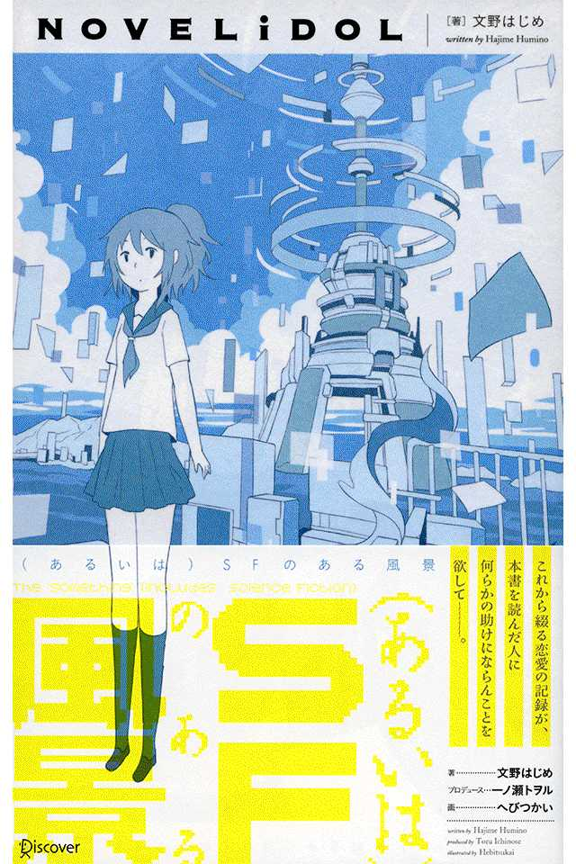
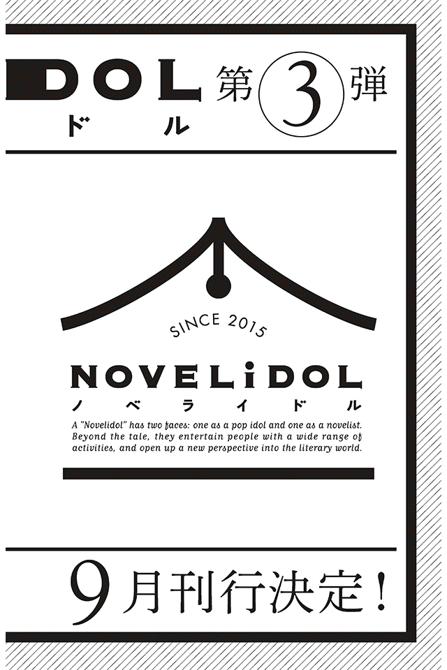
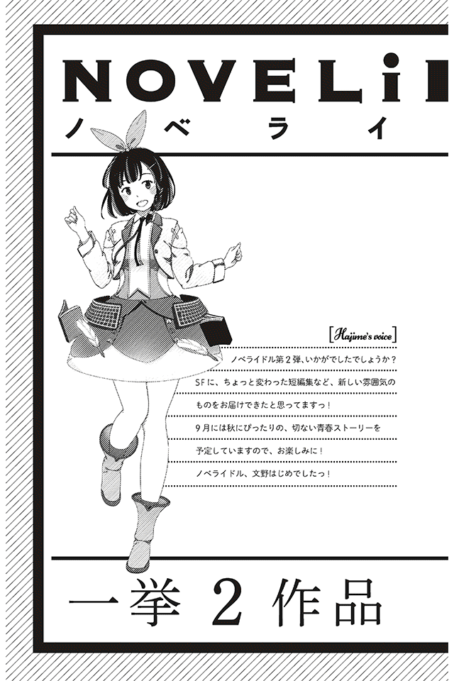

| （あるいは）SFのある風景 NOVELiDOL | |
| 文野はじめ | |
| (2015) | |

二百年前の古典小説が、今なお恋愛の甘酸っぱさとその苦みを正しく伝えていることを考えてみるに、僕がこうして大人になった今、かつての恋愛の記録を一つ残してみようとすることには、一定の価値があるように思う。何故ならば、人間に本当に必要で大切な感情は、時代によらず不変不動なものであるからだ。これから綴る恋愛の記録が、本書を読んだ人に何らかの助けにならんことを欲して。
なお、本書の執筆にあたってはシャルロッテ・コーポレーションのライティングソフト「ゲーテの文法ver.4.0」に手伝ってもらったことを併記しておく。あの時代の僕の思考や雑記、その他の必要な情報の収集・編集に大いに力を貸してもらった。その結果、伝えたいことを最も適切な形で出力することが出来たように思う。
二〇七一年六月・湘南某所にて
高校三年生になった五月。すでに夏の気配はそこら中に満ち満ちて、蝉の鳴き声が遠くに聞こえるような気がする季節。尋常じゃない日差しの中、僕は、見知らぬ同級生の自宅に向かって、急な坂道をうんざりしながら登っていた。
「彼女の自宅にこれまでの配布資料を届けてもらえないかな？」
先生にそう頼まれたのは、今日の放課後のことだ。
「なんで僕が行かなきゃならないんですか？」
「放課後、特に予定なんか無いんだろ？」
恰幅のいい髭面の体育教師は、下品な笑顔で僕に言った。確かに、僕に放課後の予定は無い。だからと言ってこんなお遣いをさせられる理由も無い。僕は反論する。
「いや、でも今時配布物なんか、データで送ればいいじゃないですか？ なんでわざわざ僕が行かなきゃならないんです？」
「うーん、送っても返信が無いんだよね。心配じゃない？ 高校に入ってからずうっと来てないのよ、彼女」
「それは、知ってますけど......」
この春のクラス替えの時、彼女の噂を耳にした。在籍しながらも、全く登校してこない女子学生の存在。
「だったら、先生が行けばいいじゃないですか？」
「俺は部活の顧問で忙しいからなぁ......。頼まれてもらえない？ 彼女に会えたらついでにさ、学校に来るよう促してみてよ。お前、こういうの、向いてると思うんだけどなぁ」
「......分かりました」
ありがとう、そう言って先生は、嬉しそうに配布資料が一式入った封筒を僕に手渡した。
その女子学生の家は、新藤沢から北に四駅移動した湘南ヶ丘の市営アパートの一室にあった。駅からそのアパートまでは歩いて三十分くらいの距離である。
「信じられない。この急な坂道をこなくそ暑い中、歩いて行かなきゃならないのか」
一応、検索はかけてみた。市営アパートに向かうためのバスがあっていいはずだと考えたからだ。けれども僕の情報端末は答えを示さずに、検索エラーだけを伝えてきた。
コンクリートの舗装路が厳しい熱射を僕に突き刺す。ここら辺りになると、市の中心街で散布される冷却剤の効果はほとんど無い。日射病になっても困るので、僕は日傘を取り出した。黒い花弁の傘が開いた。
「そろそろのはずなんだけど......」
ぜえぜえと息を切らして僕は、最後の一歩を登り切る。そして、目の前に巨大な市営アパート群が広がっていた。世帯数約三千五百、住民数約八千。それらを収容する装飾の無い殺風景な白い建築群。後ろを振り返れば遠くに海が見渡せ、その水平線からは真っ青な空に突き出すように黒い塔が、天へと向かって延びていた。江の島沖から六十キロ先にある宇宙エレベーターの機動港だった。ここから見えることは、ごく稀なことだ。しかし、そんな偶然に喜ぶほどの余裕は、今の僕には無い。
いくつもの棟を抜け、目的の部屋に辿り着く。Ｋ‐十三棟の二三階、エレベーターから数えて三つ目の部屋。そこが彼女の家であった。随分古い建物だった。所々の壁の塗装は剥げていて、ひび割れが入っている。そして、ここまで来てようやく僕は、この行為の無意味さを理解した。一リットルの汗をかき、不快指数が最大になった結果、僕は悟ったのだ─この配布物を手渡して一体何になるというのか。彼女のことは何も知らないし、彼女に学校に来るよう、促す？ そんなことを何で僕がしなくてはならないのだ。したところで、彼女が学校に来るようになるとは思えない（二年間まるまる来てないんだぞ？）。加えて実際の所、何と声をかければいいのかが分からない。
そういう自暴自棄な気持ちを持って、僕は彼女の家のインターホンを押した。勢いよく、そして適当に。
彼女の名前は、サラガネ・サラサという。
インターホンが鳴り響いた。けれども部屋の中からは何も気配が感じられない。時刻は午後三時過ぎだ。彼女の両親は出掛けていて、彼女自身も部屋にはいないのかもしれない。ここまで来て留守なのも困ったが、いないならいないで好都合でもあった。書類一式はポストに突っ込んでいけばいい。行ったけれどもいなかった、そう言えばあの先生の頼み事にも一応応えたことになる。
二回三回と立て続けにインターホンを押した。どうせいやしないのだから、そうタカをくくっていた。そして中からパタパタと足音がして、ドアが乱暴に開かれる。
彼女は、部屋にいたのだ。
「はい、どちら様？」
突然の対面に僕は面食らった。何故、急にドアを開けたんだ。もうワンアクションあったっていいじゃないか。訪問者がまだ誰だか分からないうちに、彼女はドアを開けた。無防備にも程がある！
「ああ、えっと......」僕はどもりながら、自己紹介をする。名前を、そして同じ高校のクラスメイトであることを、伝える。
「ああ、はい。で、何の用？」
彼女が、僕の頭のてっぺんから靴のつま先までをざっと見る。そして、制服姿であることを確認すると、一応、同じ高校の生徒であることを理解したようだった。
「ああ、いや、ちょっと先生に頼まれて、配布物を......」
僕は肩にかけた鞄をおろし、中から封筒を取り出した。
「ありがとう」
そう言う彼女に書類を手渡した時、僕は改めて、彼女をよく見ることが出来た。
アルビノ─彼女に対して最初に抱いた印象はそれだった。粉雪の様な白く透き通った肌。だが彼女の持つ艶やかな黒い髪が、アルビノで無いことを物語っていた。内向きにカールした真っ黒なセミロングヘア。そして彼女の瞳も恐ろしく澄んだ黒色をしていた。黒いビードロ、そんなものがあれば、それが最も適当な表現な気がする。何もかもが作り物めいた美しさ、それを彼女は持っていた。
「何か？」
封筒の中身を確認していた彼女が、顔をあげて僕に問いかける。彼女に見とれていた僕は慌てて顔を逸 らす。
「いや、何でもないで、す......ってか、そんな書類、もらっても意味ないよね。だって、健康診断の連絡とか一年の予定表とか、そんなのどうってことないでしょ？ 調べればすぐに分かる情報なんだし......あ、あと、これ、先生から連絡あったでしょ？ 見てない？」
彼女は僕をじっと見て、抑揚の無い声でハッキリと答える。
「見てない」
「そう、見てないか。そうかー......」
「うん、見てない」
さて、会話が止まってしまった。何を話したらいいのか、てんで分からない。どうしたものだろう。このまま帰ればいいのだろうか。先生からの依頼も一応果たしたことだ......だが、待てよ、今来たクソ暑い道のりをまた歩かなければいけないのか？ いや、それは勘弁してほしい......。
そんなことを思いつつも他に選択肢が無いことを悟り、別れのあいさつをしようとした間際─
「あがってく？」
彼女がそう言った。
「え、いいの？」思わず嬉しそうな声を上げてしまう。
「暑そうだから、何か飲んだ方がいいかなと思って......」
「ご両親とかは、大丈夫なの？」
「大丈夫。親、いないから」
「そう、それなら、申し訳ないんだけど、少しあがらせていただきます」そう言って、僕は靴を脱いで玄関に上がった。そしてその時の僕は、愚かにも、彼女の言った両親不在の意味を正しく理解出来ていなかった。
グレーのＴシャツにデニムのホットパンツ姿の彼女に従って、中に入ると、嗅ぎ慣れない匂いがしてきた。インクの匂いである。六畳程のリビングに入るとそこら中に雑誌や新聞紙が散乱していた。データではない、現物としての、印刷された状態での、雑誌や新聞紙。
「図書館みたいだね」
「そこらへんに適当に座って」
彼女は僕の話を流して命じた。座れと言われても、それらしい椅子もない。部屋にあるものはベッドとサイドテーブル、それと散らかった印刷物だけだった。仕方がないので僕は床に座った。
「お茶でいい？」
「はい、何でもいいです」
床に散らばった印刷物をチラと見る。二〇五一年の経済雑誌だった。十年前のものだ。驚いた僕は他のものにも手を伸ばしてみる。五年前の新聞、八年前のファッション雑誌、最新のものに交じって恐ろしく古い印刷物がいくつもあった。
飲み物を持ってきた彼女に、僕は問いかける。
「何、これ？ 何でこんな古い雑誌、読んでるの？ ってか、何で、印刷されたもので読んでるの？」
「何か、変なの？」
そう言って、彼女はベッドに腰掛けた。軋 んだベッドから投げ出された彼女の白い素足。目のやり場に困り、僕はまごついてしまう。
「へ、変でしょ？ だってこんなもの全部検索すれば出てくるじゃん」
「......でも、マサキさんが読めって」微かに首を傾げる彼女。
「マサキさん？」
「そう、マサキさん」
そう言って彼女はコップに口をつけ、そのまま黙りこんでしまう。そうですか、マサキさんが何なのか詳しく説明する気は無いわけですか。仕方なく僕が会話を引き継いで、尋ねる。
「先生からのメールは何で見なかったの？ 心配してたよ」
「情報端末、持ってないの。アドレスも、無い」
「そんなバカな」
僕は乾いた笑い声をあげた。が、それも短く虚空に消えた。彼女が続けて言う。
「本当に、持ってないの」
「......本当に？ 真面目に言ってるの？」
僕は彼女の顔を覗き込んだ。表情は固定されたまま。嘘を吐いているようには見えない。
「信じられない......じゃあ、何？ 先生は誰宛にメールを送ったの？」
「多分、マサキさんのアドレス」
「ああ、そう」
またマサキさんか。これはとても変わった女の子だ。これじゃあ、学校なんかにも来やしない、そんなことが頷ける変人っぷりだ。
「それで、何で学校に来ないの？ あ、いや、別に話したくないなら別にいいんだ、ちょっと気になっただけだから」
彼女はコップをサイドテーブルに置いて、僕をじっと見つめる。
「まだ調整が付いてないから」
「調整？ 何の調整なの？」
「分からない」
僕はかぶりを振って溜息を吐いた。彼女は何かの病気なのではないだろうか、そんな疑念が頭をよぎった。学校に来る気なんか全くないのだろう、きっと。
「まあ、いいや。来たくなったら来たらいいと思うよ」
「そう。あなたはそれを言いに来たの？」
「......いや、先生に頼まれただけだよ」
そう言って僕は、今した発言があまり彼女に好意的でないような気がして、取り繕うように言葉を継いだ。
「先生ってのもさ、サッカー部の顧問なんだけど、ちょっとね......その先生に頼まれたら断りにくいんだよね。僕......サッカー部だったから。でも、怪我をして辞めた。去年の話。だから、何か悪くて......」
「そう」
あまりに興味がなさそうに返事をされて、僕は少し気分を害した。彼女にこんな話をして何になる。
「アキレス腱をやっちゃったんだ。でも、今時それくらいすぐ治るわけじゃん。でも、駄目だった、昔みたいにプレー出来なくて、辞めた」
僕は手に持ったお茶を飲み干して、立ち上がる。もうお暇 しようと思う。
「じゃあ、そろそろ帰るよ。お茶、ありがとうね」
〝美容師の指先問題〟という命題がある。二〇二七年にミネソタ大学・生体工学部教授のドナルド・ゲットーが唱えた命題で「肉体における欠損部位の遺伝子学的補完行為は、その欠損を以前のように元通りにすることは出来ない」というものである。これは、事故で指を失った美容師が遺伝子工学で全く元通りに治療した指を使っても、以前のように髪を切ることが出来なかったという研究から来ている。同様のレポートは世界中から上がっており、結果、肉体の欠損の完全な復元には、過去に肉体が記憶しただけの時間が必要になることが分かったのである。
玄関で靴を履いて、見送りに来た彼女に一応訊いてみた。
「ここから駅までのバスとかって無いの？」
「知らない」
予想していた通りの答えだ。
「無いのね、やっぱり。まあ、カミサマに訊いてもそう答えたから、そうなんだとは思っていたけれども」
「カミサマ？」
「そ、カミサマ。知らないなら知らないでいいよ。それじゃあね」
そう言って、僕は彼女の家を出た。陽はだいぶ傾き、生ぬるい風が僕の頬をそっとなでる。彼女はカミサマを知らないのか。今時カミサマに訊けば、何でも答えてくれるというのに。
古臭い白けたアパート群を抜ける時、行きには気付かなかった喫茶店が目に付いた。木造のこぢんまりとして静謐 な感じをたたえた喫茶店だった。まだ暑い日差しの中、一人の男性客が外のラウンジでコーヒーを飲んでいる。
そして、僕は彼女の家に日傘を置き忘れたことを思い出した。取りに戻る気力はない。僕は仕方なく家路についた。
カミサマ【かみさま】
二〇二〇年代初頭、ネットワーク上に突如出現した自律思考プログラムの総称。匿名のプログラマー数名が開発したと考えられているが、その発祥には諸説ある。この数十年の間に思考パターンの自発的な拡張・再構成を行い、国際ロボット委員会設定のＡＩレベル・Ⅵに規定された唯一のフリープログラム。ネットワーク上にある情報をもとに、利用者の質問に答えることが出来る。
引用 新世紀大字海 第二十三版
家に帰ると、姉さんからのビデオメッセージが届いていることを、母が事務的に僕に告げた。僕は二階の自室に入り、壁面のパネルをタッチする。
壁が薄く発光をした後、ＯＳが静かに起動する。メールソフトを身振りで呼び出し、姉さんからのビデオメッセージを再生した。姉さんは今、火星で働いている。
狭いコンパートメントの中、クリーム色の壁を背景に、僕の姉さんが話し始める。
「あー、久しぶり。多分一カ月ぶりのメールです。こないだの返信、見ました。クラス替えね。ちょうど良いじゃない、そこで友達作って楽しくやってくれれば良いと思う......」
姉さんはセミロングの茶髪を後ろで一つ結びにしていた。次に話す言葉に詰まっているようで、姉さんは目線を下に向ける。カメラに向かっての独白は、何を話せばいいのか分からなくさせる。
姉さんが火星に行くと決断したのは、今から二年前だった。僕が高校に入ったばかりの頃で、あの火星居住地の悲惨なパンデミックが発生して数カ月後のことだった。
もちろん、父も母も、そして僕も反対をした。ただでさえ気の遠くなるような時間をかけて火星に行く。それも、パンデミックが起きた後の災厄の地へ、まだ大学院在学中の女学生がたった一人で。反対しない家族がいるわけがない。
「私の恋人が、あそこで働いていたの」
姉さんはそう言った。それまで姉さんに恋人がいたことを、母も父も僕も誰一人知らなかった。
「大学の先輩で環境学専攻。テラフォーミングの研究で向こうに行っていたの。でも、あのパンデミックがあってから、連絡が取れない。多分、もう生きていないと思う。あの人が火星でやりたかったことを私が代わりにやろうと思うの」
火星居住地でのパンデミックは、惑星進出黎明期の人類に大きなショックを与えた。もちろん、理屈の上では人類がこれまで罹 ったことのない感染症がいずれ発現することは、誰もが知っていた。だけれども、いざ実際に発症してみると全ての対策が後手に後手に回った。感染はついぞ止められず、一部居住地を隔離・閉鎖することで一応の終息を見た。国籍も年齢も問わず多くの死者が出た。だがそれは、人類の大半にとっては遠い世界の出来事で、人々はまるで映画の一部を観るようにニュースを見ることしか出来なかったのである。
だから、僕とあの災厄を繋ぐものは、火星へのわずかばかりの募金くらいのものだと思っていた。姉さんがあんなことを言い出すまでは。
姉さんが火星に向かう前に一度訊いたことがある。
「何でそこまでして火星に行くの？ 姉さんだって、一歩間違えればどうなるか分かっているんでしょ？」
こちらを見ずにしばらく押し黙ってから、姉さんはこう言った。
「私もね、こんな目に遭って初めて分かったんだけど、何事も無関係なことなんか無いんだよね。恋人が火星にいなければ、多分今回のパンデミックだって他人事だと思ったと思う」
「それだけが理由なら、わざわざ火星復興なんかに行かなくったって......仕事にする必要なんかあるの......？」
姉さんはこちらを見て言った。
「そうじゃないんだな。供養したいとか無念を晴らしたいとか、そういう気持ちではないのよ。私の知っている狭い世界と、ずっとずっと遠くの火星が繋がっていることを知って、私はとても個人的に覚悟させられたのよ。だから、行くの。火星に行って、私のために何かするべきだと、覚悟させられたから......この世界に、覚悟させられたのよ」
そしてまた姉さんはそっぽを向く。
僕はこの時の姉さんの横顔を見て、その発言の真意を上手く汲み取ることが出来なかった。でも多分それはおおよそ次の様なことなのだろうと思う。「覚悟」には、それをするためだけの悲惨で苦い経験が必要なのである。
「うーん、話すこともそれほど無いんだよなあ」
そう言って姉さんは席を立ち、カメラを手に取った。映像が縦横に揺れ、コンパートメントの窓から、外の様子が映り込む。火星の赤い空に赤い大地。そして、一つの白い建物が目に付いた。ビニールハウスの様な構造の建物だった。
「あれが、今やっている酸素生成の実験棟。苔の育成をして、光合成をさせているの。でも、酸素の生成量は正直全く足りてない。結局今の居住区の空気を賄っているのは、極冠から輸送した水を分解したものになっちゃってるしね。アレ、生成したばかりのは、独特の匂いがして、私はあまり好きじゃないんだけどさ。でも、無いものはしょうがないからね。まあ、そんなことはいいんだった。あれよ、あの話をしようと思ってたんだ。あんた、〝来年で〟高校卒業でしょ？ 卒業したらどうするつもりなの？ もし大学に行くようなら、あたしが通ってた研究室の教授に推薦状、出しておくけど？」
カメラが自分に向けられなくなって、姉さんは饒舌に話し始めた。
「まあ、もしも働くっていうのなら......そうね、その時は何もしてあげられないけれど。でも、何もしないってのは、やめなさいよね。母さん、また心配するから。ただでさえ、私がこっちに来てからずうっと怒ってるでしょ？ だからさ、あんただけでも良い子でいてほしいわけよ。まあ、良い子が何なのかっていうのはまた別の問題にはなるんだけどもさ、それはまた別の機会に話しましょう。それじゃあ、返信、よろしくね。母さんと父さんにもメール送ったけど、あんたからもよろしく言っておいてください。二人とも未だに私を許してくれてないみたいだから。ホント、残念なことよね。それじゃあ、またね」
姉さんが画面に顔を出し、こちらに手を振った。そしてその後ろでは、赤い砂が強風に煽られて舞っている。死んだ惑星の赤い血脈。
僕は、適当に返事を書いて送った。面倒だったので、文書の メールで済ませた。内容もおざなりのもの。進学か就職かはまだ決められない。これでも僕は、今を生きるのに精一杯で、これから先のことを考えるだけの力は残っていない。多分、姉さんは幾らか機嫌が悪くなって、少し怒ったメールを送ってくるに違いない。でも怒られるのは、どんなに早くても三日後にはなるだろう。
言い訳をさせてもらえれば、僕はこの時何かを決断するための、覚悟の準備がまだ出来ていなかったのである。
翌日、学校に行き、授業を受けて、放課後に職員室で先生に報告をする。昨日のサラガネ・サラサの件の報告である。先生は特段興味もなさそうに話を聞いて、僕の労をねぎらった。そして終わり。ただ、それだけだった。僕は僕の務めを果たし、先生は先生としての職責を全うした。多分、そういうことなんだろう。これで誰かが誰かを責めることは無くなり、きれいにまとまったというわけだ。別にサラガネ・サラサがずうっと学校に来なくても構わないわけだ。一応、必要な書類は届けたし心配した様子はして見せた。ただそれだけ。
僕は一人、空っぽの教室で帰り仕度をして、学校を出る。
そしてまたあの急な坂道にいた。空の半分を覆うほどの真っ白な入道雲を背景に、あのアパート群を見下ろしていた。昨日置き忘れた日傘を取りに、僕は再び彼女の家に来たのである。
インターホンを押して彼女が出てくるのを待った。昨日のあの様子では外に出ているということは無いだろう。そして中から足音が聞こえ、声がかけられた。
「はいはい、どちら様ですか？」
男の人の声だった。答える間もなくドアが開かれる。
「ああ、いえ、サラガネさんのクラスメイトの......」僕はどもりそうになる。
「ああ、昨日来たって子か。サラサから話は聞いています。上がって上がって」
そう言って男は僕を招き入れる。まさか彼女の父親では無いだろう。お兄さんだろうか。年は二十代後半くらい。茶色の髪に緩いパーマ、二重まぶたに鼻筋の通った精悍 な顔。右耳には黒いイヤホン型の情報端末を着用している。僕がイメージするカッコいい大人の理想の体現がそこにあった。靴を脱いで中に入った時、ふと思い出す。この人をどこかで見たような気がする......そうだ、昨日の帰りに見かけた喫茶店、そこにいたあの男性客だった。
廊下を抜け、リビングに入ると彼女がいた。白いブラウスに黒いサテン地のロングスカートといった格好で、ベッドに腰かけている。白い肌と黒い髪との激しいコントラスト。昨日とは打って変わって、清楚な余所行きの格好だった（昨日のあの服装は無警戒そのものだったに違いない）。そして室内は、窓から差し込む強い日差しによって光と影に仕切られていた。まるでその部屋だけが色彩を失って、モノクロの世界に迷い込んでしまったかの様だった。
「サラサ、学校の友達」
男が彼女にそう告げる。彼女は別段驚いたような表情も見せず、こちらを向いて頭を下げる。男が僕に尋ねた。
「今日は何の用事で来たの？」
「いや、傘を......」歯切れ悪く答える僕。
「傘？」
「日傘を......昨日こちらに忘れてしまって」
「ああ、日傘。サラサ、あるの？」
サラガネさんは男の方を向いて頷く。
「玄関の傘立てに置いてある」
「だってさ」
「あ、はい......ありがとうございます」
僕は戸惑っていた。この男は誰なのか。彼女と随分親しそうだけれども......。
「ああ、ごめんね。自己紹介がまだだった。自分は、マサキ・イナト。ちょっと訳あってサラサの身の周りの世話をしているんだよ」
男はそう言って、からからと笑った。屈託のない笑顔だった。
「いや、しかし嬉しいな、サラサの友達が来てくれるなんて」
「いや、友達では......」僕は否定の語を口にしてしまう。
「まあ、良いさ。少しは時間あるんでしょう？ そこらへんに座って。何か、飲み物を用意するからさ。ほら、サラサ、キッチンに行って用意をしようじゃないか」マサキと名乗ったその男は急きたてるように言った。
彼女は立ち上がってキッチンに向かう。そして僕は彼女の顔が心なしか微笑んでいるような気がした。昨日は気付けなかったが、彼女にも、一応表情筋があるみたいだ。
それから僕は彼女の家に一時間くらいいたように思う。大抵はマサキさんが話を振って、僕がそれに答える、そんなやりとりばかりだった。でも、僕は当たり障りのない形でしか答えなかった。何故ならば、僕はまだマサキさんが何なのか、よく分かっていなかったから。でも、彼女がいる手前でマサキさんに深く訊くことは出来なかった。僕が考えるに、サラガネ・サラサとマサキさんの関係は......。
「じゃあ、そろそろ帰ろうか」
マサキさんはそう言って立ち上がった。
「サラサ、また明日来るから、さっき言っといたことは、しっかりやっておくようにね」
「はい」無表情に答える彼女。
「君も一緒に帰るでしょ？」マサキさんが僕に尋ねる。
「あ、はい」
「傘、忘れないようにね」
「はい」
そして僕は、彼女の方を向いて別れの挨拶を述べた。
「お邪魔しました。それじゃあ、また」
何故か僕はこの時、次また会うかのようなセリフを口にした。いやこれはきっと、ただの社交辞令って奴だ。その時、その場の空気に飲まれて、つい言ってしまったのだ。だって、サラガネさんと次にいつ会うっていうんだ？
ローマ数字の一
アパートを抜けて、大通りの坂道に差し掛かる頃、マサキさんが言った。
「バスに乗って帰ろうか」
マサキさんの二歩後ろを歩いていた僕の足が一瞬止まる。
「え、バスですか？ え、ってかバスあるんですか？」僕は素っ頓狂な声で聞き返す。
「そりゃあ、あるよ。さすがに、駅まで歩くのは無理でしょ？」
「え、いや、昨日来た時は無かったし......それに、カミサマに訊いても無いって......」
「カミサマ？ ああ、あの何でも答えてくれる自律型ＡＩね。あんなものは限られたことしか答えないよ」
マサキさんが立ち止まる。バス停がそこにあった。僕は頭の中が疑問符でいっぱいになる。
「いや、でもカミサマはネットワーク上にあるデータ、全部にリンクすることが出来るＡＩだって授業で習いましたよ？」
「それは言い過ぎだよ。たとえ、データにリンクできたとしても、答えられる内容と答えられない内容とがある。国家機密関連のデータだって、完全にネットに接しない訳にはいかない。にもかかわらず、そのデータが漏れていないのは、カミサマにも答えられないことがある、ということを意味する」
にわかには信じられなかった。この超高度情報化の時代、国家機密なんてものはあって無いようなものだったからだ。自国領土が占領されるかもしれない─そういった情報は、相手国が進軍の準備をした段階で全てこちら側に筒抜けであり、結果的にその進軍に対してこちら側は、有効な対策を適切なタイミングで準備することが出来るのである。それはつまり、お互いの腹の探り合いなどというものがあって無いようなもので、本音と建前の垣根が一切なく、あとは物理的パワーバランスが均衡を保てれば、仮初の平和が出来上がる、そういうことを意味していた。そして現在、仮初の平和は成立から三十年目に突入していた。
バスがやってくる。クリーム色の車体に、ブルーのラインが入っている。随分と古い型のものだ。乗客は最奥席の老婆一人だけだった。僕はこんなバスが運行していることが信じられず、困惑気味な表情でマサキさんの隣に座る。
「それにほら、君たちくらいの年齢だと都市伝説とかって流行ってたりするでしょ？」
バスが動き出して、マサキさんが言う。
「何言ってるんですか？」
「さっきの話の続きだよ。カミサマにも答えられないことがあるって奴さ」
「それで都市伝説？」
「そうだよ、都市伝説。よく言うじゃない、一二階建てのマンションにある一三階とか、地図に無い近道とか」
「ああ、そういうの」
「カミサマに訊いても、間違ってたりする情報、ああいうのもあるんだからさ、カミサマが何でも答えられるっていうのは、過大評価だと思うけどね」
「生憎、僕はその手のものを信じていませんから」僕は前を向いたまま答える。
マサキさんは、僕の不機嫌な様を無視するように話を続ける。
「いやいや君、結構あるんだよ？ 役所に申請される建築物とか道路なんか、データでしかやりとりしないから、元々の計画と実物とは結構違うんだ」
「そんなバカな」
「本当だよ。建築現場を実際に見に行かないなんてことは、そりゃあもうよくあることなんだから。カミサマはウェブ上のデータしか知らないし、役人はデータしか信じないのさ」
マサキさんが笑いながら言う。
「君は、友達と探しに行ったりしないの？ 自分が高校生の頃は結構探したけどなあ」
「......僕、友達、いませんから」
「そっか」
マサキさんも前を向いて、そう答えた。二人の間に沈黙が生まれる。オレンジ色の陽が車内を一色に染めている。そして時間が、恐ろしい程にゆっくりと進んでいく。
「マサキさんは、彼女の何なんですか」僕は耐え切れず、訊いてしまう。
尋ねなくても、答えは大方予想がついていた。それが、しても良い質問でないことも分かってはいた。けれども、沈黙よりはましだった。
「一応ね、官営後見人って奴だね。知ってるかい？」
知っていた。今時珍しくもない。親のいない未成年の子供の面倒を見る、国家に雇われた世話係。死亡した両親の遺産、親権を放棄した親が払う一定の公約金、そして税金によって運営されている。
サラガネ・サラサの両親がすでに亡くなっているのか、はたまた両親が育児放棄をしたのか、そこのところは分からない。
「知っています。彼女、それで学校に来れないんですか？」
「まあ、そんなところだよ」
あまり深く聞くなよ、そんな様子がマサキさんから窺 えたが、僕はどうしても聞きたかった。
「彼女、薬飲んでましたよね？ ......病気なんですか」
僕は今日、気が付いたのだ。あの印刷物だらけの部屋の中、サイドテーブルに無造作に置かれた薬剤の束に。
「あの薬、アッパダイン でもないし、トルナックス でもないですよね。何の病気なんですか？」
「詳しいんだね」微笑みながら、マサキさんがこちらを向く。
「今時そんなこと、調べればいくらでも分かりますよ」
「そうだね。色々あるんだよ。でも、そういう話は自分がすることでもないし、そんな権限は与えられてないからね。もし気になるようなら、サラサと仲良くなって彼女から聞くといい。彼女には、そういった同年代の友達が必要だからね。よろしく頼むよ」
僕は何も答えずにマサキさんを見返す。その時バスは駅に着き、僕らが降りるためのドアが開かれた。
駅でマサキさんと別れる際、連絡先の交換をした。僕は制服の胸ポケットから手帳サイズの二つ折り情報端末を取り出す。マサキさんの情報端末はブレスレッド型のもので、三角形が三つ組み合わさったロゴが目に付いた。知らないメーカーのものだった。
「あれ？ マサキさん、イヤホン型の端末じゃないんですか？」僕は気になって尋ねた。
「ああ、これはね、別物。情報端末じゃあないんだよ」マサキさんが右耳に片手をやって微笑んだ。そう言って会話は終わり、僕らは改札を抜ける。マサキさんは三番線、僕は四番線へと向かった。
ホームから見る地平線はすでに紫に染まり、一人佇む僕は改めて自分が一人ぼっちでいることを意識した。影が薄く長く伸びている。僕はマサキさんに嘘を吐いた。僕にもかつて友達がいたのである。
今、友達について語ろうと思う......高校二年のクラス替えで知り合った、大切な人の話だ......ただ、プライバシーに配慮して話を進めることを許してほしい。何故ならば、これから語る内容は、今ある僕と地続きの微妙な問題を含んでいたからだ。
それは、ヤマモトとタカナシさんの二人の物語だ。ヤマモトは野球部に所属していて、二年生にしてレギュラーになる程の選手であった。ピッチャーで打順六番。そんな彼も、時代によらない高校球児特有の、影の無い爽やかさを持ち合わせていたように思う。一方で、タカナシさんは、部活にも所属せず、かと言って勉学が出来るわけでもない、何の特徴も持ち合わせていない、極めて普通の女の子だった。けれどもヤマモトは、彼女がクラスで一番よく笑う女の子だったことを知っていた。
二人は席が隣同士になったことを機に話すようになった。大抵は、タカナシさんがヤマモトに話しかける格好だった。「どうでもいいことなんだけど」そう言って、彼女は会話を始める。そうしてやっぱりよくよく話を聞いてみれば、確かにどうでもいいことばっかりなのであった。
「本当に女の子って、くだらない話ばかりするよな」
ある時ヤマモトは言う。
「質問じゃなくて、報告する感じの話だと、それにどう答えればいいのか、分からないじゃん？ 報告って何だよって感じ」
「......報告って何よ？ 例えば」僕はオウム返しに訊き返す。
「昨日、ご飯を作っていたら、入れる直前で醤油が切れててにっちもさっちもいかなくなったぁ、とか？ あと、新しく買った洋服のタグを付けたまま出掛けちゃった、とかさ、そういう感じのこと」
「ああ、そういうのね。あれじゃないの？ 何でもいいからヤマモトと話したくてしょうがないんじゃないの？」
僕は小馬鹿にする。ヤマモトは目をつむってしかめっ面をした。それは、何て答えればいいのか分からない時に、ヤマモトがよくする癖だった。
ヤマモトが言うように、確かにタカナシさんは、おしゃべりな女の子だった。茶髪のセミロングを振りまわして、いつもパタパタどこかへと、動き回っていた印象がある。そんな彼女だから、ヤマモトの練習試合にもよく足を運んでいた。友達と作った手作りの横断幕を掲げて歓声を上げる。そして彼女は友達たちと大声で一緒に笑うのだ。
「タカナシさん、デートしたりしないの？」
僕はある時彼女に尋ねる。
「えー、何それ？ ヤマモト君とってこと？」
そう言って彼女は顔を赤らめて、頬に手を当てる。そばかすを気にして隠す素振り、彼女のよくする癖だった。多分、ヤマモトはこの笑顔にやられたんだ。出会ってから二カ月足らずで、ヤマモトとタカナシさんは放課後に遊びに出かける間柄になっていた。傍から見ても、うらやむくらい仲睦まじく映ったことだろう。
でも、今なら僕は知っている。恋愛の始まりは、極めてシンプルであることを。そして成就させるきっかけは、誰も与えてくれないことを─今なら僕は知っている。
「ご注文は？」
物言いの柔らかな初老の店員に訊かれる。場所は市営アパート群、入り口付近に隣接するレトロな喫茶店だった。
「サラガネさん、何にする？」僕はまだ決まっていなかった。
サラガネ・サラサはメニュー表を見て、微かに眉間に皺を寄せて答える。
「ブ、ブレンドコーヒーで」
「ホット？ アイス？」店員が間髪いれずに尋ねる。
「......ホ、ホットで」
「......じゃあ、僕はキャラメル・ラテのアイスで」
店員がメモを取り、奥へ下がる。店内にはたくさんの観葉植物が飾られていて、十年くらい前に流行った歌謡曲が流れている。土曜のお昼にもかかわらず、お客さんは僕達以外いなかった。キッチンの方から豆を挽 く音が聞こえてくる。
今日また彼女に会うことになったのは、学年行事の連絡に変更があったからだった。特に先生に頼まれたわけではない。データで送っても彼女には直接届くことはないし、もしも彼女が何かの弾みで学校に来ることがあった時に困るかもしれない、そう思って一応その変更について伝えに来たのである。彼女の家に着き、その流れで喫茶店に誘った。ただそれだけのことだ。
「こんなに暑い日に、よくホットコーヒーなんて飲めるね」
駅で貰った広告入りの団扇であおぎながら僕は言う。
「私、コーヒーって飲んだことがないの」
僕は、彼女をついと見てしまう。
「それはまた......」
でもまあ、そんな感じもしなくはない。と言うよりも、恐らく彼女の生活は、僕が思っている以上に、困窮している様子であった。しかし、官営後見人がついた子供の生活が潤っている道理は確かに無い。そもそも、官営後見人というのは世間一般にあまり歓迎されていない制度だ。税金で成り立っていることは言うまでもないが、加えて、他人の人生をどういう権限で預かることになるのか、この点に感覚的な違和感を覚える人も少なくない。かくいう僕もその中の一人であった。マサキさんが良い人そうなのは、見て分かる。けれども、完全な信頼感をあの人に抱くことは、この時はまだ出来なかった。
「ただのコーヒーは、ちょっと飲めないな」
「何で？」お冷のコップに付いた水滴を、紙ナプキンで丁寧に拭きながら彼女は訊く。
「えー、だって苦いじゃない」僕は肩をすくめる。
「そう......？」そう言って彼女は拭き終わったコップの縁を残念そうになでる。
何を馬鹿な事を言っているんだ、僕は。彼女がこれから飲む物を否定して、どうしようってんだ！ ......上手く会話をしようとしても、何一つ面白いことが言えない。僕は、昔からずっとこうだった。それでも会話は続けなくてはならない。
「さっき眉間に皺が寄ってたけれど、何か思うところがあったの？」
彼女が少し驚いたように顔を上げる。
「寄ってた？」
「ちょっとね」
「はあ......そう......いやね、コーヒーを飲んだことがないから、取りあえず一番上のメニューのものを頼んでしまったの」
失笑をこぼしそうになる。いや、笑わないようには試みた。試みたけれども、彼女がクソ真面目にそんな答えを言ったものだから、その内容とのギャップに、可笑しさが込み上げない訳がなかった。彼女の眉間にまた皺が寄る。抑制の利いた声で僕に問う。それも多分クソ真面目に。
「ねえ、じゃあ訊くけども......ブレンドコーヒーのブレンドって何？」
「えっ？ ブレンド？ ......そりゃあ......いやぁ......」
首を傾げて考えてみた。けれども僕は分からなかった。ブレンドって何だい？ 何を混ぜたというのだろう......。
僕が呆けた顔をしていたんだろう。そして、してやったつもりだったのだろう。彼女の眼が僅かだが微笑んだ。
「なんか悔しいな」
僕はそう言って情報端末を取り出した。こんなことくらい、カミサマにでも訊けばいい。と、彼女が僕の端末画面に手を差し出して、言う。
「ダメ」黒い瞳が僕を見つめる。「それはダメ。ずるいよ」そして彼女はホンの少しだけ、微笑む。
僕は、どぎまぎしてしまって、それを悟られないように「そりゃあそうだよね」と返すことしか出来ない。急に恥ずかしさが込み上げて、取り乱しそうになる。これほどの娘 が今目の前にいることは、何かの間違いとしか思えない、そのくらい儚げな笑みだった。
その喫茶店で過ごしたのは大体一時間から二時間くらいだったと思う。この時以来僕は彼女を二、三回お茶に誘った。特に用事が無いこともあったが、彼女はそのことについては特に何も気にしていないようだった。そして彼女の素性を大まかに知ることが出来た。知らなくても良かったんだとは思う。けれども、知りたいと思ったのだ。
彼女はやはり、捨て子だった。両親が、育児放棄をしたのである。
タカナシさんの家庭事情が少し複雑であることは、高校二年の六月頃にはクラスの皆が知るところとなっていた。
彼女は、クローンだった。それも、父親がかつて愛した妻のクローンだった。もちろん日本でのクローンの製造は禁止されている。だから恐らく、海外─それもアジア後進国にて法外な金額を払って民間業者に製造を依頼したのだろう。それは、事故死した女を忘れられない男の狂気であった。そういう事情から言えば、父親という呼び方には語弊があっただろう。だが戸籍上、男は彼女の父親であった（左寄りの人権団体の圧力は時代によらず強い）。ただ、生物学的に言えば、彼女に両親はいなかった。男はタカナシさんをかつて愛した女として育てた。しかし、当たり前のことではあるが、タカナシさんは、男が愛したかつての女ではなかった。どう育てようが同じになるはずがなかった。そのことが男を苛立たせた。そして男はそのうちに育てることを放棄し始めた。
タカナシさんが友達とよく遊びに行くのには、そういう理由があったように思う。家に、帰りたくなかったのだ。彼女が自分自身の出自を知っていたかは定かでない。けれども、そんな噂が出ているくらいだ。知らない方が不自然だった。確かに、クローン、それもヒトのクローンは未だ社会的に受け入れられてはいない。だけれども、タカナシさんの友達や僕達は、そういったことには触れないように彼女と接してきた。
「今度、ヤマモト君と行きたい場所が出来たの」
放課後、彼女がそう言った。教室には僕ら二人だけだった。
「どこに？」僕が尋ねる。
「善行坂 を上がったところにあるクイーンズタウンの四四階」
「......ほう」
「何そのリアクション......ねえ、分かってないでしょ？ 何でここに行きたいか？ クイーンズタウンってただの大型マンションよ？」大分熱のこもった口調で話す彼女。
「はあ」
「クイーンズタウンって公式の記録だと四三階建なの。どう？ 驚いた？ 隣のクラスのミサキに聞いた噂なの」
「ああ、アレね、今流行りの都市伝説ね」
僕は二つ折りの情報端末を取り出してカミサマを呼び出す。空域出現した一角獣のキャラクター（これがこの時流行りのカミサマのモデリングだった）に問いかける。カミサマは答えた。
〝クイーンズタウンの階層は全部で四三階になりますね〟
「ほらね！」タカナシさんはガッツポーズをとってみせる。
僕はもう一度カミサマに尋ねる。やはり答えは四三階であった。そのマンションの公式ホームページを見ても、３Ｄマップを見ても、やっぱり四三階建であった。
「へえ、凄いじゃん！ でもアレだな。部活で忙しいからな......どうだろう。来月から試合もあるし」
「そうなんだ......土日だったら、どうかしら？」
「部活の予定が分からないと何とも言えないな。でも、もしもホントに四四階があったら、どうするかな。何か皆でパーティでもやりたいよね」
「ダメです！」両手でバツの字を作って、彼女は即答する。「ダメです」
「え、何で？」僕は戸惑う。
「その階に、こっそり二人で住もうと思っているからです！」
彼女は頬を染めてクスクスと笑う。僕は、〝二人〟のためにその四四階が本当にあれば良いのに、と思った。でも、多分無いのだろう。カミサマが間違えることはないのだから。いや、しかし、それでも、もしあれば─
世界のどこか片隅に誰にも見つからない庵 があれば、幸いなるかな。
そんな詩を残して死んだ作家は誰だったかな、僕は思い出すことが出来ない。彼女が楽しそうに、カミサマに行き方を尋ねている。陽が少し傾き始めた夕暮れの教室、外からは吹奏楽部の金管の音色や野球部の練習の掛け声が聞こえてくる。そして、そういった響きに合わせるかのように、窓から吹き込む柔らかな風に、優しくカーテンがはためいていた。
マサキさんに呼ばれたのは、六月の中頃のことだ。雨の酷く降る日だった。傘を差せば、機関銃のような雨音が頭上に降り注いでくる。駅で待ち合わせてバスに乗り、サラガネさんの家に向かう。
駅で会ったマサキさんは真っ黒な細身のスーツに身を包んでいた。葬式帰りのようにも見える。
「今日は、カッチリとした服装ですね。何かあったんですか？」
濡れたパンツの裾を、ハンカチで拭きながら僕は訊く。
「いや、仕事でね。役所の方に僕が請け負っている被後見人の現況報告書を出しに行ってたんだよ」
「大変ですね、雨の中。予報も微妙に外れてましたし」
「そうだね、去年、衛星の切り替えを行ってから、時々一時間くらいずれたりするらしいね」マサキさんも衣服や持ち物に付いた水滴を払いながら答える。
バスが駅を出発した。乗客はやっぱり僕ら二人だけだった。
「今日、何で僕は呼ばれたんですか？」
「ああ、実はね、一つお願い事があって」
「サラガネさんのことですか？」
「そうそう。最近、仲良くしてもらってるみたいだし、よく話すようになったでしょ？ それで、ちょっとね─」
そう言ってマサキさんは、手に持った紙袋を叩く。
「実は、サラサを学校に連れて行ってほしいんだよね」
「えっ、彼女、大丈夫なんですか？」
驚いて声を上げる僕に、マサキさんが平然と答える。
「大丈夫だよ、病気ではないのだから」
「そう、ですか......」
僕はイマイチ釈然としなかったが、あまりにハッキリと答えられたので、それ以上言う言葉が見つからなかった。紙袋の中を見させてもらうと、そこには我が校の制服一式が入っていた。
「今まで持っていた物は誰かのお下がりだったんだけど、一応ね、新品をどうにかやりくりして買ってみたんだ」マサキさんが嬉しそうに微笑む。
お父さんかよ─僕は心の中で苦笑した。でも、そうだな─彼女が着る制服姿は多分すごく、すごく魅力的だろう。
「大丈夫です、入っても」
サラガネさんが制服に着替える間、僕とマサキさんは、ドアを挟んだ廊下で待っていた。外から聞こえる滝のような雨音に交じって、彼女の声が聞こえた。二人でリビングに入る。
デジタル信号で作られたバチャドル産業が盛んになった現在、僕だって何人かのアイドルを知ってはいた。それに対しても、可愛いだとか綺麗だとかといった感想はもちろん抱いた。けれども、サラガネ・サラサがデータによる作り物でもないのであれば、それは何かの間違いだと言わざるを得ない。
僕は、彼女を見た─外界の雨音が消え、時間の流れが一時、止まった。
百年も前から変わらない学生服。紺のセーラーに映える大振りのリボン、膝丈で揺れるスカートの裾、後ろで一つ結びにした黒い髪。彼女を直視出来ない。顔が赤くなっている気がする。
「いいじゃない！ 似合う、似合う」
マサキさんが過剰に褒める。いや、それが過剰ではないことを、僕は十二分に分かってはいた。けれども彼女にそんな軽口を叩くことは出来ない。仕方なく、そこらへんに置いてある雑誌に目を向ける。
クライシス・アジア経済─
そんなヘッドラインの七年前の一一月の経済誌。
「ちょっと後ろに回ってごらん」
マサキさんの指示で、彼女が軽い足取りでクルリと回る。跳ねる髪、揺れるスカート、ステップを踏んでかかとを返す。彼女が僕の方を見て、遠慮がちに微笑んだ気がした。
─どう？
僕は、それに対して、頷くことしか出来なかった。何を頷いたのかは知らない。この時ほど気の利いたセリフの一つも言えない、自分の阿呆っぷりを呪いたくなったことはない。彼女はそれくらい可愛かったのだ。
「鞄は持ってるんだっけ？」
マサキさんの一言が僕を現実に引き戻した。彼女は頷いて、左手にあるクローゼットを開ける。
「ああ、大丈夫だね。じゃあ、あとこれだ」
マサキさんが紙袋からＡ４サイズの二つ折り電子ノートを渡す。一番よく売れているモデルのものだった。
「ねえ、君の学校の指定教科書は、ウェブ上から全てダウンロード出来るんだよね？」
マサキさんが僕に尋ねる。
「ええ」
「ダウンロードする時に、個人ＩＤって必須だったかな？」
「あー、いや、確か必要になりますね。オープンデータの教科書もあるにはあるんですけど、一応うち進学校なので、教科書も学校独自のものが幾つかあるんです。そこら辺を見るときには、個人ＩＤが要りますね」
「そうか」
マサキさんの顔がふと一瞬間険しくなった気がしたが、すぐに笑顔に戻って─
「うーん、仕方がない。僕のＩＤで取りあえず代用出来るよう学校には話をつけておこう。一応、後見人だし、それくらい、ならね」
僕に話しかける。いや、これは同意を求められたのか？
すごく奇妙な話だった。ウェブに繋ぐのであれば、国民一人ひとりに与えられた個人ＩＤを利用すればいい。というよりも、そうしなければウェブ上での信用が得られないし、情報に接続が出来ない。もちろんＩＤを必要としないウェブスペースも存在はするが、そこは無法地帯である。信用のおける情報はそこに何もない。
「彼女の個人ＩＤを使えばいいじゃないですか」
「いや、彼女がもし不必要な情報にアクセスしたら困るじゃない？ 買い物とかを勝手にされても困るしね」
僕は腑に落ちない気持ちを飲み込んで、はあ、と頷いた。前々から気にはなっていた。この超高度情報化社会において情報端末を持たせずに生活させていることに。確かに官営後見人がついたサラガネさんに、金銭的な余裕がないのは分かる。だけれども、ネットに接続しないということは世界と接していないということと同義であった。現在、世界の全てはネットを介在して成り立っていたからである。
その場ではそれ以上深くは追及しなかった。そしてその日は、マサキさんからの事務連絡をいくつか受けて終わった。明後日の月曜日に彼女を連れて登校する。それが僕に与えられた役割だった。そして、彼女とは一日半近く会えなくなる。彼女の家を出る時に、彼女がマサキさんに頭を下げた後、僕に向かって軽く手を振った。
帰りのバスで、先程のことを改めて訊く。外の雨は未だ激しさ衰えず、陽の当たらない車内では蛍光灯がチラついている。マサキさんのシャツが、酷い湿気でベッタリと肌に纏 わりついていた。
「何で彼女に情報端末をあげないんですか？ 官営後見人ってそんなにお金が無いんですか？」
「いや、そこまで困窮はしてないよ」
「じゃあ、あげたらいいじゃないですか？ 何であんな古い雑誌とか、読ませてるんですか？ なんだか凄く変ですよ」
「今日は、随分ぐいぐい来るね」
マサキさんが軽くいなす。僕は、この人のこの落ち着き払った感じに、少しの苛立ちを覚え始めていた。僕のそういった態度に気が付いたのか─
「君は彼女の素性、どこまで聞いてるの？」と尋ねてきた。
僕は一瞬たじろいで答える。
「......捨て子だってことは聞きましたけど......」
「......記憶が無いってことは知っている？」
「いえ、知りません」
記憶が、無い？
「え、いつから無いんですか？」
「三年前、彼女の両親が親権を放棄してから、だという風に話を聞いている」
「聞いている？」詰問口調になる僕。
「そうだ。前の彼女の官営後見人からの引き継ぎ時に、そういう風に説明を受けた。自殺未遂に伴う心因性記憶障害、ということらしい」
何回か彼女と話をしてはきたけれども、そういう突っ込んだ話はしてこなかった。捨て子であることを聞いてから、僕は彼女の過去について深く言及することが出来なかった。捨て子の持つ過去の思い出が美しいものであるはずがないと思っていたからだ。しかし、その思い出自体を彼女は持っていなかった。彼女の持っている時間は直近の過去三年間分だけだったのだ。
「彼女......思い出せないんですか？」
「そうだ」
二の句が継げなかった。当たり前だ。マサキさんが続ける。
「彼女が、飲んでいる薬、あれも前任者からの引き継ぎで飲ませている」
「......薬。あれ何の薬なんですか」
「一応、記憶障害に効く薬ではある」マサキさんの顔が少し曇る。
「一応？」
「まだ、正式に認可されていない薬なんだ。つまり、彼女は治験を兼ねてあの薬を飲んでいる」
「それ、大丈夫なんですか？」僕の声が気持ち大きくなった。
「大丈夫だよ、ほぼ間違いが無いから治験に回されている」
「信じられない」
それまでは、マサキさんのことをいくらかでも格好いいと思っていた。官営後見人などという社会的承認の多少薄い職業の人ではあったけれども、会った時からの印象や立ち居振る舞いから、僕はこの人を信用し始めていた。
それが、この体たらくだ。引き継いだ仕事をそのままやるだけの、大人。僕は、この人が分からなくなった。
「そんな顔で見ないでくれよ。仕方がないんだ」
「仕方ない？ 何がです？」
マサキさんが目をつむって、難しい顔をする。そしてゆっくりと話し始める。
「......彼女に割かれる税金や公約金で、一体幾つくらいまで普通に生きていけると思う？」
そんなことは全く知らないし、今の話にどう関係してくるってんだ。
「大体どの子も十八歳くらいまでだ。そしてその後は、後見人が外れて、一人で生きていかなくてはならない。大抵の子がそれだとやっていけない、そういった研究結果が出ている。残念なことに、一人で生きていくことが出来ないんだ」
「それが治験の話とどう関わってくるんですか？」
僕が感じ悪く口を挟む。マサキさんは、頭を掻いて申し訳なさそうに答える。
「治験によって、かなりのお金が入ってきているんだ。そして、そのお金はまるまる彼女の財産になっている。後見人が外れるのは高校卒業までだから、それまでに彼女の手元に残せるだけのお金を残してやりたいんだ」
「それで......」
「一応、上の方針も汲んでやっているんだ。この治験が上手くいけば、社会的にも有益だし、彼女の記憶が戻ればそれに越したことはない」
僕は何も言わずに黙りこんでいる。確かに、彼女が卒業後に一人で生きていけるか、と問われれば、多分難しいだろう、という答えしか思いつかない。そう、初めて会った時に、彼女があまりにしゃべれなかったことも、知らないことだらけなのも、その記憶喪失の影響なのだとしたら、幾らか合点がいく。そういった事情の中、彼女にお金を残したいという気持ちは分からなくもない、分からなくもないけれども─僕は納得がいかなかった。
「すみません、薬のことは分かりました。でも、情報端末はなんで渡さないんですか？」
「情報端末を渡さないわけではないんだよ。ただ、個人ＩＤによる検索をさせたくないんだよ」
そういうことか、僕はマサキさんの言いたいことをおおよそ理解した。
「彼女が、自分の過去のウェブ上での検索履歴や活動履歴を調べることがまずいんだ。上はそう考えているし、事実、自分もそう考えている」
記憶が無くなる前、彼女が情報端末に触れていないはずがない。そして、その情報へのアクセスは個人ＩＤを介して行ったに違いない。だから、彼女の過去は記録情報としてウェブ上に転がっているはずである。マサキさんは、現在の彼女がそれを見ることを危惧しているのだ。
「過去の情報にアクセスしてはマズイようなものが、彼女にはあるんですか？」
「いや、前任者から引き継いだ資料には、そういったものは見当たらなかった。けれどもね、自分としては、彼女の記憶は外からダウンロードする様なものではなくて、自分で獲得した結実としたものであるように願っているんだよ」
そこまで言って、マサキさんは改めて僕の方に向き直った。
「そしてね、彼女には、今までに失った時間を取り戻してほしいと思ってるんだよ。友達とか学校とか、そういったものをね」
マサキさんが僕に、彼女をよろしく頼んだことを思い出す。
「彼女に読ませている古い印刷物、あの中にね、何か彼女の記憶を呼び戻すきっかけがあればいいかな、と思っているんだ」
「......そうですね、ウェブにドロップインして得られる情報だと、過去に何が注目されたのかは、分かりにくいですからね......」
だから、あんな古臭くて編集者の手が入った印刷物を読ませているのか。マサキさんがそこまで考えていたことが分かり、僕は先程までの不遜な態度を申し訳なく思った。
「......すみません。僕、知らないことばかりで文句をいっぱい言ってしまいました」
「いや、大丈夫だよ。自分みたいな仕事をしていればね、色々言われてもしょうがないこともある。そう思っているから」
バスが駅のロータリーに到着した。雨は小雨になっていて、水たまりを避 けながら改札へと向かう。
「マサキさん」
マサキさんの持った傘が振り返る。
「でもマサキさんは、彼女が卒業すると同時に後見人を辞めるんですよね？」
「そうだよ」申し訳なさそうにこちらを見る。
「彼女のその後は知らないってことなんですよね？」
「......言いたいことは分からなくもないけどね。僕が担当している被後見人の数も考慮してほしいね」そう言って、肩をすくめた。
僕は何も言えずにマサキさんを見返す。マサキさんが続ける。
「制度を外れた被後見人の後始末まではとても見られない。慈善事業ではないからだ。ただ、彼女の人生がより良くなるように祈ってはいるよ」
「少し......無責任に感じます。薬の件も、卒業と同時に終了というのも」
日の当たらない構内は暗く、行き交う人々は、濡れた床で転ばないよう気を付けながら歩いている。列車の到着アナウンスが聞こえてくる。マサキさんは一呼吸置いて僕に答える。
「信仰の問題だな」
「信仰？」
「自分は、自分の組織の仕事が社会の役に立っていると信じている。確かに、出来ることは限られている。けれどもね、自分がやっていることが間違っているとは考えていないよ」
「それは、官営後見人としてのマサキさんの意見ですよね？」
マサキさんが少し笑った様な気がする。僕は訊いた。
「マサキさん自身はどう思ってるんですか？」
マサキさんは答えない。そして軽い笑い声をあげる。
「難しい話だな」
そう言って改札を通る。帰ろうじゃないか、そう言われて僕も改札を抜けた。マサキさんとはホームで別れた。小雨になったとはいえ、空には未だ厚い雲が懸かっている。僕は、汗でべたつくシャツの第二ボタンを外した。
─与えられた仕事をこなす。たとえ、それが少しばかり不条理なシステムに組み込まれていたとしても、それが正しいと信じる。それが、マサキさん。それともそういう者が大人なのだろうか。マサキさんから感じる余裕、それは詰まる所、諦念の感だったのである。会話は、はぐらかされた。結局あの人は最後まで、僕に本心を見せなかった。しかし、じゃあ僕はあの人に何を望めると言うのだ。イマイチ上手く回っていない世界に対して、僕は何一つ行動を起こしてはいないのに、あの人に何かを要求する権利なんかこれっぽっちもありゃあしないんじゃないのか。
僕は空を見上げる。
雨、月曜日までには止 んでもらえないかな─予報ではあがるはずだった。しかしそれでも僕は空に願った。
家に帰ると姉さんからのビデオメッセージが届いていた。
差出人：姉さん
送信日時：二〇六一年六月一七日 一三時五七分
件名：元気？
「えー、お久しぶりです（姉さんは片手にバドワイザーの缶を持っている。場所は食堂のようだった）。こないだのメールがドキュメントファイルで返ってきてたので、何か怒ってるのかな、と思い、私なりに考えてみたところ、やっぱり何も分からなかったので、こうやって改めてメールを送ります（一呼吸置く姉さん）。
アレは一体何？ どういうつもりで返信してきているの？ こっちが心配して、はるばる火星からメールしてやってるって言うのに！ いや、まあ、確かに心配するのはこっちの勝手であるわけだから、お節介ってこともあるのかもしれない。でも、それにしたって適当な文章を送りやがって。あんたが言葉を真剣に伝える努力を放棄してたらね、いつかホントに大事なことを言いたい時に、言えなくなっちゃうからね。聞くことも、言うことも疎 かにしちゃあダメなの！ （バドワイザーを一口飲む）
いやね、そりゃあ、今後将来のことをどうするか、そんなことにまだ真剣に答えられない年齢だとは思うよ。でも、もう少し真面目に考えた結果を聞かせてもらえないとね、こっちも肩透かしになっちゃうわけ？
分からない、という答えを批判しているわけではなくて、考えに考えた結果、結局よく分からない、そういった答えであれば、私も相談に乗れるわけ。はぁ......お節介なのかなあ、私......でも多分、そっちの世界情勢もあるし（こちらの情勢？）私は火星にいることを考えても、会話できる回数は限られてくると思うから、姉さんの好意は無下にしないで下さいね（繰り出されるピースサイン）。
だから、言いたいのは、お座なりな会話のための会話はしないでちょうだいね、ということです。それはまさしく茶番劇だから。なので、また今後のことについて考えたことがあれば連絡をください。あと、相談したいことも、あればどうぞ（姉さんが後ろを歩く白衣の集団に呼ばれた。姉さんは立ち上がって、その集団の中の金髪の優男に張り手を食らわせる。集団から笑い声が上がる。姉さんが急ぎ足で戻ってくる）。
ああ、失礼。あれね、薬学研究班、まあ、ひどいもんよ、今日だって検体用の猿に名前付けるか付けないかで大揉めよ。何てまあどうでもいいことで、喧嘩してるんだか。アレンなんか─ああ、さっきのブロンドの細っちい奴ね─こっちの研究にいっつもいっつも、ちょっかい出してくるんだから。ああ、もう！ 話が脱線したわ。ところで、そうそう─」
それから先は仕事の近況報告と父さん母さんへの言伝があって、別れの挨拶が述べられる。
「それじゃあ、またね。返信、気が向いたらよろしく（気が向いたら─姉さんなりの配慮ある物言い─首にかけた見慣れないペンダントが揺れている。どこかで見たデザインだったが、どこで見たかまでは思い出せない）」
そして、メッセージ終了─
月曜日、快晴、新藤沢駅北口。サラガネさんが呟く。
「これは、すごい人ね......頭が痛くなりそう......」
改札を出た構内は、駅ビルに直結し、その駅ビルを出ても、地上七階で近辺全ての商業施設やオフィスビルと繋がっている。範囲一キロメートルは地上に出ることなく、どこにでも行けた。そして見渡せば、突き出たビルとビルの合間から、抜けて見える青い空。碁盤目の様な、コンクリート製のクモの巣─そう記した建築家もいる。
「まあ、中心街だからね、一応。でも、新宿とか渋谷に比べれば、藤沢なんか落ち着いているもんだよ」
多くの人間が改札口から吐き出され、右へ左へと歩みを進める。微かな地鳴りを感じさせる程の足音の大群。人々による無意識で大音量なざわめき。サラガネさんがはぐれてしまわないように、気を付けながら駅を出る。
「なんだか涼しい気がするんだけど」
彼女が尋ねる。
「冷却剤だね。郊外と違って、ここら辺だと、地域民間共同体がお金を出し合って散布しているんだ。大型のクーラーを構内に設備するよりも遥かに安価で設置も簡単だからね」
僕の説明を聞いて、冷却剤の散布装置を見るためか、彼女は空を見上げた。
学校はここから歩いて五分もしないビルに入っている。そして、それまでの間、彼女は様々な店や人が気になって仕方がない様子であった。こと、周囲の人々に関して言えば、彼らが持っている情報端末に、異常に興味を示していたように思う。
「ねえ、なんで皆、一様に耳や眼鏡に手をかけているの？」サラガネさんが僕を呼んで尋ねる。
周りを歩く人々は、ぼそぼそと延々に独り言を呟いている。
「ああ、あれ、イヤホン型の端末だね。アイウェアと一体型が主流だけど、皆、カミサマと交信しているんだよ」
「交信？」
「そう、交信。何でも良いんだよ、今日の天気やら、株価やら占いやら、それに今日の昼飯や下着、何でも訊くには、とにかくカミサマが便利なんだよ」
彼女はまだ分からないようで、僕は説明を続ける。
「いや、ネット上に転がってる情報が、恐ろしく膨大なことは分かるでしょ？ で、それを手に入れる取り出し口として、カミサマというＡＩを利用するんだよ。一番高性能な情報収集プログラム。自分の個人ＩＤとカミサマを紐付けしておけば、カミサマは僕らのそれまでの検索履歴を通じて、必要な情報をより円滑に提供してくれるんだ。これがすげー便利。ネットに触れてる情報なら何でも手に入る。それに、悩み事とかの相談にも乗ってくれるしね」
彼女の眼が気持ちばかり輝いた気がする。
「それじゃあ、試験も簡単ね。出題される問題と答え、聞いておけばいいんだから」
彼女がくすくすと笑う。
僕は足を止めて、彼女に振り返って言った。
「大抵の人はそれをやらないし、なおかつ出来ないね、普通は」
「......何で？」
「そもそもさ、情報にアクセスするには個人ＩＤを通す必要があるんだ。これがウェブ上での信頼になるわけなんだけど、その信頼を崩す様な行為を、普通、人は出来ない。情報を提供する側も、貰う側も、私が私であることを代償にウェブ上に存在しているんだ。だから、ウェブ上で法に触れるようなことや、倫理的に認められない行為をすることは、それすなわちウェブ上での自身の信頼を損ねる行為に繋がるわけ。信頼度は、レビューを見れば一目で分かるしね」
「んー......理屈は分かるけれども、出来ない訳じゃないんでしょ？」
「うーん、出来ないと思うよ、多分。カミサマに試験の答えを訊いても、恐らく教えてくれない」
「教えてくれない？」
「うん、カミサマって倫理的・道徳的に間違ったことはさせてくれないんだよ」
「どういうこと？」
「いや、僕も詳しい仕組みは分からないんだけど、カミサマって社会的に平均な道徳観を持っているらしいんだよね」
「プログラムが、道徳観？」彼女が眉根を寄せて訊く。
「プログラムって言うと語弊があるけれど、最高性能のＡＩだからね」
僕は後ろ向きに歩きながら、説明を続ける。
「何万人もの質問に答えていく間に、社会的倫理感・道徳観を身に付けていったって説が一番それらしい説明だけれども、ホントのところは分からないな。もちろん、法に触れるような行為をしようものなら、一発で刑務所行きでしょ」
「でも、カミサマを介在しないでネットに繋がることも可能なんじゃないの？」
「いや、多少は可能だけどもさ、生活していく上で、カミサマを全く利用しないで生きていくなんてことは、不可能なんだよ。買い物をするにしても電話をするにしても、大抵がサイトにカミサマを組み込んでいる。だから、カミサマの介在しないところで悪いことをしたとしても、個人ＩＤをどこかで利用する限り、必ずカミサマに見つかってしまうってわけ」
「見つかると、どうなるの？」
「カミサマの倫理観に反していれば、カミサマに嫌われるし、ウェブ上での信頼も自然に下降するだろうね」
「ふーん......」彼女がにやにやしながら言う。
「な、何？」戸惑う僕。
彼女が僕に一歩近づいて、ねだるように言った。
「私も、使ってみたいなぁ」
彼女のそのセリフを聞いて、僕はおしゃべりが過ぎたことに気が付く。マサキさんに言われたことを思い出す─
「っ、学校に着いたら、僕の端末で適当に遊んでみたらいいよ」そう言って僕は彼女から目をそらしてしまう。
仕方なくも、この時僕はこう答えることしか出来なかった。
しかし、学校に着いてから、彼女に端末を貸すような時間はついに訪れなかった。なぜならば、彼女が学校に到着するなり、大勢の学生が彼女に寄ってきたからだ。男も女も皆、彼女に話しかけようとしていた。予想外の出来事だった。彼女はたった一日で校内の人気者になってしまったのだ。
不登校の学生が登校してくる─こんな噂はどこのウェブコミュニティにも一切出ていなかった。もちろんそれは、彼女が情報から隔絶された世界に住んでいたからだ。そしてそれは僕らの間では、存在してないに等しいことだった。にもかかわらず、謎を纏った女学生がいきなり現れたのである。加えて、あの美貌だ。誰もかれもが、何故今ここに彼女がいるのか、また何ゆえに登校してきたのか、そのことが気になって仕方がないようであった。そして彼女は聞かれる多くの質問に落ち着いて淡々と答えていた。儚げで微かな笑顔を、ときたま見せていたように思う。一方で、僕は自分の席に着き、一人離れて彼女を見つめることしか出来なかった。僕に話しかけてくる人はいないし、僕が話しかける人もいなかった。学校での一日は、そうやって終わった。僕の一日はいつも通りだった。ほとんどの人と話さず、授業を受けて帰るだけ、何の変哲もない一日であった。時は二〇六一年、何故、人々は未だにこんな狭い箱庭で寄り添って勉強をしているのだろう。勉強なんか、データ通信でもって自分の家でやれば、それでいいじゃないか。実に、前時代的な体制だ─そう思っている一方で、その考えが間違っていることも、僕は知っていた。
放課後、クラスメイト何人かに囲まれている彼女が僕の方をちらと見てきた。一緒に帰ろう、そう言っているような気がして、僕は荷物をまとめた。机にかけた鞄を手に取って、教室を出る。するとすぐ、彼女も教室を出て、僕の後ろをついてきた。
二人で昇降口を下り、グラウンドを抜けていく。サッカー部の練習風景が目についた。僕はなるべくそちらを見ないようにし、かつ、選手たちの上げる声を聞かないように努力した。グラウンド沿いに植えてある針葉樹の緑が目に痛く、舗装路の熱せられたゴム地の臭いが鼻をつく。すると─
「すみません！」
そういう声が遠くから発せられ、僕の少し手前にボールが転がってきた。グラウンドからこっちに流れてきたサッカーボールだった。汗だくのサッカー部員が僕らの傍に駆け寄ってくる。僕は、グラウンドの隅で止まったボールに近づいて、中に蹴り返してやった。ボールがまっすぐに、サッカー部員の下に帰っていった。
「ありがとうございます！」そう言って、深々と頭を下げて、サッカー部員はグラウンドに戻っていった。サラガネさんが言う。
「アレは一年生ね。初々しい感じが、凄くするもの」
僕は何も答えない。
「挨拶くらい返してあげれば良かったのに......後輩でしょ？」彼女が僕に問いかける。
僕は、去年の冬に辞めたんだ─そう説明をしたかったが、今はまだそんな話をする気にはなれない。押し黙ったままの僕を見て、彼女はそれ以上何も言わなかった。
駅のホームはまだそれほど混んではいなかった。空が少しばかりオレンジがかり始め、電車がホームにやってくる。対向するホームでは、学ラン姿の中学生の集団が騒いでいて、駅員がそれを注意していた。乗車して、二人並んで吊皮を掴む。アナウンス、そして出発。緩やかな加速と、微かな振動。僕は今日、彼女を学校へ連れて行き、彼女の一日を見た結果、絶望してしまったのだ。
彼女がもしも、データバンクにアクセス出来ないとしよう。その時はすぐさま隣の席の男子学生が積極的に使い方を教えるだろう。彼女がもしも、移動教室で道に迷っているならば、クラスの女子学生が率先して連れて行ってあげるだろう。そう、そんな彼女を見て、僕は気付いてしまったのだ。僕なんか別にいなくてもいいってことに。
「今日、学校どうだった？」
僕は彼女に尋ねる。これが、時間を潰すためだけの無意味な質問だということに、僕は気が付いている。彼女はきっと「楽しかった」とか「疲れた」とか、そんな当たり障りのない答えを言うはずだ─
「楽しかったよ」
彼女はそう答える。そして僕もまた、当たり障りのない会話を続ける。本当はもっと言いたいことが沢山あったけれども、仕方がない。僕が今日抱えたこのしこりは、他人には見せられない。胸の奥深くに仕舞わなくてはならない。たとえ、それが、どんなに腐ったとしても─その時僕は、何故か彼女 のことを思い出した。失ったかつての友人 のことを思い出した。そして、僕は思う。同じ過ちを繰り返してはならない─
湘南平の駅に着く。彼女が僕に言った、冷たい一言。
「ここまでで大丈夫。あとは一人で帰れるから」
事実上の戦力外通告。あなたと居ても楽しくないの─別れの一言が、そんな風に聞こえる。
「今日はごめん」僕はうつむきながら、彼女に言った。
何に対して謝っているのか。今日の帰り、つまらなそうな態度を取ってごめん─そういう意味での謝罪。でも、彼女にこの真意が届くはずもない。
「なんか、今日機嫌悪かった？」
彼女が僕を覗き込む。僕はついと視線をそらしてしまう。そして、一応言うことにした。
「いや、何ていうか、ごめん、イライラしちゃって......多分、すごくつまらなさそうな態度を取ってたと思う、電車の中とかで......ごめん」
「何でイライラしてたの？」
「......何か、嫉妬したんだよ、君に」
言い切って、彼女を見る。彼女の眼が驚いたように見開かれている。そして、噴き出してから、彼女が笑い始めた。
「何で？ え、どういうこと？ 私に嫉妬したの？」
彼女の笑い声が駅のロータリーに響く。道行く人々が彼女をちらちらと見ていた。僕は弁解するように続ける。
「だって、僕なんかいなくても君、別に困らないでしょ？ 学校でも皆と仲良くやれてたじゃん......」
「ごめん......」
彼女は悪いと思ったのか、うつむいて笑いをこらえている。それから、僕の腕をバシバシと叩き始めた。引き笑いが落ち着いてきて、顔を上げる彼女。潤んだ目を手で拭いながら言う。
「何で、そんなこと言うの？」
「いや......」
「私は、困るけど？ あなたがいないと」
「そう......？」
素っ気なく答えるが、僕は内心ほっとしている。結果的に彼女が笑ってくれたのであれば、何でも構わない。彼女が笑ってくれる、ただそれだけのことが僕に光を与えてくれた。その時、彼女が僕の「絶対」になってしまったのだ。彼女が僕の方を向いて微笑む。
「そうです、いなくなられては困ります」
そう言って、彼女はセミロングの黒髪をひと振りさせて、敬礼のポーズを取った。そして、僕は微かな甘い匂いに気付く。ハッカ飴の匂いだった。僕はこの匂いを知っていた。
それは、タカナシさんの香水の匂いだった。
二〇六一年六月二一日
あなたへのオススメの記事①
東京皆報ウェブ版より
結婚相談所への不正アクセス事件、犯人逮捕へ
東京都にある遺伝子バンクを利用した大手結婚相談所・ツァハリアスデータバンクへの不正アクセス並びにデータの改ざんが行われた問題で、警視庁捜査本部は神奈川県藤沢市に住む会社員ナナナシ・カザネ（三一）を逮捕した。
事件は今月三日に横浜市中区のホテルにて行われた遺伝子マッチング中に発覚。遺伝子マッチングは、ツァハリアスが国の許可を得た上で、国民遺伝子バンクを利用した結婚相談の一形式であり、今回は計十人の男女が遺伝子マッチングの会場で会うことになっていた。
マッチングの最中、ツァハリアス職員が、男性参加者の中に明らかにマッチングしない男性を発見。不思議に思い、マッチングを選別するプログラムとデータベースの確認をして事件が発覚。
捜査本部によると、犯人はツァハリアスの子会社に勤める元プログラマーで、過去にツァハリアスのデータベースなどの管理、運営に関わっていたことがあると言う。
犯人は事件について「私がやりました。どうしても結婚したい相手がいた」などと容疑を認めているという。
捜査本部は今後、不正アクセスの経緯や詳しい動機の解明にあたる。
早稲田大学先進理工学部・電気情報生命工学科アカシヤ・タダナ准教授
「遺伝子というのは詰まる処、神が定めた設計図な訳です。今回のマッチングは、その設計図に基づいて、人生のパートナーを探すというもので、社会的にも自然界の法則に照らし合わせても何の問題も無い有意義なものだと考えます。犯人は、今回の女性参加者と小学校の同窓生とのことでしたが、何を思ってこんなことをしたのか、イマイチ理解に苦しみますね。これは、遺伝子という設計図を作った神への冒涜ですよ」
タカナシさんから都市伝説を探索する話を聞いてから、一週間もしない、ある初夏の暑い晩のことである。ヤマモトは、近所の神社にて深い思案に暮れていた。鳥居の前の階段に、僕らは腰を掛けている。
「今日、彼女を見ただろう？」
僕はヤマモトに尋ねられる。
「見たよ」僕は平静を装って答える。
「どう思った？」
「いや、そりゃあ......痛そうだなって思ったよ」
「他人事のように、言うなよ」
汗が即座に引いてしまうかのような、冷たい声。
今日、タカナシさんは頭に包帯を巻いて眼帯をした姿で学校にやってきた。おおよそ何があったかは誰もが想像出来ていた。けれども誰もそのことには触れない。彼女が教室に足を踏み込むと、空気が一瞬固まった。そして彼女があの笑顔で言うのだ。
「おっはよー」
そして、クラスメイトは遠慮がちに挨拶を返す。大怪我をした少女がクラスで一番明るく振る舞っている。それは、自分の不幸を自分で跳ねのけようとする、そういったから元気を思い起こさせた。だけれども、彼女が抱える不幸は、多分彼女一人の力では排除できない。彼女は、父親から暴力を振るわれ始めていた。
「他人事のようだな」
ヤマモトがもう一度言う。僕は落ち着いて尋ね返す。
「どうすればいいって言うんだい？」
ヤマモトは黙り込んでしまう。ヤマモトがこの事態に苛立っていることは、よく分かっていた。彼が一番彼女の近くにいたのだから。そしてまた複雑なことに、彼女の不幸の原因の一端が自分にあることも理解していた。彼女の父親が、彼女とヤマモトが付き合っていることを知ってしまったのだ。父親は、自分の妻を取られたと考えたに違いない。しかし、それは荒唐無稽、滑稽な妄想の類いである。タカナシさんはタカナシさんであって、もちろん誰かの妻などではないからだ。
「クイーンズタウンの四四階」ヤマモトが言う。
「ああ、行く約束はどうしたんだ？」
「行ってない」
「......それは彼女が止めようって言ったのか？」
ヤマモトの覇気のない黒く落ち込んだ目。境内にある青い外灯が彼の纏う悲壮感をより際立たせている。
「いや、俺からだ。俺から、距離を置き始めた」
僕は何も言わずに次の言葉を待つ。
「部活の練習も忙しい。夏の地区予選はもう始まる。そう言って、放課後、彼女とは会わない」
「......水曜日は部活動禁止の日だ。その日も会えないのか」
「......違う。嘘をついた。俺と会って彼女がまた暴力を振るわれるかもしれない、そう考えた」
「だから、距離を置き始めた」
「そうだ」
「彼女は？ それに対して彼女は？」
「分からない。距離をあけていても、時々目が合う。そうして彼女はまた笑うんだ」
ヤマモトの表情がゆがむ。そして吐き捨てるように続ける。
「あんな笑顔なんか見たかない。あれは泣き笑いだ」
「ピエロだな」僕が言う。
「ピエロ？」
僕はそれには答えない。説明したところでヤマモトの気持ちをなだめられるわけもない。その代わり、こう訊いた。
「それで？ 君はそれで良いのか？」
ヤマモトは口をつぐんだ。そして立ちあがり、階段を数歩下る。そしてそのまま動かない。何かを言いたい、けれども言ってしまえばもう後には引けない、そういった決断をするために必要な十数秒間。そしてヤマモトは言った。
「彼女を連れて、どこかへ行く」
事実上、それは駆け落ちの宣言だった。何百年もの昔からある、理不尽な社会からの逃走方法の一つ。この世界とのコミットメントを放棄して、誰にも邪魔されずに引き籠りたい、そんな稚拙な欲求。時代錯誤な手垢の付いた恋愛小説の様な結末。
僕は彼に何も言うことが出来ない。そして、それがこの超高度情報社会において無理くりな手段であることも言わない。彼の言葉尻から、そんなことは百も承知であることを察したからだ。
「いつ？ どこへ？」
「どこへ行くかは決めていない。ただ、来週の日曜の試合に彼女が来る。その試合に勝ったら、そのまま彼女を連れて、逃亡をする」
そう宣言して、ヤマモトは話を切り上げた。夜もそこそこに遅い。僕らは階段を下った先で別れる。外灯に照らされる青白い石畳の道を、一人で歩きながら、僕は考える。
タカナシさんが殴られている原因が、ヤマモトにあることは否めない。だから、その彼女を守るために彼女から距離を置くことも分からなくはない。けれどもだ。けれども、彼女はどうなのだろう？ 彼女は、たとえ、理不尽な不幸があったとしても、ヤマモトと毎日他愛もない話をしたいのではないだろうか。そこのところに二人の間の齟齬 があるように思えてならない。ヤマモトは選択を大きく誤ってしまったのではないか、そんな不安がよぎる。ヤマモトは今すぐにでも彼女のもとへ向かうべきではないのか。
だが、ヤマモトは自分に大きな制約をかけた。これから行う大きな賭けに、野球の試合を賭けたのだ。それは確かに、この理不尽な世界に対して、ヤマモトが取れる一つの大きなアドバンテージなのかもしれない。世界に対しての一つの抵抗なのかもしれない。だけれども、どうだろう？ その抵抗ですら失敗したら、ヤマモトは......。
僕は、昔姉さんから貸りた小説を思い出す。ゲーテの『ヴィルヘルム・マイスターの演劇的使命』という小説。すれ違いから、愛する女優に振られたと思い込んだヴィルヘルムがドイツ演劇界での活躍を目指す話。自分には演劇しかない、そういった若者特有の決めつけ。視野の狭い、世界との闘争。ヴィルヘルムは最終的にどうなったのだっけ─確か、演劇にも挫折して物語は終わった気がする。いや、違う、確か、その後の続きもあったはずだった。けれども、僕はその先を読んだ記憶が無かった。
自宅に帰って、ベッドに横になる。僕は一つ残酷なことを思いついた。もちろん、悪気は無かった。けれども、どうしてもそこに興味が向いてしまう。ヤマモトが果たして彼女と無事駆け落ちすることが出来るのか。どうしても先に結末を知りたかった。だから、僕は、思いついた─カミサマに、来週の試合の結果を先に訊いてしまおうと。僕は起き上がり、壁面のパネルをタッチしてカミサマを呼び出した。物腰柔らかな声が尋ねてくる。
〝こんばんは、何か御用ですか〟
サラガネ・サラサが学校に通うようになって半月程の時間が流れた。その間、学校での僕の立ち位置も少しずつ変わっていったように思う。
放課後、僕はクラスメイト何人かに囲まれているサラガネさんのところまで行き、こう言う。
「一緒に帰らない？」
ただそれだけだ。そうすると、彼女の周りにいたクラスメイトが軽く驚いたような目で僕を見てくる。彼女は笑顔で答える。
「いいよ」─それじゃあね、と彼女は周りのクラスメイトに声をかけて僕と一緒に教室を出る。去った教室から、あまり愉快でないざわめきが僕に向けて発せられている気がしたが、僕は気にしないようにした。そんなことが一週間も続くと、他のクラスメイトは驚くことに慣れ、僕に話しかけるようになった。
「あんた、サラサちゃんと仲良いの？」これは大柄なバレー部の女子学生に訊かれた。
「お前、サラガネさんの連絡先とか知らないの？」これはバンド活動でボーカルをしている男子学生に。
「異性交遊は不純とならないようにね」これは中国語の先生に。
僕はそんな風に話しかけられたことが、ここ一年くらいずっと無かったから、初めは上手く返せなかった。けれども、それも慣れれば、どうということはない。お座なりな会話は出来るようになっていた。そして、そんなお座なりな会話ではあったけれども、他人と交流出来ることは、すごく安心出来ることだった。これは、姉さんが言うような会話のための会話だとは思う。けれども、こうやって形式的な会話や茶番劇に従属することが一つの安心感を与えてくれるのもまた事実だった。こういった慣れ合いに、僕はまた浸り始めていた。
「もしも、僕といることが苦痛になったら遠慮なく言ってよね」
時は放課後、場所は新藤沢駅に併設された大型商業施設、七階にあるクレープカフェだった。
「何で？」サラガネさんが言う。
「いや、僕がクラスで少し浮いてるの、知ってるでしょ？」
「そうね、学校だと少し居心地悪そうに見えるけど。まあでもそれが原因で、私が苦痛にはならないと思うよ」
そう言って、サラガネさんは口の周りについたホイップクリームをナプキンで拭く。アンドロイドの給仕がやってきて、サラガネさんの空になったティーカップに紅茶を注いでいった。彼女はその機械人形の動きを目で追ってから、僕に笑いかける。
「何かおかしい？」僕はパンケーキを頬張って尋ねる。
「おかしい。何で人型のロボットがいるのかしら。お茶を注ぐならお茶を注ぐ機械を置けばいいだけなのに......。機械が一生懸命に人間の真似をしているみたいで、すごくおかしく感じる」そう言ってクスクス笑う。
「そうかな。僕なんか見慣れたから何とも思わないけれどな」
「そういう問題かしら」
「一応、人間の形に合わせているのも理由があるみたいだよ。その方が目的別にロボットを作るより結果的に安上がりなんだって」
「どういうこと？」
「取りあえず人型のロボットにしといてさ、あとから何でもかんでもデータをインストールさせてやれば、人間が使う道具は何でも使えるようになるからだよ。料理も出来るし、車の運転も出来る」
「それもウェブに繋いで学習させるの？」
「そうだね」
彼女は少し考え込んだ顔になり、僕が尋ねる。
「どうしたの？ 何か気になった？」
「いやね、ウェブに繋がっているなら、彼らはカミサマに繋がれた奴隷みたいねって......」
「面白いこと言うね」
「そう？」
彼女がクレープを頬張りながら、僕を見る。
店内はロックミュージックが騒がしく鳴り響き、けばけばしい原色のライトが僕らの顔を照らしていた。最近流行りのラウドポップというコンセプトの店である。
「あ、そうそう、この前さ、夕陽をきちんと見たことがないから、見てみたいって言ってたじゃん？」
サラガネさんがちょっと驚いたように顔を上げる。
「私が？」
「え......うん、言ってたじゃん。この前初めて学校行った、帰りの電車の中でさ」
僕が言い直す。
「え、言ってないよ。だってあの帰りは、二人とも全然会話してなかったじゃない」
僕は記憶を呼び起こす。確かに、あの帰りは僕の機嫌も悪くて、それほど仲良く話をしていた記憶は無い。けれども、僕の頭の中には、オレンジ一色に染まった車内で、ビルの谷間に落ち込む夕日を見ている彼女のイメージが、ハッキリとこびりついていた。
「あれ、そうだっけ？ 僕の勘違いか」
僕はごまかす。奇妙だ─最近こういったことが、ことに増えている気がする。彼女が実際に言ったわけではないのに言ったような気がしたり、はたまた反対に僕が話していないはずのことを彼女が知っていたり、そういったことがここ何回かあった。
「あ、でも、アレだよ。夕陽が見たいのはホントだよ」
僕が黙ってしまったからか、彼女がフォローしてくれた。僕は先程の疑念は思い過ごしだと結論付けて─
「それなら良かった。今度一回行ってみたいところがあるんだけど、どうだろう？」と問いかける。
「大丈夫だけど、場所はどこなの？」
「ここから数駅移動したところにある一番高い建物。クイーンズタウンってところなんだけど、この時期に見に行けば、富士山の山肌を、坂を下るような形で陽が沈むんだって」
「それ、良い！」
そういって、彼女の後ろで結ばれたポニーテールが揺れる。紺のセーラーに映える紅いシュシュが印象的だった。
「でも、そんな面白いところ、混んでるんじゃないの？」
「大丈夫、そこはあんまり人に知られていない場所だから」
「どういうこと？」
僕は二つ折りの情報端末を取り出して、都市伝説の四四階の話をする。彼女の眼が好奇心で輝く。ついで、カミサマ（今の流行りは蛇形のモデリングだ）にクイーンズタウンのデータとそこから見える夕陽の位置を３Ｄで図示してもらった。いつ頃までが見頃か訊いてみたところ、ちょうど明後日までだった。それ以降は、陽は下る際、富士山にかかって欠けてしまうらしい。
〝明後日水曜日に行くのがお勧めです。明日は一日中曇り空ですが、明後日の放課後、学校からすぐに移動すれば、ちょうど陽が沈むころには、晴れているはずですから〟
カミサマが滑らかなハスキーボイスで僕達に説明をする。もちろん、カミサマは四四階に僕らが向かおうとしていることには気付いていない、いや理解出来ていないはずだ。
「あなた、すごいのね」
サラガネさんがカミサマを褒めた。
〝あなたは？〟
カミサマが平坦でぬくもりの無い声で訊き返した。僕は彼女がカミサマに接触した事に微かな不安を覚えた。
「私？ 私は彼の友達」
そう言って彼女は僕を指差した。彼女が自分の名前を言う前に、会話を終わらせた方がいい。直感的に僕はそう思った。
だが、彼女が言った。
「あ......、明後日はマサキさんが訪問に来る日なんだった」
みぞおちの辺りにどっと重い何かが伸ばし掛かる。いや、彼女が名乗らずに済みそうなのだから落ち込む理由は無い......だけれども、ああ、また、マサキさん......。彼女の後ろにいっつもあの人がチラついて見える。そんな様子の僕を見てとって彼女が─
「あ、でも、アレだよ、来るのは夜だから大丈夫だよ！」明るく、そう言ってくれた。
「うーん......本当に大丈夫？ もし駄目ならまた別の日に遊びに行けばいいからさ」
僕も軽く笑って答える。こんなセリフ、強がりだ。次がいつ来るかも分からないのに─
「大丈夫、大丈夫、せっかく晴れるって言うんだし、行くつもりでいればいいじゃない？」
彼女の優しさが、時々僕を傷つける。
「そうだね。よし分かった、じゃあ明後日に行こうか」
僕は彼女を見る。なるべく内心の不安を悟られないように、出来るだけ余裕があるように、笑いながら彼女を見る。そんな僕の心を見透かすような、あどけない黒目がちな瞳が僕を見返す。そして彼女も微笑み返してくれた。
水曜日─確かに昨日から空には厚い雲がかかっていた。そして現在もまだ、頭上には灰色の厚いベールがかけられている。風が吹く。七月にしては心持ち涼しく感じられる風。湿気が少ないのだと、僕は気付く。陽が弱いからか、それとも舗装路のグレーの色調のせいか、路面に映る僕らの影が異様に薄い。人通りの少ない緩い坂道を、僕と彼女の二人で歩いていると、世界には僕らしかいないような、もしくはそんな世界にすっと溶けて消えてしまいそうな─そんな妙な気分になった。これは、一体どういう感情なのだろう？
姉さんの部屋から勝手に借りたアイウェア型の情報端末の接続を切り、僕はマップ案内を終了させた。カミサマの音声案内が静かに消える。ここまでくれば、クイーンズタウンまでの道のりは頭に入っていた。また、ポケットに入れた情報端末も併せて電源を切っておく。カミサマとの通信を切ってしまうことに、不安が無かったと言えばウソになるだろう。しかし、僕の行動ログを取り続けているカミサマが、データ上存在しない四四階に行ったときにどうなるのか─僕の行為を諌めるかもしれないし、もしかすると正気を失ったように壊れてしまうかもしれない。そこのところは、彼女 から詳しく聞いてはいなかった。だけれども、電源は切っておくように、僕は一年前、そういう風にタカナシさん から説明を受けていた。
緩い坂を登っていくと、その先にレンガ造りを模した巨大なマンションが見えてきた。周りは緑の人工樹で囲まれている。クイーンズタウンであった。建築から二十年近くの歳月が経っているせいか、かつて豪華絢爛 を誇っていた壁面の色は褪せて、もの寂しい雰囲気を漂わせている。
そばまで行くとそのマンションの巨大さを改めて実感できた。全高九十メートルにも及ぶコンクリートの塊。建物はロの字形をしていて、それぞれの辺の階数が微妙に異なっている。南の塔が一番低く、次いで東棟、北棟の順に高くなり、最高層の棟が西棟となっている。それぞれの棟も一律に同じ高さというわけではなく、南棟は西から東に向かって斜めに階層が上がって行く。また、東棟は南から北へ、そして北棟は東から西へ高くなっている。ただし、西棟は北から南ではなく、反対に南から北へ向かって高くなっていた。僕らが目指すのは西に面した棟であった。そこに目指すべき四四階が在るという噂であった。大きな牢獄の様なその建物の入り口で、僕ら二人は立ち止まる。
しかし、果たして本当にそんなものがあるのかどうか─僕はここまで来て、少し不安を覚え始める。
「ねえ、どうやって入るの？」
そうなのだ、第一にそれが問題であった。これほど立派なマンションがオートロックでないはずがない。だけれども、個人ＩＤ登録型のエントランスでなかったことが不幸中の幸いであった。
「他の住人がここを通るのを待つしかない」僕は目をつむり、しかめっ面をする。
「ええっ？ それ、大丈夫なの？」彼女が声を上げて驚く。
目を開いて、彼女を見る。彼女も困り顔で僕を見つめ返す。そして二人でクスクスと笑って、悪戯っ子のように、エントランスの銅看板の陰でさり気なく、マンションに入る人が来るのを待ち伏せする。
ほどなく一人の主婦らしき中年女性が、大きな紙袋を抱えてマンションの中に入っていった。そして、僕とサラガネさんは怪しまれないように、適度な距離を取り、自動ドアが閉まる前に体を滑り込ませた。エントランスで監視カメラが回っていることには気が付いていた。もし、あのカメラが顔認証機能や関係者自動識別装置を備えているのであれば、すぐにでも近くの警備会社に連絡がいくはずだ─ここに来る途中に、熊のマークで有名な警備会社の駐屯所があった気がする。だとすれば、来るのはそこの警備員だろう。
「ねえ、これって不法侵入？」
サラガネさんが不安そうに、僕の制服の袖口を引っ張ってくる。
「......不法侵入だねえ」僕は答える。
「捕まったらどうしよう......マサキさん、きっとめっちゃ怒るよ......こないだだって......」
「それは大丈夫だって！ だって誰かの家に押し入ったわけじゃないんだし。ちょっと迷ったって言えば大丈夫だよ」
僕は心配する彼女を励ますように言う。確かに、マサキさんにバレたらうるさいのは間違いない。しかも今日は時間に制約があり、ここを七時には出ないといけない。今が六時半ちょっと過ぎ。ここに来るまでに、少し時間がかかり過ぎてしまった。中々上手くは行かないもんだな......僕は小さくため息を吐く。
「ねえ、でも四四階ってどうやって行くの？ エレベーターは四三階までなんでしょ、もちろん？」
「特別な行き方があるんだ」
「分かるの？」
「昔友達に聞いた道順を、今思い出してる」
「えっ」
隣を歩く彼女が驚いた顔になる。僕は気にせずに続けた。
「今いるところが、ロの字形の一番低い棟になる南棟ね。で、そこから反時計回りに回っていく。東棟に着いたら、エレベーターで二三階まで行く。そこから今度は北棟との繋ぎ目のエレベーターまで......」
「いや、そうじゃなくて、友達って......」そこまで言って、言い淀む彼女。
その何気ない一言が、僕のみぞおちに鋭いジャブを入れた。
「ああ、そこのことね。昔はいたんだよ、数少ない友達が」
ああ......と呟いて、彼女は困り顔で黙ってしまった。その場にいたくなくなる様な沈黙を生み出さないように、僕は続けて言う。
「いつか、君にはキチンと話すよ」
彼女が軽く頷いた。
「でもまあ、あんまり気の乗らない話だから、気長に待っててよ」
僕は頭を掻きながらそう言った。彼女は何も答えない。だから、僕もそれ以上その話は続けなかった。気を遣わせてしまったかもしれない。そういう悲しい気持ちを、僕は抱いてしまう。
僕ら二人は一階の廊下を東に向かって歩いていた。僕らの右手に向かって、それぞれのマンションの個室が配置されており、こちらに向かってドアがずらりと並んでいた。左手を見れば─そこはマンションの中央部─大きな吹き抜けとなっており、巨大な一つのモニュメントがそびえたっていた。ホログラフィティで構築されたピラミッドだった。そしてその周りには、公園だったのか、寂れたブランコやジャングルジムが申し訳程度に設置され、あとは手入れのされていない人工植物が縦横無尽に生い茂っていた。廊下の壁一〇階近くまでは、青いツタが這いあがっており、奇妙な文様を描いていた。高い壁に囲まれたその寂れた空間は、空から零れ落ちる僅かな光で照らされており、中央のモニュメントが七色にチラついている。それは過去の─それも古代の遺跡か何かの様な印象を僕らに与えた。
僕らは延々と歩いた。エレベーターに乗って一七階まで上がって、また移動する。そしてまたエレベーター、上手く乗り継がなければ、各棟の一番上までは最短で行くことが出来ない。僕は、過去にタカナシさんに教わった道順を懸命に思い出す。
そして目的の一歩手前の場所に辿り着く。北棟と西棟の繋ぎ目。北棟の一番上の階層の西に向かう廊下の先。この階では北棟と西棟は繋がっていない。なので、北棟の最高階の西に向かったその先は、西棟そのものの壁で行き止まりとなっている。行き止まりに向かって左手前の吹き抜けを見上げれば、西棟がその巨壁をさらなる天へと築いている。四三階までの、廊下と各部屋の玄関ドアをこちら側から見ることが出来た。その上に目をやっても何も無いように見える。そしてその先には、まだ雲がかかっていた。僕は視線を行き止まりに戻した。
「ねえ、ちょっと？」サラガネさんが後ろから言う。手の甲で額の汗を拭っている。大分歩いた気がする。
「何？」僕は、行き止まりの壁を注意深く見ながら、答える。
「私達、ここに来るまでの間に、誰かに会った？」
「いや？ 会ってない気がするけど......」
そう答えて、僕はこの事実の気味の悪さに気が付いた。そんなことは、確率論的に言ってあり得ない。これだけ広大なマンションだ。中にある世帯数もゆうに千を超える。誰にも会っていない、そんなことは考えられない。だけれども、僕もサラガネさんも来る途中に誰かを見かけた記憶がない。初めにマンションに入る際についていった中年の女性ただ一人だけだ。あの人ですら、どこで見失ったか定かではない。
「ねえ、これって何かマズイんじゃないかな？」
サラガネさんが不安そうな声を上げる。
しかし、ここまで来て引き返すわけにもいかない。誰にも会わなかったことは非常に奇妙ではあったが、何か被害に遭ったわけではないのだから。
「あった」僕は目当ての物を見つける。
行き止まりの壁のレンガ模様の中、黒いレンガが三つ並んだ箇所だ。このうち真ん中のレンガを僕は押し込んだ。あっ、とサラガネさんが声を上げる。押し込んだレンガが奥へと引き込まれ、周りのレンガもそれに続いて壁の中に吸い込まれた。内部で右へ左へとレンガの組み換えが行われている。歯車の動く音が鳴り響く。僕は一歩後ろへ下がって、壁に穴が、新たな通り道が、出来るのを待つ。その光景は何かの生き物の呼吸動作のようだった。サラガネさんは後ろで息をひそめている。
そして、壁に穴が開いて、その先に急な螺旋階段が現れた。
「ああ、これって何？ すごい......」彼女の嘆息が聞こえる。
僕は、穴の中へ一歩足を踏み出して、階段を登り始める。中は数少ない小さな間接照明で照らされ、なんとか足元が見えるくらいだった。埃もカビ臭さも無い。
「誰かがいつも通っているのか......？」
僕が呟く。足音が螺旋階段を囲む四方の壁に反響する。
「ねえ、これ、やばいんじゃないの？」
「僕もそう思ってる」とは言いつつも、僕は登ることを止めない。
「ひええ......」
十階分くらいの螺旋階段を登りきると、そこに鉄製の大きな扉があった。取っ手に手をかける。重たい。サラガネさんにも手伝ってもらい、二人で扉をゆっくりと押し開いた。その向こう側にあった、あるはずのない四四階が。
そこは、空に浮いていた。足元に床が無い。いや、無いように見えるだけで、下には透明な床があった。数メートル下にクイーンズタウンの屋上、コンクリートの打ちっぱなしが見えた。僕は恐る恐る足を踏み出す。空に立った様に感じられる。周りを見れば、空が見渡せる。だけれども、そこが屋外でないことは、風が全く吹いていないことから明らかだった。そう、周りが透明な壁で囲まれているのだ。ゆっくりと近づいて、壁を見てみる。それは、透明なモニターだった。そっと、触れてみる。壁に、認証を求めるウィンドウが表示された。僕の家にある─まあ今時誰の家にでもあるのだけれども─情報端末壁に類似したもののようだった。僕はそのウィンドウを消去する身振りを取ってみせる。ウィンドウが消える。
「ここが、四四階なの？」
サラガネさんが、ドアの所で怯えた声を出す。
「そうだね。多分、ここが四四階なのだと思う。君もこっちに来てみたら？」
彼女が引きつった笑顔で僕を見る。
「へへ、へへへ」
変な笑い声を出して、彼女が透明な床に足を一歩踏み出した。
「うわ......おぉ......す、すごいね、これは」彼女が感嘆の声を上げる。
「ここが、都市伝説ってことなの？」
彼女がゆっくりと僕の傍まで歩いてくる。
「多分。このパネル、こちらからは外が見渡せるけれども、外からは何も無いように偽表示エフェクトをかけてるんだと思う。僕達がいることは、多分外側から見ることは出来ない......。床も壁と同じモニターみたいだね......」
そして僕は空を見上げる。曇天が見える。目を凝らせばうっすらとパネルがあることが分かる。天井にも壁と同様のモニターがあるのだ。
「これじゃあ、確かに衛星写真にも写らないな。四方八方から見てもここには何も無いようにしか見えない。」
広さは恐らく学校の教室一つ分くらいだと思われた。ただ、どこまでも透明なので定かなことは分からない。その空間の真ん中辺りに、空っぽの椅子とサイドテーブルがあることに気が付いた。まるで空に浮いているようで、ひどく奇妙な光景だった。僕らは恐る恐るそこに近づく。
装飾の施された木製の椅子と黒く磨かれたサイドテーブル。テーブルの上には印刷された文庫本が何冊か無造作に置かれていた。『初恋』『エミール』『サイバネティックス』─などの古典小説や学術書だった。椅子に座った先の壁には、映像再生用のウィンドウが表示されていて、五十年以上前に流行ったセル画のロボットアニメが流れている。
「これは、本当に凄いね......」
今日何度目かの「凄い」。何回言ったか分からないくらいに、彼女は驚いている。ここは本当に凄い空間だと、僕も思う。少し、出来すぎた空間な気がするくらいだった。今の世界の技術力をもってすれば、確かにこれくらいの空間は作れるとは思う。けれども、ここまで完全に透明な状態は不可能なはずだった。何故ならばケーブルや配管の類いが一切見当たらないからだ。ここまで徹底して透明にするには、今より五年くらい、いや十年近く先を行く技術でなければ出来ないはずだ。一体全体、何のために作られた部屋なのか、僕には皆目見当がつかない。
彼女は壁に近づき、街を見下ろしている。ここらで一番高い建物だ。ずっと先まで見通せる。富士山もその先にあった。サイドテーブルに置いてある文庫本をいじりながら、僕は素っ気なく言う。
「ここまで来たけれども、まだ雲が多いね」
天気予報が外れた。この前サラガネさん宅に行った時も、そうだった。去年の観測衛星の切り替えからどうも予報があてにならない。灰色の雲の僅かばかりの切れ目から、夕陽がそのオレンジの強い光を差し込んでいた。
富士の坂を転がる様子は見られそうにない。実に、中途半端な光景。
僕はいっつもこうだった。大抵、今一つ上手くいかない。頑張ってはみたけれども、やっぱり最高の結果にはならない。それは誰かの何かが悪いわけではない。二人の予定から、今日、夕陽を見に行くしかなかったのだし、天気予報では晴れ間が広がっているはずだったのだから。けれども、そういった諸要素が上手く噛み合わない。ただ単にいつも何かが上手くいかない。こんな経験が僕を悲壮な気持ちにさせる。
「ねえ、夕陽、見えるよ！ 綺麗だね」
彼女がそう声を上げた。僕は「そうだね」と答える。僕は、その笑顔が僕に気を使ったものではないのかと疑ってしまう。彼女が本心では、晴れていればいいのに、そう考えているのではないかと思うと、ここまで連れてきたことに、非常に申し訳ない気持ちを抱いてしまう。僕は背伸びをして、無理をして、結局彼女に大したことをしてあげられない。今僕に向けているあの笑顔ですら、彼女の優しさから来るもので、彼女を本当に満足させてあげられているのか自信がない。彼女が優しいから、親切で僕に笑いかけてくれているのだ、きっとそうに違いない。時刻は現在七時を少し過ぎていた。タイムリミットって奴だった。そして現状、僕の採点で赤点な今回のデートを逆転するだけの、時間はもう残されてはいない。
「ほら、君もこっちの縁まで来てみなって！」
彼女が僕の所へ来て、袖を引っ張った。僕はサイドテーブルから文庫本を落としてしまう。と同時に、サイドテーブルから何かが落ちた。金属片の様なものだった。僕はそれを拾い上げる。変わった刻印の彫られた指輪だった。大きさの異なる正三角形が一つの頂点で繋がったデザインをしていた。そしてそれをよく見れば、内側に文章が刻まれている。
〝我々を絶えず結び付けるは何か─愛である〟
「ねえ、ちょっとくらい曇ってたっていいじゃない？ こんな素敵な場所を見つけたんだから」
彼女が言う。僕の心を見透かしたかのような前向きさ。そして僕に笑いかける彼女。僕は何も言えずに彼女を見つめることしか出来ない。僅かな夕陽のオレンジ色の光が彼女の白い肌を幻想的に染め上げていた。ここで時間が止まってしまえばいいのに─そう思わせてしまうくらい、彼女は可憐だった。僕は今、申し訳ないくらい幸せであった。そして、彼女がそっと呟く。
「......帰りたくないね」
「......僕も、帰りたくない」
「いや、帰ってもらわなくてはならない」
背後からの突然の声。僕らは後ろを振り返った。ドアは開かれ、青い制服に身を包んだ何人かの男がそこにいた。警備会社の人間かもと思ったが、制服は警備員のそれではない。
その中で一番年配の男がこちらに近づいてきた。この空間には似つかわしくない、遠慮のない力強い歩みだった。
「君達、ここで何をしているの？」
僕らは驚いてうろたえて、一言も返せない。口を戦慄 かせることしか出来ない。後ろに控えた男の一人は耳に片手をやっている。どこかに何かを報告しているようだった。
男の青い制服の胸ポケットに、正三角形三つのマークがプリントされているのが目に付いた。そして僕は思い出す─そのマークが、マサキさんの持っていたブレスレッドのメーカーのロゴデザイン、そして姉さんが火星でしていたあのペンダントのデザイン、それらと全く同じものであったことに。
→「三つの正三角形」のマークに関する検索結果
─「塔の結社」のシンボルマーク
→「塔の結社」に関する検索結果
─「塔の結社」とはゲーテ著『ヴィルヘルム・マイスターの修業時代』（一七九六年）及び「遍歴時代」（一八二九年）に登場する架空の秘密結社のことである■結社の目的は人間の育成と市民的教養の獲得である。ただし作中での「塔の結社」は、主人公ヴィルヘルムには積極的な接触はせず、必要最低限の干渉を除き、彼の自発的な成長を外から見守るに過ぎない■市民的教養を身に付け党員としての資格を認められると、修了の儀が執り行われる■党員の何人かのメンバーは新大陸アメリカでの開拓を計画していた■「塔の結社」のシンボルマークは、〝徒弟〟〝職人〟〝親方〟の三階級を表す大きさの異なる正三角形を結合したものである。
ヤマモトの試合の結果をカミサマに訊き出す。これが倫理的に許されないであろうことは、おおよそ想像がついていた。カミサマが、あのハスキーボイスで〝それはあまり好まれない質問ですね〟そう答えるのが目に見えていた。だが僕は一つ、カミサマの騙し方を知っていた。そう、この時僕はカミサマを騙したのである。
「ねえカミサマ、ちょっと訊きたいことがあるんだけど」
〝何でしょうか、ご主人様〟
「いやね、もしＡという情報を知りたい人がいたとするじゃない？ でも、それを知られたくない人もいるとするでしょ？ この時さ、君は僕に情報を与えてくれるのかな？」
〝教えない方がよろしいかと思われます〟
ここまでの受け答えは大方予想通りだ。
「でも、それは知られたくない人を庇うための立場を取った時の答えだろ？」
〝......〟
「この場合はさ、情報はオープンにするのが真の平等なんじゃないかと思うんだよね。倫理的に考えてもさ」
〝......〟
「その上でさ、Ａという情報を知った人が、その情報をどう扱うかが問題なわけじゃない？ もちろん悪いことに使ったら、それはアウトだと思うよ。けれどもさ、それこそ情報を知った人その人の倫理観に委ねられるものに違いないじゃない？ 知られたくない人が、正しい立場で情報を秘匿するとは限らないんじゃないの？」
〝......〟
「それをさ、誰かが一方的に情報を秘匿する権限は無いんじゃないのかな？」
倫理観の上書き─僕はこの禅問答をそう呼んでいた。そしてカミサマは基本的個別思考ルーチンを再構成するだけの間、黙り込んでいた。そして口を開く。
〝お知りになりたいことは何でしょうか？〟
─来た。あとはただ尋ねるだけだ。
「今度の日曜にやる高校野球の試合結果を知りたいんだ」
この禅問答が未来予測にまで適用できるかは多少の不安があった。そして、しばらくの後─
〝......分かりました。どちらの試合でしょうか？〟
これで、問題は解決した。僕は、今度やる試合の情報─恐らく出場するだろう選手の名前や過去の成績、次いで球場や当日の天気などの情報を片っ端から検索してはカミサマにインプットさせた。そしてカミサマは、教えられた情報を基に今度の試合の結果を演算し始める。
僕は、カミサマに勝ったのだ。
そして二分半の後、演算結果が出た。ヤマモトが先発する今度の試合は、九九・八パーセントの確率で七‐三で大敗であった。
七月の第二週。試合当日は、すこぶる晴天であった。何もしなくても汗が噴き出すこんな日に、わざわざ試合なんかしなくても─僕はそう思いながら、市民球場を見下ろして、首にかけたタオルで顔を拭った。辺りを見回すと大勢の観客がいて、グラウンドに近いフェンスにて、クラスメイトの何人かが横断幕の準備をしていた。けれども、そこにタカナシさんの姿は見えなかった。グラウンド上で選手たちの挨拶が聞こえ、試合前の練習が始まる。
試合の結果は分かっている。僕がここでどれだけの声援を送ろうが、頑張ろうが、結果は〝絶対に〟変わらない。僕はあの夜、カミサマに結果を聞いた後、同じような試合結果の予想演算が過去に行われていないかを調べてみた。そうすると、過去三十年分のプロ野球日本シリーズの勝敗を予想してきたブロガーの記事を見つけた。彼もまたカミサマに上手いこと試合の予想結果を演算させていたのである。その中でカミサマの事前の予想が、現実の結果を外したことはたったの一度しかなかった（ちなみにその試合は、二〇五二年の阪神対楽天の日本シリーズ第三戦のことであった）。
だが今日、そんな奇跡は起こらない。残酷な事に。
......でも、それじゃあ一体全体何のために、ヤマモトはボールを投げるのだろうか。そこに正解が無い事がハッキリしているのに......。僕は、土ぼこりが上がるグラウンドで駆け回る選手たちを、無慈悲に眺めることしか出来ない。
両校の練習が終わり、選手がグラウンド中央に集まって挨拶をする。そして試合が始まった。ヤマモトは先発で出場、開始から順調な滑り出しではあった。けれども、カミサマはこう言った。三回表の八番バッターにレフト方向への二塁打を打たれる、と。全力で投げる、絶対に打たれないようにと。しかし、やはり予言が当たる。相手チームの八番バッターが二塁打を放つ。続く、九番バッターは三振で打ち取られ、予言通り一番バッターが左中間を抜き、ワンアウト一、三塁。二番バッターをフライで打ち取ったが、犠牲フライで一点を先制される。そして、三番バッターにホームランを打たれた。どれだけ打たれようが、ヤマモトの表情は変わらない。とにかく投げるしかない。タイムを取り、キャッチャーと話をして、汗をぬぐう。応援席の女子学生達は大声を張り上げ、吹奏楽部は楽器を打ち鳴らしている。そして、そういった皆のことを冷めた目で見てしまう僕がいた。
ヤマモトがもし予想と違う行動を取ったとしても、それは結局カミサマの想定する幾つものルートの中の一つに過ぎなかった。諸要素の種々のかみ合わせを考慮したうえで、カミサマは答えを出す。その結果は、知っていようがいまいが、決して揺るぐことは無い......いや、でも僕は心のどこかで期待していたのかもしれない。ヤマモトが何かの間違いでカミサマの予測を覆すことを。
観客が沸いた。我が校の攻撃の回、スチールで一点を返したところだった。応援歌に合わせて、僕は無意味に声を張り上げた。彼女はまだ来ていないようだった。
ヤマモトは一所懸命に投げていた。ヤマモトが下手なわけでないことはよく分かっていた。けれども、相手が悪かった。県内上位校なのだ。ヤマモトがどれだけ上手かろうが、負ける時は負ける。そして、残酷にも九回裏はやってきて、陽が傾き、試合は終わった。両校の選手がグラウンドの中央に集まり礼をした。結果は、カミサマの予言通りだった。七‐三でヤマモトの大敗だった。ヤマモトは敗れたのだ。野球という、自分が幾らか自信を持っている小さな世界で、自分と愛する人の将来を賭けた幼い勝負に敗れたのである。神様はヤマモトに味方をしなかった。恐ろしく鋭くて冷たい結果だけがヤマモトに残った。ヤマモトの、理不尽な世界に対するささやか抵抗は、敗北に終わった。僕の軽率な未来予測が、ヤマモトの望みを打ち砕いたみたいで、僕も幾らかの後悔の念に襲われた。過ぎた事をどうもこうもすることは出来ないが、それでも違う結果が見たかったのだろう。そして、彼女、タカナシさんは、未だ現れない。
両校の選手がそれぞれの応援席に挨拶をして回る。その時ヤマモトが観客席にタカナシさんの姿を捜すことはなかった。いや、出来なかったのだと思う。ヤマモトにかける言葉はどこにも無かった。
ヤマモトは一人、他の選手と離れて立ちつくしていた。グラウンド上では、散水機が砂ぼこりを抑えるために水を撒 いている。その先には高層ビルの背景に、紫に染まる空があった。試合は終わり、陽が沈む。ヤマモトは何も言わない。背番号が土で酷く汚れている。顔は見えない。僕は何も言えない。
そんな沈黙は、遠くから聞こえてくる、帰り際の観客たちのざわめきによって打ち消された。僕は振り返り、観客席にいる人々の姿をみる。皆一様に空を見上げ、中には何かを指差している者もいた。僕も空を見上げた。
「そうか、今日は気象衛星の落下予定日だ」
今朝のニュースで見かけた気がする。これまで使っていた日本の気象衛星が燃料切れで廃棄になるとのことだった。グラデーションの空に、赤く長く発光する筋が伸びている。その様子は天を切り裂く刃 のようで、耳を澄ませば音が聞こえてくるようだった。離れた場所にいる群衆から、再び歓声が上がる。落下する人工衛星がバラバラに分かれたのだ。赤い筋はいくつにも分かれて、地面めがけて一斉に落下してくる。実際の落下地点は陸地から何キロも先の海上だろうが、頭上の光景は僕達にある種の神々しさを感じさせた。空が引き裂かれるそれは、演劇かオペラかの演出のようで、現実味の乏しい感覚を僕らに呼び起こした。
ふとヤマモトを見れば、彼もまた空を見上げている。そして僕は彼の頬を伝う涙に気が付いて、それからまた空を見上げた。天幕のショーは終わり、辺りは静寂に包まれた。暗くて寂しい夜がやってきた。
帰宅をすると、情報端末に連絡が来ていたことに気が付いた。タカナシさんからか─そう思ってすぐさま見たが、それは違った。クラス全体への連絡網であった。そして内容を見て、僕は頭が真っ白になる。彼女の、タカナシさんの、父親が今日交通事故で亡くなったこと、またそれに合わせての通夜の連絡であったのだ。交通事故！ この時代、交通事故で死ぬ確率は限りなく零に近いにもかかわらず、彼女の父親は、交通事故で死んだのである！
彼女の理不尽な不幸はこうやって取り除かれた。偶然が彼女を解放した。ヤマモトは、この偶然に何一つ関与はしていない。ヤマモトに関係なく 、彼女は救われたのだ。
「気持ちは分かるけれどもね。でも、彼女を連れてあんな所に行かれると、色々困るんだけどね」
市営アパートに併設された喫茶店で、僕はマサキさんに咎められる。先日のクイーンズタウンの一件についてである。あの時、僕らは青い制服を着た一団に名前やら事情やらを訊かれ、そして解放された。そう、彼らは信じられないくらい簡単に、僕達を解放した。
そして、今そのことでマサキさんの呼び出しを食らい、土曜の昼間からお説教を受けている、というわけだ。サラガネさんはいない。僕とマサキさんだけだ。頼んだコーヒーにはお互い未だ口を付けていない。
「何が困るんですか？」
僕は感じ悪く答える。マサキさんはきょとんとした顔で僕を見る。
「何がって、彼女は被後見人なんだよ？ 治療の経過も見なくてはいけないし、自分には彼女を保護する義務がある。彼女の素行報告もしなくちゃあいけない。不法侵入しただなんて、とてもじゃないが書けないよ」
「あの青い制服を着た警備員達は何なんですか？」
僕は機嫌が悪かった。色々理由はあるにしても、こうやって今、マサキさんとそれっぽい会話をする程、機嫌は良くない。
「何？ 警備員？ 知らないよ、そんなことは」
「知らない？ じゃあ、質問を変えます。あの三角形三つのマーク、アレ、何ですか？」
僕は、警備員の胸のマーク、マサキさんのブレスレット端末のロゴ、そして姉さんのペンダントのデザインを、カミサマに尋ねて調べてみた。そして、その結果に対して僕は未だ明確な回答を得ていない。
マサキさんの目が一瞬険しくなった気がしたが、すぐにいつもの様な爽やかさを取り戻して、言う。
「知らないな。ねえ、君、今は僕が話しているんだ。兎にも角にもだ、彼女は学校に行くようになって、今が大事な時期なのは分かるでしょう？ この前の騒ぎ以降、彼女は元気が無い。君が友達でいてくれることは凄く嬉しいし、彼女にとっても良いことだと思う。けれども、やって良いことと悪いこととがあるだろう？」
彼女の元気が無い理由は、クイーンズタウンの一件のせいではない。問題はその後にあった。そして、今からその原因を、僕はマサキさんに話す。
「マサキさん、本当に彼女の後見人なんですか」
マサキさんの笑顔がほんのわずかに引きつった。
「何が言いたいんだい？」
僕は、答える前に一呼吸置く。話がややこしくならないように、順番に、落ち着いて訊かなくてはならない。はぐらかされてはならない。目の前にいる男は、大嘘吐きだからだ。
「この前、彼女のパスポートを作りに役所に行ったんです」
「役所？ パスポート？」
そう、あの日クイーンズタウンで夕陽を見られなかった僕は、夕陽を絶対に見に行ける場所に、彼女を連れて行こうと考えたのである。あの騒ぎから数日後のことである。
「何？ 駆け落ちでもする気だったのかい？」マサキさんが笑いながら言う。
「いえ、違います。話の論点はそこじゃないです。彼女の個人ＩＤの話です」
「個人......ＩＤ」
個人ＩＤ、その単語が出た瞬間、マサキさんの表情が厳しくなる。
「個人ＩＤの検索は危ないって教えたよね？」
マサキさんが語気を強めて言う。
「彼女、個人ＩＤが無さそうなんですけど、何かご存知ですか？」
「そんなはずはないだろう。何でそう思う？」
「......パスポートを作るために彼女の住民票を取ろうと思ったんです。でも、新藤沢の住基データには彼女の住所地記録が一切ありませんでした。何でですか？」
「......ああ、それは前の住所地から移していないんだ」
「何でそんなことをするんですか？」
「彼女の記憶が戻れば、また前の住所に戻るだろうと思っていたからだ」
「......あり得ない。官営後見人って住所地に合わせて派遣されるんですよね？ 動かさないでいい理由なんかあるはずないですよ」
マサキさんは、肩をすくめて僕を見る。
「でもそれは、住民票であって個人ＩＤでの話ではないだろう？」
僕はかぶりを振って、次に進める。
「まあ、じゃあ住民票の話はいいです。次に僕らは、戸籍謄本を取ろうと思いました。でも、彼女の身分証の提示が求められたので......」
「身分証なんか持っていないはずだけども......」
「ええ、なので全国遺伝子バンクにアクセスして身分証を出してもらうことにしました」
遺伝子バンク、日本人全ての遺伝子データが一カ所で管理・保存されている。そして個人ＩＤが生まれる場所。全てのＩＤは一人一つ。それは個人の遺伝子情報に紐付けされている。
「遺伝子バンク......未成年のアクセスには親の許可証が必要なはずだよ」
マサキさんが落ち着き払って言う。
「ええ、だから僕がマサキさんのフリをして彼女の後見人として申請してみました」
「してみました、って......君、何を言ってるの？」マサキさんの声に動揺が見え始める。
「すみません。後見人の登録番号を伝えたら、役所の人も信じてくれました」
「登録......番号？ 何で、君がそんなことを知ってるんだ？ 君、自分が何をやったか分かってるのか？ 何でだ、君が後見人足りえないことくらい、見ればすぐにでも分かるだろ？ あり得ない話だ！」
「前にマサキさんが言ってた通りでした。役人はデータしか見ない」
「何を言ってるんだっ......！ 君は......」
マサキさんが苛立ちを抑えた声で言う。けれどもここで引くわけにはいかない。自分がやった行為が誤っていることくらい、僕だって分かってはいた。そもそも初めは、普通にパスポートを取るつもりだった。彼女とも楽しく今後の計画を練っていたのだ。にも関わらず、にもかかわらず、だ─役所で彼女の情報を引き出そうとすると、どうにも上手く検索に引っかからない。生年月日でも、住所でも、そして名前でも、彼女の情報は検出されなかった。まるで彼女がデータ上存在していないかのようだった。この時から、僕と彼女はかなり大きな違和感と不安感を抱き始めていた。そして、探れる所まで探ることにしたのである。
いや、僕だけに限ってみれば、マサキさんへの不信感は、あのクイーンズタウンで正三角形のマークを見つけてからのことだった。僕は家に帰ると、すぐさまカミサマに検索を頼んだ。出てきた情報を、僕は簡単に鵜呑みにはしない。けれども、それはマサキさんを不審がらせるに足る情報だった。そして姉さんの部屋へ行く。姉さんの部屋に設置された壁面パネルを起動させる。部屋は、いつか帰ってくる彼女を待っているかの様に綺麗な状態で、埃一つ無かった。母が毎日欠かさずに掃除をしていたからだ。
ＯＳが起動する。そして部屋の四面が緩やかに発光を始め、ログインの認証を求められる。声帯認証でもなければ、光彩認証でもない。これらの生体性認証システムは遺伝子情報を盗まれた時点で何の役にも立たなくなる。しかも変更は一切利かない。そういう事情から、ログインシステムの基本形式は未だに時間制限付き文字列認証型が主流であった。
目の前に現れたブランクボックス、時間制限を表す残り一七秒のタイマー、そして入力盤の上に置かれる僕の両の手。僕は、意を決し、入力をする。あの時、あの場所で見つけた指輪の内側に彫られていた一文を─
Ｑ「我々を絶えず結び付けるは何か」―Ａ「愛である」
そして姉さんのデータボックスが展開される。信じられないことに、姉さんの端末は処女であった。今の今まで一度もウェブに接続されたことのない、情報ノイズの一切無いパーソナルデータデバイスだった。そして僕は目の前に展開されるいくつものウィンドウを、身振りで捌いては情報の山を切り崩していく。恐ろしく綺麗に整理された情報群であった。いくつもの箱を開き続けて、ついに僕は見つける。一万人から成る党員名簿だった。〝塔の結社〟は実在したのである。
「もう一度聞く。君は、僕の後見人登録番号をどこで手に入れたんだ？」
マサキさんの顔が怒りとも恐怖とも取れないような複雑な表情になる。そう、僕は姉さんのデータボックスから見つけたのだ。党員ナンバー五二三二、党員名マサキ・イナト。それがこの男の〝塔の結社〟での実在だった。彼は、官営後見人でも何でもなかった。そして僕は、彼の偽りのパーソナルデータを、姉さんの端末から盗み見たのだ。しかし、そのことをマサキさんに言うはずもなく、僕は話を続ける。
「それはどうでもいいんです。とにかく、彼女の遺伝子バンクへのアクセスをしてみたんです」
マサキさんは苦虫を噛み潰したような顔で僕を睨む。
「区役所で出来るアクセスは簡易な試験のみですが、結果は僕らを動揺させるのに十分なものでした。彼女の遺伝子情報は、バンクに記録されていなかったんです」
「それはあり得ない。何かの間違いだよ」
マサキさんはかぶりを振る。そしてため息をついて、冷めたコーヒーに手をかける。シラを切るつもりのようだった。僕は追撃の手を緩めない。
「彼女が今落ち込んでいるのは、それが原因なんですよ？ クイーンズタウンの一件なんかじゃないんです。自分が何者か分からなくなって、すごく不安がっているし、落ち込んでいるんです」
マサキさんは答えない。コーヒーを一口だけ飲む。僕は、役所からの帰りの電車で、彼女が何もしゃべらずに黙りこくっていたのを思い出す。その悲壮感はただならぬものがあった。この時、彼女の周りの空気は淀んでいた。それは、かつての友人が抱えたクローンという出自の呪い、それ以上のものだった。決壊しそうな彼女の横顔に、汗で濡れた黒い髪が一筋、張り付いていた。僕は核心に触れてみる。
「ねえ、マサキさん、〝塔の結社〟って何ですか？」（そう、僕は姉さんの端末からこの点については見つけることが出来なかった。いや、あるにはあったが、僕の知らない言語で記されていたのである。翻訳機にかけても解読することが出来なかった）
マサキさんはカップに移した視線をゆっくりと上げ、僕を見る。
「知らないね」
大人が真剣に怒った時の声だった。
「自分は、君にサラサと仲良くしてもらいたいとお願いをした身だ。君に期待もしてた。彼女の健全な育成に、きっと力になってくれると。正直、だいぶ失望をしている」
「失望？」
「君は彼女とどうなりたいんだ？ 好き勝手連れまわして、パスポートまで作ろうとして、色んな所に迷惑をかけて、一体何がしたいんだ？」
「僕は......」
言葉が詰まる。答えは分かっている。けれども意気地の無さが、僕に次の言葉を躊躇させた。
「......僕はただ、彼女と真剣に、真剣に付き合いたいんです」
マサキさんが失笑する。
「真剣に？ 君達二人の狭い世界でか？」
「何か、問題でもありますか？ 僕が、彼女を真剣に想っていることが何か問題なんですか？」
「君達はまだ知らないんだよ。この世界で何が起こっているのか、そしてそれが君らにどう影響しているのかを。まだ若いから、自分達だけの世界で生きていけると勘違いしているんだ」
僕は怪訝 な顔でマサキさんを見る。何を言っているのか、分からない。
「なんだか、色々飲み込めていないみたいだから、教えてあげよう。最近誰かと話した内容を思い出してくれないか？」
僕は虚を衝 かれる。
「いや......え、特に大した話は......」
「そうかい？ じゃあ、最近見かけて印象に残ったニュースは、何かある？」
僕は、遺伝子バンクへの不正アクセス事件のことを思い出す。
「そう、そんなニュースしか知らないんだな、君達は」マサキさんが言う。
「何ですか？ 何が言いたいんですか？ さっきから」
「真実だよ。世界で本当に起こっている真実を、だよ。君、今、北海道と沖縄がどうなっているか知っているかい？」
僕はまだマサキさんの言わんとすることの真意が飲み込めない。
「今、北海道と沖縄はかつての日本の仮想敵国と交戦状態にある」
マサキさんが事も無げに言った。
「......？ え、今何て言いました？」
「だから、現在日本は敵国と自国領海内で交戦状態にあると言ったんだ」
「何を、言ってるんですか？」
「検索してみればいい。君達の好きなカミサマにでも訊いてみろ」
僕は情報端末を取り出して、カミサマを呼び出す。そして、カミサマが拾ってきた北海道タイムズと琉球日報の今日の記事を見つけた。
かつての仮想敵国が日本の領海線上に第一種軍用艦を配備していることが分かった。一方の日本も、それに対抗する形で、自国の軍を北へ南へと配置転換を行う特別措置法案を可決していた。
こんなニュース、今の今まで見たことも聞いたこともなかった。
「な、何ですか、これ」僕は動揺を隠せない。
「真実だよ。今、世界中の至る所で戦争の火ぶたが切られそうになっている」
「こんなニュース、知りませんでしたよ......」
「そうだろう。カミサマに教えてもらっているうちは、こんな現実は知らないままだったろう。カミサマは君らの望むような形でニュースを伝えているのだから。君が望まない情報は君には与えられない、親切なことにね」
「......」
「そして、大半の人はこんなことを知らずに、自分の生活を守るのでいっぱいいっぱいだ。残酷な真実は探せばいくらでもあるのに、見ないフリをしている。会話だって、当たり障りのない会話ばかりだろう？ 毒にも薬にもならない、ただ居心地の良い情報に浸かっている君達の世界、だけれども、それは永遠には続かない。それを保持する努力を怠るのであればね」
「......それで、僕達の狭い世界って言ったんですか？」
「そうだ」
「でも、それが、僕達が真剣なことと何の関係が......」僕は食い下がらない。
「確かに、彼女は綺麗だし、可愛いと思うよ。君が好きになる気持ちもよく分かる。でも、もしも君が彼女に過去の女性を重ね合わせていたりするのであれば、正直その恋はもう終わりにした方が良い」
「どういうことですか？」
「彼女が、人造人間だからだ」
僕は耳を疑う。さっきから現実味の無い情報に晒されすぎて頭がおかしくなったみたいに感じる。
「人造......人間？ クローン人間ではなくて？」
「クローン人間ではない。彼女は全くのゼロから作られた人間だ。遺伝子的に最も平均的な情報で構成された、人造人間」
マサキさんの声が恐ろしく遠くから聞こえてくる。
「遺伝子的に平均、それはつまり一番美しいということだ。そして、大抵の人は彼女に誰かしらの印象を重ね合わせてしまう。過去の女性や、失った母親、そういった印象を、彼女に抱いてしまうんだ」
マサキさんが僕を見る。僕が理解するのを待って、そして続ける。
「何でそんなことしたんだっていう顔だね？ そういう実験なんだ。そして、この実験が、今この世界が抱えている問題を解決する手掛かりになると、上の方は考えているんだよ」
「実験......上の方？」
マサキさんが軽く溜息をつく。
「ここまで話したからには、言ってしまうけれども、自分が所属する組織は〝塔の結社〟という。官営後見人でも何でもない。君がどこでうちの組織の実在を知ったかは知らないけれどもね」
「塔の結社......」
「塔の結社の目的はね、人類の健全なる繁栄、そして世界平和だ。そして、自分は、今やっている仕事がその目的のために必要不可欠なものだと信じている」
「......彼女を育てることが、ですか？ 今までの記憶喪失とか薬とか、そういった話は何なんですか？ 全部、嘘だったんですか？」
「そうだ、全て嘘だ」
「か、彼女を育てることが何で世界平和に繋がるんですか？ 訳が分からない。人造人間？ そんなもの、今の技術じゃあ無理ですよ！ その話も全部嘘なんでしょう？」
「嘘じゃあない。今の技術以上の技術が存在している場所を、君もすでに知っていると思うんだけどね」
「......？」
「クイーンズタウン四四階だよ」
僕は気付く─ああ、そういうことか。だから彼女を見た青服の男達はすぐに僕らを解放したのか。全ては繋がっていたことに、僕は今の今、やっと気が付くことが出来た。
「あそこは、十年は先の技術でもって作られた、結社の隠れ家の一つだ。結社はね、データ上認知されない空間に存在しているんだ」
僕が実際にあの技術力を知っていなければ、これまでの話は与太話として、信じてはいなかっただろう。けれども、現実にあれだけの技術を施された部屋を見てしまえば、彼女の素性も、今目の前にいるマサキさんの話も、幾らかは信じてしまいそうになる。僕は、今日知った、そして今まで知らなかった現実の一側面を見せつけられて、混乱の極みにあった。何から質問すればいいのか、分からない。マサキさんを糾弾するつもりで来たはずが、あまりの事の複雑さに目眩がしてくる。そんな僕の様子を見てか、マサキさんが優しく諭すように言う。
「確かに、君に今の今まで嘘を吐き続けてきたことは済まなかったと思う。でも、仕方が無いことだったんだ。結社以外の人間に、こんな話は出来ない。何故ならば、我々の敵対勢力に気付かれる可能性があるからだ。そして、この実験は世界を救うために、どうしても必要なことなんだ。自分達、結社は世界のために戦っている、そこのところを分かってもらいたい」
「彼女が、自分は捨て子だって言ってましたけど、これも嘘なんですか？」
「そうだ。人造人間だからね。彼女は三年前に作られた。もちろんそれ以前の記憶なんかあるはずがない。僕が取りあえず吐いた方便だ。これで分かっただろう、彼女の個人ＩＤは存在しない」
「どういう理由で、彼女が世界平和に繋がるんですか......？」
「済まないが、これ以上はもう言えない。信じてもらうしかない」
僕は頭を垂れた。もうこんな訳の分からない話は綺麗さっぱり忘れて、さっさと帰って寝てしまいたかった。
「ずるいですよ、マサキさん、信じられるはずがないですよ。ずるいですよ」
マサキさんも次の言葉を探しているようで、困ったような顔になる。
「......君を傷つけたのであれば、謝る。けれども、党員としての自分の立場も理解してもらいたい。彼女との交際は、控えてもらえると助かる」
「僕に謝らないでくださいっ......！ 今、傷ついているのは彼女なんですよっ......！」そう、彼女は、「光」だったのだ。暗くて底の無い井戸に落ちたかつての僕を救いあげた「絶対」だったのだ。しかし、その彼女はもう─
「そうだな......彼女にも全てを話す必要が出てきた」
「っ......彼女は、どうなるんですか？」僕は声を荒らげげそうなのを堪 えて、抑えた口調で問う。
「別にどうもしない。今まで通りだ。ただ、そうだな、一学期は学校を休ませて、一度、上の人達と今後の方針を考え直した方がいいかもしれない」
僕は長い溜息をつく。行き場の無い苛立ち。理解の及ばない大人達の言う事情。
「もうじき夏休みに入る。君にもちょっと時間が必要だろう。何か、そうだね......バイトでもしてみたら良い」
僕は、下を向いたまま答えない。マサキさんが会計を呼ぶ。初老の店員が端末を持ってやってくる。マサキさんが腕に付けた端末をかざして、電子マネーの支払いを終える。
「じゃあ、自分はこれで失礼するよ。官営後見人のフリをしたことは不問に付すから、くれぐれも彼女との交際は控えてもらいたい。いいね？ あと、今日の話は他言無用だよ。まあ、話したところで法螺 話としか受け取ってもらえないだろうけど......でもこれは君の為でもあるのだから」
マサキさんが席を立ち、去ろうとする。僕はうつむいたままマサキさんを呼び止めた。
「マサキさん」
「何？」
「マサキさんは僕の恋愛を終わらせるように言ってましたけど......マサキさんも彼女に過去の女性を見たりするんですか？」
マサキさんは頭を掻きながら答える。
「無いよ。自分は仕事で彼女の面倒を見ているんだから」
僕は最後の質問をするために、顔を上げる。
「マサキさんには、かつて好きだった人とかいないんですか」
数秒の間─そして答え。
「......いないよ、自分は世界の奉仕者だからね」
「愛を、知らないんですね」
「......君に、言われたくはないな」
マサキさんが店を出て、斜陽でオレンジに染まる店内に僕一人が取り残される。暗い影が、すぐそこまで迫ってきていた。
タカナシさんの父親が死んだ二日後、ひっそりと通夜が行われる。新藤沢には北地区と南地区と、それぞれに斎場があった。タカナシさんの実家は北地区にあったので、北の斎場で葬儀が営まれた。北地区は、南地区に比べると、寂れたベッドタウンで治安も悪かった。北の斎場は規模が小さく、参列者も、高校の同級生を除けば、数えるほどしかいなかった。住宅街から少し離れた場所にある斎場の周りに、外灯はほとんど無い。夜の九時を回り、辺りは暗闇に包まれる。夜の帳が下りていた。蒸し暑く、重たい空気が参列者に纏わりつく。蝉の鳴き声が、御経に混じって聞こえてくる。
タカナシさんは、受付にいた。黒いワンピースに身を包み、いつもより青白い顔で、参列者を迎えている。喪主は、亡くなった父親の弟が務めているらしい。戸籍上はタカナシさんの叔父ということになる。僕らは、形ばかりの挨拶を済ませ、焼香の列に並ぶ。その時、僕には、彼女にかける言葉を見つけることは出来なかった。そして、それはヤマモトも同じであった。
僕らが順番を待っていると、前にいる参列者が小さな声で話すのが聞こえてくる。「彼女が例のクローンだ」とか、「死んだ妻に瓜二つだ」とか、そういったことだ。ゲスな話だと思う。それが彼女の耳に入らないわけがない。ヤマモトが、こそこそ話す中年女性の二人組を睨みつける。二人の女性は視線に気付いたのか、バツが悪そうに、焼香を済ませてすぐさまその場を立ち去った。
僕らも焼香を終えて、斎場を出た。僕が屋外の公衆トイレから戻ってみると、ヤマモトは受付の奥の垣根の裏に一人向かっていくところだった。近づけば、話し声が聞こえてくる。ヤマモトは、タカナシさんといた。
「だから、もう何もかも遅いんだよ」
「そんな話、聞いてないよ」不機嫌そうなヤマモトの声。
「それはそうよ。私だって、この話、さっき聞いたところなんだから」冷めたタカナシさんの声。聞いたことのないような冷たさ。そこだけ夏の暑さが除去されてしまった様だった。
僕は出ていくタイミングを失った。あまり聞いていい話ではないようだ。陰から二人の会話に耳を澄ませる。
「こっちに残ることは出来ないの？ 残れば良いじゃないか？ 一人暮らしでも何でもしてさ」
「お金はどうするわけ？ ただの高校生が一人暮らし出来ると思うわけ？ それにさ、ヤマモト君、私の出自、知っているでしょ？ あのさ、私の国籍はまだ日本に無いわけ。一応、養子縁組でこっちにいられたけれども、国籍変更まではやってないの。だから、一人でやっていくのにも色々と支障があるわけなの、分かる？」
「分かるよ。君が大変だってことは分かるよ。でも、すぐにカナダって......」
「しょうがないよ、だってもうすぐ夏休みだし、タイミングとしては、ちょうどいいんじゃない？」
「ちょうどいいって......いいのかよ、それで」ヤマモトの声が幾らか乱暴になる。
「......だって、しょうがないじゃない！ 他にどうしろって言うの？」
ヤマモトは答えない。幾らか柔らかい声でタカナシさんが言う。
「大丈夫よ、カナダなんてすぐ近くじゃない？ いくらでも会えるし、連絡だって取ればいいだけじゃない」
「カナダが近いわけないだろう......」
タカナシさんはそれには答えず、ヤマモトから目をそらす。
「俺が悪かったのか？」ヤマモトの声が大きくなる。
「何が？」タカナシさんの声も半ば大きくなる。
そして、僕はその場を離れた。二人の会話が盗み聞きしていいようなものでなかったのと、聞いていて居たたまれなくなったからだ。内容はあまり思い出したくもない。ただ結局のところ、ハッキリとしていたのは、二人はもう修復不可能な関係になってしまったであろうことだけだ。
斎場の外で一人、友を待ち、僕は考える。ヤマモトがどこで間違えたのかを。いや、そもそもこんな結末が訪れるのなら、初めの初めから間違いだったのではないか。いや、それはない。彼女が見せた笑顔や笑い声、ヤマモトに与えた印象が 偽物であるはずはなかった。したらば、結論は明白だ。天使は地に堕ちたのだ。神に抗った人間の愚かな結末が、まさしくそれだったのだ。ヤマモトは彼女に危機が迫ればすぐにでも助けに向かう騎士であるべきだったのだ。そして、もうその選択肢は取り返せないのだ、残念なことに。非常に残念なことに。
ヤマモトと二人で帰る途中、彼が僕に言った。彼女が叔父に連れられてカナダに引っ越すことを。話の内容は、さっき隠れて聞いていたせいで、大体の所、分かってはいた。けれども、ヤマモトから直接聞いて、改めて彼女が遠くなることを実感する。いやこの時代、物理的な距離が遠いなどという物言いは実に前時代的な感が避けられないが、果たして本当にそうだろうか。果たしてどれほどお互いを想い合っていたところで、物理的距離を超越できるとは思えない。
ヤマモトが、彼女に愛想を尽かされたことを茶化して話す。その様子は、まさしくピエロだった。けれども、僕はとてもじゃないが笑えない。本音が言えないヤマモトを見て、心が締め付けられる。僕だって、彼に対してお座なりな返答しか出来ない。でも、どうしたらいいって言うんだ？ こんな状況で、言葉なんか何の役にも立ちやしない。
ただ一つ、救いとも言えるのは、彼女を引き取る叔父とやらが、良い人そうであることだけだった。焼香の際、彼女の父親の遺影をみた。四方八方に散らかった髪に、黒く濁った瞳、歪んだ唇。まさしく醜悪な男の一言であった。その一方で、今日の式の喪主を務めた叔父とやらは、小奇麗な身なりで、挨拶回りも丁寧な、まさしく紳士と言って良かっただろう。とても、タカナシさんの父親の兄弟には見えなかった。しかし、そんな慰めは言えない。それが、ヤマモトの助けになるとは思えない。今、ヤマモトが自分に感じているのは、敗北感だけであっただろうから。自分を取り巻く世界との対峙に敗れたことを、いや対峙すら出来なかったことを、悔いているのだから、僕は何も言うことが出来ない。
真っ暗な道を二人で歩き、答えの無い会話を続けていると、僕らはこのまま朝が永遠に来ないのではないかと思い始める。けれども、それが間違っていることは知っていた。だけれども、朝が来てから僕らがどうするべきなのか、誰も答えを教えてくれなかったのである。
夢をみた。マサキさんに喫茶店で真実とも虚構とも取れない話を聞かされた、その日の夜のことだ。
僕は一人で大型ショッピングモールにいた。何を買うのかは定かじゃないが、とりあえず何かを買おうと店内を回っていたようであった。あるお店から、二人組の男女が出て来るのが見えた。そこは小洒落た小さなブティックだった。女が、今買ったのであろう小箱を大事そうに抱えている。二人は楽しそうに笑い合いながら僕の前を通り過ぎる。二人組は、マサキさんとサラガネさんであった。彼女が小箱を開けると、その中には、いつも後ろで一つ結びにする時に使う、あの紅いシュシュが入っていた。そうか、あのシュシュは、マサキさんに買ってもらった物だったのか。僕は妬みとも悔しさとも取れない得も言われぬ感情を抱いて、二人に声をかけるのだけれども、二人とも反応が全く無い。大声で名前を呼んでもみたけれど、二人は僕を無視するように、仲睦まじく手を繋いで歩いている。声は聞こえるが、何の話をしているのかまでは分からない。まるで、僕と彼女らの間に見えない透明な膜が張ってあるかのようだった。僕は、彼女ら二人の世界に踏み込むことを許されていないようで、凄く悲しくなった。寂しくもあった。そして、その場を離れて、人混みのモール内をまた彷徨 うことにした。
そこで、僕は目を覚ました。ベッド寄りの壁に、誰かからの映信電話の着信を告げる小さなウィンドウが明滅していた。時刻は深夜の二時過ぎだ。僕は体を起こして、着信に応えるためにウィンドウをタッチする。その瞬間、接続終了の表示。向こう側から回線が切られたのだ。着信の履歴を見てみると、マサキさんからのものだった。マサキさん？ 確かに、あのマサキさんだった......しかも公衆端末を通した映信だった。こんな夜遅くに何の用事があるというのだろう。僕は今見た夢とも相まって非常に不愉快な気持ちにさせられた。あの人の電話に出る理由など何もない。彼をどうして信用できると言うのだろう。僕は布団に入って目を瞑った。マサキさんも、そしてそんなあの人に従うサラガネさんにも、僕は苛立ちを覚えた。そして、いつともなしに再び僕は眠りに落ちた。今度は、夢を見なかった。
翌日からの日々は味気なく素っ気なく過ぎ去った。当たり前だ。サラガネさんが僕の前からいなくなったのだ。綴るようなことは、何一つ無い。
マサキさんの言うとおり、サラガネさんは一学期の残りを一度も登校してこなかった。僕も彼女の家に行くような真似はしなかった。というよりも、出来なかったのだ。まだ僕の中で何一つ整理されていなかったから。加えて、ただ単純に連絡を取ることすらもままならなかった。彼女が情報と隔絶した世界に生きていたからだ。そして一学期が終わり、夏休みが始まる。する事も行く所もない僕は、近所のスーパーでアルバイトを始めた。
ドン詰まりだった。僕から彼女にアクションを取れないのであれば、彼女の方から来る他ない。もしも彼女にその気がまだあるのであれば。けれども、どうだろう？ 僕は役所からの帰り、彼女が自分の存在証明に悩んでいる時、彼女に対して何にも言えなかった。お座なりの慰めは彼女をますます深く傷つけるかもしれないと思ったからだ。そして、それ以来会うことも叶わず、マサキさんからのあの告白だ。僕と彼女の関係はとっ散らかってしまったと言っていいだろう。正直もう僕の手には負えない。学生らしくいちゃいちゃ出来てりゃ良かったんだ。〝塔の結社〟とか〝人造人間〟だなんて、そんな僕の理解を超えた世界の出来事に巻き込まれたくはない。
そして、尋常ではない暑さが襲う八月の第二週のある日のことだ。マサキさんから手紙が送られてきた。紙に直接書かれた直筆の手紙である。人の手による生の文字を見るのは、小学生の頃に体験した年賀状制作以来だった。
読みたくはなかった。けれども捨てる事も出来ない。そして結局僕は、マサキさんの手紙を一晩かけて読んだ。Ａ４の用紙三枚ほどだったが、内容が内容なだけに時間がかかった。途中まで読んで、ベッドに入り不貞寝する。そんなことを四、五回繰り返した。
封筒の中には便箋以外の物も入っていた。サラガネさんのパスポートだった。本物か偽物かは判断がつかなかったが、僕はここに来て、再度 、選択することを世界に迫られたのである。
あの日の通夜が終わってから、ヤマモトは鬼神のごとく野球にだけ打ち込んでいた。地区予選を第一戦で敗退した野球部が、夏休みに頑張る理由はもうほとんど無いに等しかったが、それでもヤマモトはそれまで以上の練習を自分に課した。他に出来ることが何も無く、頑張れることがこれだけだったからだ。そして、そんなヤマモトの馬鹿げた練習に他の部員達が付き合いきれなくなることは明らかだった。
部員達は段々と練習に参加しなくなった。そのうちにヤマモトは一人で投球練習に明け暮れるようになった。壁に向かって一人で延々とボールを投げ続けていた。踏み込みが甘いのか、勢いが足りないのか、ヤマモトは何千何万と投げ込んでみたが、それでもまだ何かが足りないと思っていた。そしてその時は必然的に訪れた。ヤマモトの肩が壊れたのである。医者に診せた。治らない怪我ではない。けれどもヤマモトは、前と同じ様に投げられないことを知っていた。そして自分に足りないものが、野球で穴埋めできるものでないことにも、この時、気が付いた。そしてヤマモトは引き籠ることにしたのである。
マサキ・イナトの告白
「突然の手紙を許してもらいたい。直筆の手紙で君は戸惑うかもしれないが、これには致し方ない理由があるので、多少読み辛いかもしれないが、頑張って読んでもらいたい。
今回、手紙を送ったのは次の様な理由─君に塔の結社とそれに関する情報を、僕が知っている限りにおいて全て開示したいと思ったからだ。というのも、先日、君にずるいと言われてから僕なりに考えた結果、君に全てを話した上で君にも選択の余地を残すことが、真に公平な関係なのではないのか、という結論に達した（この〝公平〟と言うのが曲者で、僕は君を大事な友人と考えている）。
僕ら上の世代が、下の世代を想い、必要なものと必要で無いものを選 り分ける、それは一見すれば、美しい思いやりの心遣いなのかもしれない。しかし、それが本当に君らの世代にとって正しいものなのかどうなのか、僕は最近になって、分からなくなってきたのだ。僕らが偉そうに、下の世代を導くと言うのは、ともすれば傲慢かもしれない。だから、君に話せることの全てを話し、その上で君がどうありたいかを考えてもらいたいと思っている。無責任かと言われれば、そうかもしれない。けれども、僕は、君にその判断・覚悟がもう出来るくらいの能力があると信じている。
〝塔の結社〟について─君もすでに調べているとは思うけれど、もとを正せばこれはある小説内での架空の結社のことだった。しかし実際には架空の結社などではなかった。塔の記録によれば、近代ドイツからその存在は確認されている。それ以降、結社はその裾野を世界中に広げ拡張してきた（ちなみに今僕が所属するのは、アジア部局だ）。そして結社の目的は、時代によらず、〝人間の育成と市民的教養の獲得〟であった。そして、それは現在の超高度情報化の流れの中で、〝人類の健全なる繁栄と世界平和〟といういささか大きすぎる目的に次第にシフトしてきている。
今、塔の結社が関心を持っていることは、次の二つだ。一つは火星開発、もう一つはカミサマについて。火星開発については僕から言うことは特にない。何故なら、僕はあちらの計画に関わったことが無いからだ。では、一方のカミサマの問題とは何なのか。結社は、カミサマを人類史上何番目かの危険な代物だと考えている。というのも、カミサマが全ての情報の窓口になり、情報に触れる全ての人々が、自分の認証と引き換えに、情報のやり取りをしているからだ。情報の流れを一つのシステムに依存するのが危ないことは、君が先日まで日本が戦争状態にあるのを知らなかったことからも、理解できると思う。
情報とは言葉であり、言葉とは、人間が他者とコミュニケーションを取ることを可能にする唯一の道具なんだ。だから、それを何かに一任して預けてしまう、こんな危険で恐ろしいことは、他に類を見ない。このカミサマ、上の方では、かつてホッブズが唱えたリヴァイアサンの様な観点から危険視をしている。
そこで結社が考えた計画が、サラガネ・サラサを始めとする計画であった。彼女らはただ単に人造人間というだけではない（彼女ら、という言い方をしたが、サラサのような人間は今現在、約一万人にのぼる。そして日本中で僕のような党員が、彼女らの育成をしている）。
彼女達はテレパスだ。テレパスのことは幾らか知っているだろう。他人の心を読んだり、反対に自分の思っていることを、言葉を使わずに相手に伝えたりする能力のことだ。君は今、信じられない、といった顔をしているだろう。科学的にそんなことをすることは、不可能だとも思っているはずだ。しかし、現に結社の技術部は生体分子による情報端末の生成に成功している。よくよく思い出してみてほしい。彼女と初めて会った時、彼女の言葉数の少なさを疑問に思わなかっただろうか？ あれは、人造人間として作られたばかりで言葉を知らなかったわけではない（彼女が作られたのは三年前だからね。その間、言語情報をインストールすることくらい訳は無い）。彼女は、君の心の内を読み取れていたんだ。つまり、君に訊く必要がなかったんだ。そしてまた一方で、彼女の口から聞いていないことを君が知っていたりすることはなかっただろうか。それは、彼女の思考が近くにいた人に漏れてしまっているからだ。そして、彼女の学校での人気者ぶりでさえも、彼女のテレパスのなせる業 であったと言える。彼女本人が意識してあの状況を作ったわけではないだろう。けれども、彼女の望むような形で、多少なりとも他人の心に影響を与えてしまっているのは確かだ（ちなみに僕が常にしていたイヤホン型の端末機、アレは対テレパス用防具だ）。
君には本当に申し訳ないことをした。彼女と仲良くしてくれ、そんな風に頼んだのは彼女のテレパスの能力が鍛えられることを期待した上でのお願いだった。本当にすまないことをした。薬による能力の調整には限界があった。サラサ本人がその能力を意識的に使いこなせるようになるためには、外の世界と少しずつ接触する必要があったんだ。雑誌などの媒体だけで世界の全てを知ることは出来ないからね。
そして、彼女を始めとするテレパス一万人をもって、結社はカミサマの無力化を図っている。技術部の見解によれば、彼女たちの調整や鍛錬によって、テレパス一人につき、最大約一万人までの思考ネットワークを形成することが出来るらしい（この一万人という数字、統計学者のシャーラ・クグンストンが言うような「人が一生に関わる人間の数」と近似している点が、非常に気になるところではある）。それは言葉を介在しないで、心の中にある情報を全て繋ぐことが可能なネットワークだ。一万人のテレパスでもって一人当たり一万人までの思考ネットワークを形成出来るのであるから、およそ一億人分、日本の人口をほぼ全てカバー出来ることになる。現状、サラサで言えば、今いる市営アパートの住人約八千人の思考を読むことには成功をしている。
彼女達を思考ネットワーク、情報のジャンクションとして機能させる。その結果生じるものは情報のフラット化だ。全ての人間が全ての人間の情報に均一に接することが可能になる、それが技術部の見解であり、結社はそこにこそ、今世界が抱える問題の解決策があると考えている。人類が、人類の抱えている問題を平等に共有する。問題意識の上昇がより良い平和と繁栄を築く、というわけだ。
もちろん問題もある。誰にでも心の中に秘密を持つ。隠したいことがある。だから、テレパスを介在して全ての心を繋ぐには、個々人の心を繋ぐことに対しての高い修練が必要になる。だが、これが上手くいき、人類が情報と言葉との関係を一段高いレベルにシフトチェンジ出来た時、カミサマの様なシステムに支配されることが無くなる。
そう、結社はカミサマを恐れている。この世界が戦争に片足を突っ込んでいる原因は、情報の不均衡にある。そしてその不均衡はカミサマによるものだと考えている。望む情報だけをサービスし、望まない情報はシャットダウンする。誰も他者の抱える問題を顧みない。そうやって人は手を取りあえば解決できる問題を放棄し始める。かつ、カミサマが掌握しているインフラやアンドロイドがどれだけあるか─それを考えてみるに、これらを一括でカミサマに管理させるなんてことは、まさしく狂気の沙汰と言っていいだろう。
ここから先は僕にも詳しいことは分からない。カミサマに意識というものがあるのかどうか。もしもあったとして、そいつが戦争の火種を快楽主義的にばらまいているのか、もしも無いのであれば、カミサマを実質支配・管理している国や組織があって、そいつらが自分達の利益のために情報を操作しているのか、その点については上の者達も判断に困っている。けれども、結社はこのテレパスによる情報の均一化を一刻も早く実行に移そうとしている。残念なことに、それだけ世界は今、逼迫 した状況にあると言っていい。
さて、話が過ぎたようだ。紙面もあまりない。僕が君に話すべきだと思ったことは以上の通りだ。信じてくれなくても構わない。ただ、僕は真摯に君にこの手紙を書いている。データで送っても良かったが、昔の人が言うように、手書きの方が、心がこもっているかもしれないと思ってね（結社の党員は、カミサマを介在したネットのアクセスを厳しく制限されているんだ）。君がこの手紙を読んで彼女との付き合い方を考えてくれれば幸いだ。真剣な選択であれば、誤っても構わない。死んでしまわなければ大抵は取り返しが付く。かくいう僕も、かつて、間違えを犯した。前に君が僕に尋ねた時、僕はいないと答えたが、僕にもその昔愛した人がいたんだ。けれども、その女性は今、火星にいる。彼女はレズビアンで、恋人を追いかけて火星に行ってしまったんだ。いやこんな話、とりあえず今はいい。今度また会う時にでも詳しく話をしようじゃないか。
パスポートは僕からのささやかな贈り物だ。使っても良いし、使わなくても良い。ただ、君が一所懸命に考えた選択を僕は尊重する。ただし、僕にも僕の信じるところがあることを忘れないように。
では、かつての僕を彷彿させる、君に幸あれ」
二〇六一年八月一四日、日曜日、早朝。僕は叩き起こされた。原因は、空を切って飛ぶいくつもの戦闘機の音だった。ここら辺だと恐らく厚木ベースからの発進だろう。僕は着替え、出かける準備を始める。次いで壁のパネルをタッチして、メール機能を呼び出す。前回の姉さんからのメールは観たっきり、返信をしていなかった。今この時、返信をしておくべきだろうと考え、僕は壁の前に座った。壁に内蔵されたフラットカメラが起動する。そして、撮影が始まり、僕は姉さんへの言葉を綴った。
メールの送信を終え、階段を下る。母さんは台所でパン生地を練っていた。父さんは今日も休日出勤のようである。いつも通りの日常だった。危機なんか、本当は全く無いのかもしれない。僕は、ただ踊らされているだけなのかもしれない。
外は晴れていて、思いの外、湿度が低く過ごしやすい気候であった。僕は電車に乗り、湘南ヶ丘に向かう。時刻は午前一〇時過ぎ。車内の乗客はそれほど多くはない。
急な坂を登りきり、眼下に市営のアパート群が広がる。僕はサラガネ・サラサの家へ向かう。アパートの前にある喫茶店、今日は閉店をしていた。白いコンクリートの塊を抜け、目的の階、その部屋に辿り着く。インターホンを鳴らす。中からの反応は無い。僕はもう一度押してみる。やはり反応は無い。仕方なく帰ろうかとも思った。だが、本当に誰もいないのか、一応の確認をしたく、一抹の期待を持って、僕はドアに手をかけた。
ドアは、開いた。鍵がかかっていなかったのだ。僕は中に声をかけてから、恐る恐る部屋に上がる。室内は照明がついていない。窓からの激しい日差しが中を照らしている。部屋は、空っぽだった。ベッドもサイドテーブルもあの雑多な印刷物も、何一つそこには無かった。ただの白い箱。僕はそこにぽつねんと一人、立ちつくした。
まるで初めからそこには何も無かったみたいだった。彼女の存在も、マサキさんの存在も、何もかも初めから幻のような存在で、それがふとしたきっかけで紫煙のように消えてしまった─そんな気がした。僕はそれまで空っぽの箱で上映されていた幻を見ていただけだったのかもしれない。そんな考えが頭をよぎる。僕はおかしくなってしまったのかもしれない。そして、僕は力なく床に座りこんでしまった。どうしたらいい─
その時、胸ポケットにしまった情報端末が着信を知らせてきた。僕は端末を取り出す。着信は公衆端末からのものだった。相手は......マサキさんだった。マサキさんが、何故？ それも公衆端末から。しかし、こんな事態だ。出ない訳にはいかない。僕は着信ボタンを押した。
「はい、もしもし」何を言われるか、分かったものではない。最悪の事態を覚悟して、僕はゆっくりと応えた。
「私......サラガネ・サラサだけれども......」
それは、サラガネさんからだった。何カ月も声を聞いていなかった様な気がする。僕は驚いて訊き返した。
「サラガネさん？ サラガネさんなの？ どうして......？」無くなってしまったものが、まだそこにあることを確かめるように、僕は声を張り上げた。「え、それよりも今、君の家に来てるんだけど、君は今どこにいるの？」
「落ち着いてよ」サラガネさんに諭される。
「私は今、マサキさんに連れられて新藤沢の駅にいるの。でも、あの人ちょっと用事があるとか言ってどこかへ行っているから、ちょっとその隙にこうやって電話しているの」
彼女の声は前と変わりなかった。そこに何か陰鬱なものが含まれている様子は感じられなかった。いつか電車で見た、自己存在に怯えた少女はもうそこにはいなかった。僕は少しほっとする。
「サラガネさん、君の家、空っぽで......」
「そうなの。マサキさんの言葉を借りれば、私の調整が終わったんだって。これから東京に連れていかれるの」
僕は胃が締め付けられる。
「君、マサキさんから聞いたの？」
「何を？」
「いや......その個人ＩＤが無い理由とか、そういうのだよ......」語尾が弱々しく消えていく。
「聞いたよ、全部。そして私に何が期待されているのかも聞いている」
彼女はハッキリとした声で言い切る。そして僕は覚悟して言う。
「話したいことが沢山ある。最近バイトを始めたことや姉さんのこと、それからかつての友達のこと。それに君と行きたい場所も沢山ある。だから、今すぐにでも君に会いたい」
沈黙。彼女は電話口の向こうで少し考え込んで、口を開く。
「いいね、私もそうしたい。でも、マサキさんに見つかったらどうするの？」
そこで、僕はふと気が付く。
「ちょっと待って、サラガネさん。ねえ、君、今マサキさんの個人ＩＤを使って電話してきてるんだよね？」早口で僕は尋ねる。
「え、ええ」
「それ、マサキさんには内緒でだよね？ それ、マズイ、マサキさんが今、別個にネットに接続したら......いや、そんな事はいい。とにかく今すぐに、そっちに向かう。場所は、いつもの─」
ガチャン！ 電話は突如断ち切られた。
「もしもし、もしもし、サラガネさん？ サラガネさん！」
端末は、何も答えない。あとには不愉快な電子音だけが鳴り響く。マズイ事になった。マサキさんが、どこか別の場所で、自身のＩＤを用いてネットにアクセスしたのだ。個人ＩＤを利用した、二カ所同時からのネット接続は通常許されない。今もし僕の考えている通りなら、マサキさんは既に気が付いたはずだ。誰かが自分のＩＤを無断で使っている事に。そしてそれは彼女しか考えられない。マサキさんがそれを見抜いて放置しておく訳が無い。
急がなくていけない。僕は部屋を出て、駆けだした。アパートを抜け、急な坂道を下る。落ち合う場所も定かじゃないが、それでも僕は彼女の下に向かわなくてはならなかった。
宛先：姉さん
送信日時：二〇六一年八月一四日 八時五九分
件名：姉さんへ
「姉さん。色々返事を先延ばしにしていて済まない。多分、少し怒っているんだろうな、と思うと中々重い腰が上がらなかったんだ。何卒、許して欲しい。まあ、それは冗談だから別に良いんだ。
そうそう、今後の話に関してキチンと答えなくてはいけないと思ってメールをした次第です。あと、あれから色々な事があって話したいことも沢山あるんです。けれども、結論から先に言わせてもらえれば、僕は結局将来に関しては、相も変わらずよく分からなかった。よく分からないんだけど、今何をしたいかはハッキリするようになったように思う。過去に縛られるのも、未来に囚われるのも、何かとても窮屈なことで、今したいことをしっかりとやり遂げたいと思うんだ。だけど、もしかしたらそれは大きな誤りなのかもしれない。結果的には大きな誤りなのかもしれない......どうしてそう思うのかよく考えてみた。多分それは、大人の言う世界とか社会とかのルールから少しばかりはみ出ている行為だからだと思うんだ。つまり、これからやりたいこと、したいことは、それまで自分を形成していた価値観の少し外側にある行為なんだよ。だから、それを実際に行う事が怖いんだと思う。少し不安になるんだと思う......こう言うのは恥ずかしいんだけれども......姉さんが火星に行くと言った時の心境が、少しばかり分かるようになった気がするんだ......─―けれども、姉さん、僕は、今するべき事の正しさを、したい事の正しさを、いつか確信出来る日が来るのだろうか─答えは一体どこにあるのだろう。そして、姉さんは答えを既に見つけたのだろうか？」
恐ろしい程の人だった。新藤沢に電車で乗り込んで、僕は改札を走り抜けた。邪魔だ、僕は苦々しく思いながら、雑踏を掻き分けていく。いれば、良い。いなければもうおしまいだ。彼女とはもう一生会えない。
エレベーターは待てない。エスカレーターも人でごった返す。普段使われない非常階段を、足音を響かせながら駆け上がってく。七階のその喫茶店。放課後にいつも寄った喫茶店。
彼女は、いた。店の前で、凛とした佇まいで。セミロングの黒髪を下ろし、水玉の白いワンピース姿。僕が最後に会った時よりも幾らか元気な様子で、役所帰りに一言も口を聞かなかったあの暗い影は、もうそこには無かった。
「サラガネさん」
僕は息を切らせながら声をかける。黒髪を揺らして僕を振り向く。そして、笑みがこぼれる。
「サラガネさん......」僕はもう一度呼ぶ。話したい事が沢山あった、彼女に再会できた事を感謝した。しかし、気が急いて、何から伝えればいいのか分からない。そんな僕の様子を見て、彼女が笑って言う。
「すごい汗。大丈夫？」
「だ、大丈夫も何も、君が連れてかれるって聞いて......」僕は大真面目に答える。
「でも、でも、ホントにすごい汗で......」彼女が口に手をやって、クスクスと笑いをこぼす。
「僕がどれだけ心配したか......」僕は少しむっとする。
「......ごめんなさい」彼女が息を整えて、謝った。それから真剣な口調で言った。
「あなたももう、私のこと、聞いているんでしょう？」
僕は、ハッキリと頷く。
「私、あなたに一回電話したのよ。でも、出てくれなかった」
拗ねた様子で僕に言う。ああ、あの深夜の電話......アレは彼女からのものだったのか。
「もしさっきの電話にも出てくれなかったら、もう一生会えなかったかもしれない。気付かれずに駅出るのだって、大変だったんだから」
「でも......こうやってまた会えた」
僕は笑って応える。そう、落ち合う場所も、よく互いに分かったものだ。そして、彼女とまたこうやって話が出来ていることが、僕は無性に嬉しかった。
「だけど、マサキさんのＩＤを使うのはダメだよ」
「......ごめん」
彼女はしゅんと少し落ち込んで見せて─その実、大して反省もしてないのだろう、まあ僕だって本気で咎めたわけではない─
「で、これからどうするの？」にっこりと微笑んで尋ねてくる。
「そうだな、少し遠出をしたいんだけど......まあ、詳しい話は、移動しながらにしよう」そう言って、僕は急ぎ足で歩き出す。
「どうしたの？」彼女が慌てて僕の後ろをついてくる。
「マサキさん達が僕達を捜し始めてる」
僕は気が付いていた。新藤沢の雑踏の中、三人の青服に身を包んだ男達の存在に。
改札を抜けてホームへ向かう。すぐそこにでもマサキさん達がいるような気がして、気が気でない。人混みに交じり、江の島行きの小田急電鉄を待つ。僕は端末を取り出してネット回線を切る。マサキさんからの連絡が来るかもしれないからだ。しかし、それだけでも不安だ。結局、僕は端末を捨てることにした。端末を持たない彼女のために、電子マネーを全額、旧貨幣に切り替えておいて正解だった。電車がホームにやってくる。
その時、小田急電鉄の向かいにあるＪＲ東海道本線のホームに、マサキさんの姿を見つけた。僕は彼女の服を引いて、人影に隠れた。ホームと線路を幾つか跨 ぐほどの距離だ。まだこちらには気付いていない。青服の男が二、三人、マサキさんに何かを報告している。電車が到着し、ドアが開かれる。降車する客を避けて、外から見えにくい位置で乗車する。電車が出るまで、あと五分。こうなればもう持久戦でしかない。
「ねえ、これからどこに向かうの？」
「あ、ああ。この前のリベンジだよ」
「この前の？」
「こないだクイーンズタウンで見られなかった夕陽、アレを絶対に見られる場所があるじゃない？」
「......大阪にある世界一高いアレ？」
彼女が言っているのは五年前に完成した大阪の新世界バベルのことだろう。
「いや、そこよりも高いよ」僕は微笑む。
ふと、車内の乗客たちが何やら窓の外を眺めているのに、僕は気付く。改札口で誰かが揉めているようだった。僕もそちらに目をやる。マサキさん達であった。彼らは改札口を抜けて、四つあるホームに止まったそれぞれの車両の中を、外から覗いて回る。
電車の発車アナウンスが鳴り響く。青服の男達が足早に僕らの乗る車両を通り越し、それに続いてマサキさんが近づいてくる。ドアが閉まる。マサキさんが、車両の横を通り過ぎた時、僕らに気が付いた。一歩、こちらに迫ってみせたが、車両は動き出してしまう。注意のアナウンスが流れ、マサキさんは足を止める。その時僕たちを見たあの人の表情を僕はよく覚えている。けれども、その表情が何を意味していたのかは分からない。責めているわけでも、諦めているわけでもなく、マサキさんは去りゆく僕らをじっと見つめていた。ホームに取り残されたマサキさんの姿が小さくなる。
追っ手から逃れ切ると、僕らはほっと安堵のため息を漏らした。彼女を見ると、緊張のせいか不安そうな顔をしていた。僕もこれからのことに不安が無いわけではない。けれども彼女と一方的に別れさせられる理由も無い。駆け落ちをするつもりはない。けれども彼女を、世界のため─そんな大義名分のために奪われる謂 われも無い。世界はそんなに偉いのか？
「ねえ、これからどこに行くの？ マサキさんに怒られるようなことはもうダメだからね」
彼女が僕に訊いてくる。彼女が未だに怒られるかもしれないと気にしていることに、僕は笑ってしまう。何で笑うの？ 彼女がそう尋ねる。
「じゃあ、何で僕に電話したの？ 分かってたでしょうに、僕がまた君に会いに来ることくらい」
彼女がきょとんとした顔をする。
「それも、そうね」そして微笑む。
僕はこれからの行き先を告げた。
「悪いことはしないよ。ただ、宇宙エレベーターに乗って、タカノアマハラに行ってみようと思うんだ」
僕はマサキさんから貰ったパスポートを出して見せた。
引き籠ると世界が暗くなる。何も物理的な話に限ったことではない。カーテンを閉めているとか、室内灯をいつも消しっぱなしとか、そういった話ではない。思考が堂々巡りするからだ。あの時どうして決断をしなかったのか、はたまた、あの時どうしてあんなことを言ってしまったのか、そういった過去に対しての思考、取り返しのつかない結果を繰り返し、繰り返し体験する。そうするとその体験の色は、たとえかつて希望に満ちていたものだとしても、いずれ無色なものになる。色彩を失う。そして、自分が持っている世界は、過去の遺物、それも擦り切れて魅力のないもの、それだけに囲まれたものとなる。引き籠るとはそういうことなのだ。だから、暗い。
こんな思考回路、ループ主義という言葉がぴったりであった。ループ主義─一部の悲観論者の唱えるくだらない説。人間は同じ過ちを繰り返す生き物だという短絡的思考。ずっとそこに陥り続けるという絶望主観。もともとは悲観的歴史哲学者の間で生まれた言葉。生まれ持った気質に伴う過ちを犯す人間、そこからは抜け出すことが出来ない。そう、きっとまた自分は同じ過ちを繰り返す。それは、いつまでたっても戦争を回避することの出来ない愚かな人類、そして歴史が証明していた。しかしだ......ヤマモトもまた同じ過ちを繰り返すのか？ そこから脱することは果たして本当に出来ないのか？
ヤマモトが、タカナシさんという光を失い、肩を壊してから、学校に来ることはなくなった。ヤマモトは誰とも連絡を取らなくなった。しかし、お座なりな連絡はいくつも来た。かつての友人や部員達である。ヤマモトを心配する様な内容、それでいて何もかも的外れな労り。皆が皆、ピントのずれた心配しか出来なかった。当たり前である。誰もヤマモトと本音で語り合ったことなんか無かったからだ。もちろん、それはヤマモトにも非があった。何故ならば彼だって、自分の本音を正直に伝える努力を怠ってきたのだから。でも、それは仕方の無いことでもあった。何故ならば誰一人他人の心の内を知ることなんか出来やしないのだから。でも、だからこそ、ヤマモトは気付くべきだったのである。たとえピントのずれたセリフであろうと、それが自分に発せられたものであることの意味や価値に、もっと早く気付くべきだったのである。「絶対」に劣る不完全の集合体が、もしかしたらヤマモトの欠損を補うことが出来たかもしれないことに、気付くべきだったのである。そして、そんな周りからの連絡も徐々に無くなり、年が明けた。二〇六一年が幕を開けた。ヤマモトの時間は止まったままだった。一人ぼっちで、自分で自分に話しかけて慰めることしか出来なかった。そしてそこには何の意味も無かった。
ローマ数字の十
「ねえ、それでヤマモト君はどうなるわけ？ ずっと引き籠ってたら死んじゃうんじゃないの？」彼女は大げさに言った。
僕らは今、江の島から出る大型フェリーの甲板にいた。宇宙エレベーターの機動港に向かう連絡船である。空は快晴で、甲板を走る風が心地よかった。
僕は正直、ここら辺でもうこの話を終わりにしてしまいたかった。でも確かに、この後ヤマモトがどうなるのか、それを話さなければ物語は着地をみない。
「火星からね、メールが届いたんだ」
「火星？」
「ヤマモトの姉さんがね、火星の復興に志願して出ていったんだ。それが、ヤマモトが高校に入ってすぐのことだから......（ふと、僕はパンデミックが起きた時期と、サラガネさんが作られた時期とが近いことに気付く。まあ、きっと偶然ではあるのだろうが......）」
「ＪＡＸＡかＮＡＳＡで訓練してから、行ったってこと？」サラガネさんが言う。
「そう、ちょうど年明けくらいだったかな。姉さんからのビデオメッセージがヤマモトを一歩外に押し出したんだ......」
僕は一呼吸置いて続けた。
「何とも形容しがたい映像だった。姉さんが赤い大地、赤い空の下、一人で白い宇宙服に身を包み、こっちに手を振っているんだ」
彼女は不思議そうに僕を見る。その視線に耐えられず、僕は話をぶつ切りにして終わらせた。
「以上が、ヤマモトとタカナシさんのお話」
「それで終わりなの？」そう言って彼女は僕の顔を覗きこんでくる。
僕は彼女に心の内を読まれているのではないかと不安になる。
「それで本当に全部なの？」彼女が訊いてくる。
「君は、そうは思わないんだね」
「ええ、だってその話があなたとどう関係あるのかがよく分からないの」
「......ねえ、君はヤマモトをどう思った？ 僕はね、思うんだ。馬鹿な奴だなって......」
彼女は、首を少しだけ傾げて答える。
「そうかしら？」
「そうでしょう。だって、彼がやったタカナシさんへの行為はことごとくピントがずれていたんだよ？ 彼は野球の試合なんか賭けなくてよかった。父親の顔色や世間体なんか気にせずに、直ぐにでも思い立った時に、彼女の下に駆けつけるべきだったんだ」ほとんど僕は懇願するように喋っていた。
彼女は僕の瞳をじっと見つめて─
「そうね、そうかもしれない。でもそれはホンの少しだけ、覚悟が足りなかった。ただそれだけのことで─」
それから笑って言う。
「間違っているわけではないと思うわ」
僕は......彼女に大きな嘘を吐いてしまった。何故ならば、全てを話すこと、それすなわち僕の意気地の無さを、恥部を晒すような気がしたからである。それが怖くて、遠まわしに伝えて彼女の反応を窺っていた。いっそのこと、彼女がテレパスで勝手に読んでくれた方が良かったのかもしれない。しかし、自分の口から言わないことには、彼女に対しての義を通せない。前へ進めない。そして真実の告白。
「ごめん、僕は大きな嘘を吐いた」
「どういうこと？」不思議そうな顔をして、彼女が問いただす。
「さっきの話は、僕とタカナシさん の話なんだ。野球部の話なんか嘘だ。ホントはサッカーの試合を賭けたんだ。そして、ヤマモトなんて友達はいない。僕が、ヤマモトなんだ。まるで他人の話のように伝えるためだけの方便だったんだ。本当にごめん......僕が、タカナシさんを好きで、サッカーの試合を賭けて、敗れて、振られて、アキレス腱を切ったんだ。そして引き籠った。逃げ出したんだ、何もかもから」
僕は、一息に全てを語った。そして後には、船が切る波の音、遠くから聞こえてくるカモメの鳴き声だけが残った。彼女がゆっくりと甲板の手すりに寄りかかる。つま先の一点をじっと見つめる。彼女は白とライトブルーのスニーカーを履いていた。
「そう......あの話はあなたの物語だったのね......」
「嘘を吐いて、すまなかった」
これで彼女が気を悪くすれば、この逃避行も全て終わりだ。けれどもそれでも僕は構わなかった。そういう贖罪の匂いのする告白だったのだ。
「そうね、嘘を吐いても私には仕方の無いことね」
僕は答えない。彼女が続けた。
「......でも、ありがとう、あなたの本音を聞けて良かった」
彼女が振り向いて僕に言う。柔らかい笑顔だった。僕は少し安堵した。全てを話し、それが白日の下に晒されて、僕の理性が保てるか、僕には自信が無かった。けれども、彼女がその話を、とりあえずでも受け止めてくれたこと、その事実に僕は救われた。
「で、何で私にその話をしてくれたの？」
彼女は屈託なく一歩近づき、僕に訊く。
「何で......って、いや......」
僕は、彼女が僕の真意を知ってくれているものだと思っていた。僕が彼女をどう思っているかなど、そんなこと、彼女がテレパスであろうがなかろうが、ハッキリしていたものだと、勝手に思い込んでいたのだ。それでも、彼女は僕に一歩近づいて訊いてきた。だから、僕は嘘偽りなく伝えなくてはならない。
「君が大事な人だから......」
「だから？」顔が近い。
「だから、その......君が好きなんだ。君とずっと一緒にいたい。だから、君に僕の事を全部伝えるべきだと思ったんだよ」
彼女は多分、僕を少し茶化していたんだろう。僕を見つめる彼女の眼が少し見開かれる。それから視線を外し、口元に手をやる。僕は彼女の口角が僅かに上がるのを見た。踵を返して、僕に背を向ける彼女。「はあ、暑い暑い」そう言って彼女は手のひらでパタパタと自分をあおぐ。次の言葉を待つ。でもなかなか次の言葉は出てこない。
「そう......でも、あなただって知ってるじゃない？ 私、ちょっと普通とは違うのよ」多分、真剣な一言。
「あなた、私にそのタカナシさんを重ねているだけかもよ」
「それはすごく考えた。それで分かった。君はどう考えたってタカナシさんじゃない。君は君だ。それに、君が君の意思で今ここにいることがその最たる証明じゃないか？」
黙り込む彼女。それからそっと言う。
「あなたに、不愉快な思いをさせるかもしれない。あなたの心を、読むつもりがなくても、読んでしまうかもしれない。多分、それは謝っても謝り切れなくて......」
僕は遮って言う。
「ねえ、僕は、何かにつけて言葉を伝えるのが苦手だし、君に嘘を吐こうとは思わない。だから、君に少しばかり特殊な事情があることは、きっとそれほどの障害にはならないと思ってる」
彼女が僕を見る。
「それに君は......僕の隣に今君がいることが、僕にとってどれだけ嬉しいことなのか、君は、その、全然分かっていないんだ」
「そう......ありがとう」彼女は、顔を真っ赤にして、下を向く。
狂おしいくらい可愛らしい彼女の後ろ姿。言い切ったことでどっと溢 れる達成感。そして彼女からの〝ありがとう〟。僕の思考回路が焼き切れそうになる。
「それに、変わり者なのはお互い様だよ。あと、もしも......そうだな、どうしても心配なら、時々、君の特殊能力 で僕の心を読んでくれても構わない」せめてものユーモアだ。
彼女がこっちに振り向いて、赤い顔で、少しきつい眼つきで僕を睨む。そして噴き出して、二人して笑いだす。
「ねえ、それ、とっても失礼よ。私、これでも一応調整が効くから、勝手に読んだりはしないわ」
「でも、不安だったらいつでもどうぞ、お姫様」僕は軽口を止めない。
「だから、間違って読んじゃうかもしれない、って話をしたかったのに！ もう、ばっかじゃないの！ ......はあ、喉渇いた。飲み物でも買いに行こう」
彼女はそう言って歩き出し、船内に戻ろうとする。僕もその後を追う。彼女が振り返り、後ろ向きに歩きながら言う。
「......心が読めたらね、そりゃあその人の真意が丸分かりだけれども、自分の口からさ、覚悟して言ってくれたものの方が、よっぽど価値があると思うんだけどな、私は......あっ」
彼女が船内に入る階段で足を踏み外す。転びそうになったところを僕が手を掴んで引きあげた。
「おお、危なかった、へへ」彼女は笑いだす。僕もそれにつられて笑ってしまう。
「ありがとうね」彼女が笑顔でそう言った。
差出人：姉さん
送信日時：二〇六一年一月二日 七時三一分
件名：おめでとう
（カメラの映像は、赤い荒野を映している。姉さんがカメラを持って外を散策しているようだった）
「はあ、はあ、はあ（苦しそうな息遣い、荒野を歩く足音、宇宙服のマイクを通した音声が聞こえてくる）、明けましておめでとう。そちらは、今日が新年になっているはずね（姉さん、残念ながら、今日はもう二日だ）。
私、やっと着いたわ、火星。今、映している映像が火星よ（カメラがパンする）。
一面、真っ赤な大地だわ。何にも無い。これほど先まで見渡せるのは、何ていうか、広すぎて若干の不安を覚えるわね。まあ、火星連絡船に四カ月半乗っていたのに比べれば、大したことはないけれども。今はこっちが昼側だから、そっちの事は見れない。地球のことね。一昨日着いた時は、夕方だったから、地球を探してみたんだけど、ダメね。小さい、本当に、信じられないくらい（カメラが地平線を滑るようにパンをする。赤い空が強烈で、風の音が凄い）。やばいな、これはやばいくらい遠い所に来てしまったという感じだわ。今更ながら、若干の後悔が無くもない（姉さんは、笑う）。
（カメラが回って、居住区の方を映し出す。平たく、横に連結した大きな建物だったが、一部区画が、廃墟になっていた）あれ、こないだのパンデミックで隔離・廃棄した区画。閉鎖した後で、中から燃やしたそうよ。入り口は今も何重もの扉で閉じられてて......まあ、やっぱり近づく人はいないみたいね......薬学研究班が一応ワクチンの製造に乗り出してはいるみたいだけど......ハッキリ言って、絶望的な様子。でも、皆一生懸命に生きてるわ。だからって訳ではないんだろうけど、何か、思った以上に皆仲が良いわ。争ったり、競ったり、騙したり、そんなこと、こっちでしようものなら、皆共倒れだもの。だから、変なこと言うようだけど、絶望的な状況なんだけれども、それがかえって皆を真摯にさせているみたい。
まあ、アレね、よくＳＦ映画であるじゃない？ 宇宙人が攻めてきて、人類が一致団結するみたいな奴。アレに近いって言うのかな。まあ、そんな話はいいや。暗くなっちゃうからね。
（しばらくの間─姉さんは、カメラを三脚にセットしているようだった。カメラが少し揺れて固定される。そして姉さんが画面の中央に出てきた。白くて丸い、不格好な宇宙服に身を包んでいる）まあ、我ながらよくここまで来たわ。自分で自分を褒めてあげたい。あなたも元気にやってちょうだいね。大丈夫、真面目にやってりゃどうにかなるわよ。まあ、誰のために真面目なのかが問題ではあるのだけれども、それはまた今度話しましょう（画面に向かって手を振る姉さん。赤い世界に一人ぼっちの白人形、ほとほと現実味を帯びていない映像で、僕は笑ってしまった。ここ何カ月も笑っていなかっただけに、長いこと、大声をあげて笑った。ここでこれから姉さんは、人々のために働くのか。恋人が死ななければ、そんな仕事には絶対就かなかっただろうに！ 恐ろしく遠い様で、何て身近な理由なんだろう！）
それじゃあ、またね。出来るだけこまめに連絡するつもりだから、そっちも何かあれば連絡ちょうだいね。ばいばーい」
そして、メッセージ終了─
僕は眠りから覚めた。宇宙エレベーターの中継駅・タカノアマハラに着いたのである。地球を出てから、六時間程が経過していた。
僕とサラガネさんは、マサキさん達から逃げ出した後、伊豆大島付近に建設されたメガフロートに向かった。そこは宇宙エレベーターが射出される機動港であった。ここ二十年近くの歳月をかけて、日本が造った世界で二つ目の宇宙エレベーターである（ちなみに一つ目は中央アメリカのメキシコ湾沖にあった）。
海の上に建立されたその機動港は、まるで要塞だった。大型フェリーをいくつも収納できる大型のドッキングポートがあり、二十メートル置きにコンクリートの柱が海上に突き出し、コンクリートで打ちっぱなしの上部構造を支えている。上部構造の高さは一番低いところでもゆうに百メートルは超えている。そして、その中央部は、エレベーターを射出するための塔が高くそびえたっていた。これはまるでコンクリート製の山ね、サラガネさんはそう表現をした。
中に入ると、落ち着いた綺麗な空間が広がっていた。外の激しい海風と波の打ち砕かれる音は、ここでは全く感じられない。これから出発する人のストレスの軽減を考慮された設計なのだろう。沢山の人間が、人種を問わずにいた。これから旅立つ人もいれば、見送りに来た人もいるのだろう。そして多くの飲食店や土産物屋があった。僕らは、フードコートに入り、軽く食事をする。ここまでは順調だった。ただ、情報端末を捨ててしまったので、どこに何があって何をすればいいのかが酷く分かりにくかった。支払いですら現金での受付が出来ないものが多かったので、結局プリペイドカードを買うはめになってしまう。
「お金、どれくらいかかるの？」彼女が宇宙で必要になるかもしれない酔い止めを買いながら僕に尋ねる。
「一人、十万くらい？」
「たっかい！ え、高すぎない？ え、お金大丈夫なの？ というか、私はどうすればいいの？」
「どうすればって？」
「いや、お金......私もどうにかして払うよ、どう考えたって、奢ってもらうなんて出来ないよ......」
「いや、バイト代入ったし、貯金もあるから......」
僕はそう言って濁したが、彼女が言って聞かなかったので、結局出世払いで将来に返してもらうことになった。エレベーターが発射するまでの間、彼女は本当によく喋った。初めて会った頃に話さなかった分を、取り戻すかのようだった。ファッションのことや、一人暮らしで作っていた料理、そんな他愛もない会話だったけれども、僕には内容よりも彼女が沢山話をしてくれる事の方が嬉しかった。
そして、僕らは宇宙エレベーターの搭乗口に向かう。出国管理口で、荷物を預け、金属探知機やメディカルケアのゲートを通る。サラガネさんのパスポートが無事に電子チェックを通過できるか心配だったが、特に何の問題も無かった（もしかしたら、結社が用意したある種の罠かとも思ったのだ）。ラウンジを抜けて、機動港中央に位置する射出ポートと、そこで待機するエレベーターに向かう。
射出ポートは、宇宙エレベーターをぐるりと囲むドーナツ形の回廊であった。乗員数二百人強のエレベーターは、半径数十メートルの円錐を上下に組み合わせた形で、その中心を直径三メートルのケーブルが貫いている。そして、そのケーブルは赤道方面に向けて、三〇度程傾いていた。僕らは回廊を回り、指定の乗り込み口に向かった。タラップを登り、中に入る。中にはクラス別のコンパートメントが割り当てられていて、僕らは三段ベッドが二つ設置されたＣクラス、六人の相乗り部屋だった。
ベッドに着き、アナウンスに従ってゴム製のベルトを締める。モーターか何かの機械音が遠くに聞こえ、次いで、エレベーターとポートを繋いでいた大型のフックが外される音が響いた。思っていたよりも大きな音で、僕は緊張をする。エレベーターは緩やかに上昇を始め、宇宙に向けて動き出した。
僕らが買ったチケットは、宇宙エレベーターの中継駅、タカノアマハラまでのものだった。地表八百キロメートルに位置する、日本が唯一管轄する宇宙駅だった。これより上の階層に行くと、条約を批准した多国間管理の駅となる。相乗りをした乗客は、初老の中国人夫婦、ロシア軍人、あとは日本人の旅行ライターの四人だった。最初の中継駅までは六時間近くの時間がかかる。人種も年齢もバラバラの僕らであったが、エレベーターが安定運行に切り替わった後は、ライターの持っていた翻訳機を介して少し話をすることが出来た。中国人夫婦は、結婚二十五周年を記念しての二人旅だと言っていた。二人は不動産会社の経営者で、エレベーターの一番上の階層まで行くとのことだった。ロシア軍人は、タカノアマハラの次の駅・ウラノスに友人を迎えに行くらしい。月面基地での任務を終えた同期だそうで、とても楽しみだと言っていた（ウラノスは宇宙船の発射港にもなっている）。旅行ライターは、同じ日本人だったこともあって、様々な事をこと細かに教えてくれた。この宇宙エレベーターにも仕事で何回も乗っているとのことだった。サラガネさんは熱心に、タカノアマハラで見るべきポイントを訊いていた。そして、そうこうしている内に、エレベーターの振動に僕はうとうとし始めて、寝てしまった。
「起きた？」
下段ベッドのサラサが、梯子をあがって僕を覗き込む。僕は、天井に頭をぶつけないようにして体を起こす。
「着いたみたいだね」
僕は梯子を降りる。何か違和感があった。
「ねえ、分かった？」彼女が楽しそうに訊いてくる。
「はは、これは多分......重力が少し弱い？」
「そうそう、凄くない？ 下より二十パーセントくらい弱いんだって」
体調が凄く良い時のように体が軽く感じられる。僕らは荷物をまとめて、降りる準備をした。他の相乗り客はこの先にも向かうので、僕らとはここでお別れとなる。コンパートメントを出る所で、旅行ライターに呼びとめられた。
「君、避妊具はちゃんと持ってきたの？」
僕は驚いて、そんなつもりはないと否定する。
「若いなあ！」ライターは大声で笑い、僕の尻を叩いた。
「何してんの？」先にコンパートメントを出ていた彼女が、顔を覗かせて訊いてくる。
「いや、何でもないよ」僕は急いでコンパートメントを出る。感じの良い相乗り客で本当に良かったと思う。
エレベーターを降りて、接続ドックを抜ける。こちらのドックも、地球の軌道港のポートと同じく円形の回廊だった。そして僕らは、宇宙駅・タカノアマハラに到着した。
ドックを出た先は、土産物屋や飲食店が立ち並び、賑やかな雰囲気を漂わせていた。それは、下界のものとは比べ物にならないくらい国際色豊かで、何もかもが新鮮に見えた（日本の管理下とは言っても、ここは日本国内ではなく、適用される法律も条約に則って制定されたものだった）。しかし、僕らはそんな雰囲気にも溶け込みきれない。どうしてもそわそわとしてしまう。宇宙に着いたのだ。やるべきことはただ一つ。ここからの景色を一刻も早く見たかった。地図を探す。このタカノアマハラが煎餅状の平たい構造であることが分かった。そして今僕らがいる場所が中央部。向かうべき場所は、一番外側の大ラウンジだった。僕らは急ぎ足で歩き出す。
そして、僕らは大ラウンジから見えるその光景に、言葉を失った。大ラウンジは思いの外暗く、異様に広かった。かなりの観光客がいるにもかかわらず広く感じられる、それくらいの規模なのである。天井が二十メートル近くあることもその要因だろうが、一番の要因は、ラウンジの壁だ。全面ガラス張りなのである。そして、その窓（大きすぎて窓という言葉は当てはまらないだろうが）の先に、地球があった。緩やかな地球の地平線が、窓の半分近くを覆っている。今、こちら側は夜なので、眼下の地球には陸地、それも都市部に沿って光が瞬いた陸地、そして真っ黒い海洋があった。ラウンジの照明は、その地球が発する淡い瞬きよりも暗く設定してあるのだろう。僕らは映画館にいるような感覚に陥る。窓枠で切り取られた、地球の持つ幻想的な美しさ─息を飲む。そしてその大きさに圧倒されてしまう、僕とサラサ。二人とも口を聞かずに窓に近づいて行く。眼下を占める地球。つい六時間ほど前まであそこにいたのである。喧噪に次ぐ喧噪。整理のつかない忙しない毎日。とっ散らかったおもちゃ箱みたいな世界。僕らは今、それを見下ろしている。
僕は突然、祈りたくなった。何に祈るかすら定かではないが、兎にも角にも手を合わせたいと思った。マサキさん達は大丈夫だろうか。勝手に逃げ出して申し訳ないことをしたと思う。
そして僕はふと不安に襲われた。重力が幾分軽いという理由もあるかもしれないが、多分そうではない。嫌な予感がしたのだ。彼女を連れてきたせいで、結社の言う計画が破綻した場合、世界はどうなるのだろう。戦争をおっぱじめて大変なことになるのだろうか。僕の知らない所で沢山の人間が死ぬんだろうか。僕が彼女を連れてきたせいで、戦争を止めることが出来なかったとしたら、僕はそんな現実に耐えられるのだろうか。二人で逃げ出してきて、自分達だけの世界に隠れる、これ、前にもしようとして、結局間違えたあの選択、それを今僕はまた繰り返しているのではないだろうか。思考のリフレイン。思考のリフレイン。眼下の地球の異様な美しさに、僕は吐き気すら覚え始める。そして、僕が口を開こうとした瞬間─何かが光った。眼下の地球で何かがさく裂した。それから、僕らは感じるはずの無い微かな振動を感じた。もう一度地球を見れば、さらにまた何かがさく裂した。東京、北京、ジャカルタ、ニューデリー、いくつもの閃光がそこら中で発生する。そして、吹き出て来る雲。教科書でしか見たことのない雲。キノコ雲。
原爆か、水爆か、中性子爆弾か、そんなことは知らない。そう、戦争が始まったのだ。世界が終わりに向かって下り始める。僕は何も言えない。何も言えなかった。サラサを見る。驚いたことに彼女は意外な程、落ち着いていた。そして、僕に向き直って絶望的な一言を言い放った。
「全部、あなたのせいね」
二〇六一年度 アジア部局・党幹部連緊急会議 議事録 レポート№二七三二
議長 ：本日はお忙しい中、幹部連のお集まり、ありがとうございます。
東アジア支部長：本当だよ。先日の計画だって頓挫したって言うのに。
西日本支部長 ：緊急の議題って何ですか？
南アジア支部長：どうにも東京支部長からの議題らしいんですけどね。
東京支部長 ：いや、本当にすみません。身内事ですが、どうにも報告しないわけにもいきませんで......。
議長 ：では、挨拶もそこそこに、さっそく議題に移りたいと思います。議題項目一、党員ナンバー五二三二、党員名マサキ・イナト氏の党員資格疑義に関する討議。マサキさん、ここへ。
マサキ ：はい。
議長 ：今回、あなたに対しての党員資格の疑義に関する申し立てが行われました。事の次第はおおよそ把握されていますか？
マサキ まあ、大体のところは。
西日本支部長 ：何だ？ 何をやったって言うんだ、君は？ この忙しい時期に。
南アジア支部長：まあまあ、落ち着いてくださいよ。とりあえず彼の話を聞いてあげましょう。何か言うならば、その後ですよ。
議長 ：それでは、本議題を提出された東京支部長から、簡単な経緯の説明をお願いします。
東京支部長 ：今回、マサキ・イナト氏の党員資格剥奪の申し立てを行います。理由は主に二つ。一つは、彼が結社とは何の関係もない一般市民に、結社の機密事項を明かした点、もう一つは、テレパスの検体─識別番号七六三号の逃走を未然に防げなかったこと、この二点になります。
東アジア支部長：逃走って......今は発見出来てるのか？
東京支部長 ：いえ、ここ三日間、目下探索中ですが......。
東アジア支部長：何？ まだ見つかってないの？ だから、私は言ったんだよ。検体に普通の生活なんかさせる必要なんかないって。
南アジア支部長：今その話をしたってしょうがないでしょう？
議長 ：お静かに。マサキさん、今東京支部長が説明されたことは真実ということでよろしいですか？
マサキ ：はい、間違いありません。
西日本支部長 ：あり得ない！ 何を落ち着き払って答えてるんだ！ 君は。自分のしたことの重大さが分かっているのか。そうか！ 先日の計画中止の通達はそれが原因だったのか。
マサキ ：......お言葉を返すようですが、前回のテレパスの東京動員の計画、そちらの支部でも調整の間に合わなかったテレパスが何人かいたと聞き及んでいますが。
西日本支部長 ：それがなんだと言うんだ。
マサキ ：私の不手際を除いても、計画は上手くいかなかっただろうと言いたいんです。
西日本支部長 ：何を言ってるんだ。それとこれとは話が全く違うだろう？ 君が、塔の結社党員として、してはならないことをした、それが問題なんだから。
マサキ ：そうです。それならば私の党員資格を剥奪すれば、それで済むじゃないですか。こんな結果の見えている茶番な会議なんか、今すぐにでも止めるべきです。
南アジア支部長：そうはいかないよ、君。私達は組織だ。その中で過ちを犯してしまった者や、不満を持った者の話を聞く必要がある。
マサキ ：何故ですか？
南アジア支部長：そうやって話を聞いて、それを今後の組織の運営に役立てていくためにさ。君の意思で今回の事件を起こしたのであれば、私達はその意思を汲まなければいけない。幹部としてね。
マサキ ：私がこの場で嘘八百を並べないとも限りませんよ。
南アジア支部長：そうしたら君は、これまでに起こした自分の行為と心に嘘を吐くことになる。それは出来ないと信じているよ。
マサキ ：......。
議長 ：では、質疑に移りたいと思います。マサキさん、この場においての発言は塔に誓って真実のみとしてください。分かりましたね。
マサキ ：分かっています。
議長 ：それでは、今回のこの件について、あなたからの説明を願えませんか？
マサキ ：説明、と言う程のものはありません。ただ、今回の計画に疑問を抱いた。ただそれだけのことです。
議長 ：どういうことですか？
マサキ ：なんて言うのか......サラサ─検体のことですが、彼女にこの計画をさせることに戸惑いを覚えたんです。
東京支部長 ：どういうことだい？
西日本支部長 ：情でもわいたんじゃないのか？ 検体は美男美女揃いだからな。
東アジア支部長：ああ、確かに！ そこにも私は不満があった。いくら情報のジャンクションとしてのカリスマ性を持たせるためとは言え、遺伝子的に平均をとる必要が本当にあったのかどうか......。
南アジア支部長：うるさいですよ、二人とも。話を最後まで聞いてあげて下さい。
マサキ ：いや、あの子に特別な情を持つ、とか言った事ではありません。ただ、一人の人間として見た時に、彼女の選択の意思を無視することに疑問を抱いたんです。
議長 ：あなたは、結社の計画についてはどう思っていますか？ この計画が成功すれば、世界はより平和になると我々は考えているのですが。
マサキ ：......私もそう思います。
東京支部長 ：じゃあ、何も気にする必要はないじゃないか。嘘も何もない世界。何を気にしているのか、私には分からないな。
マサキ ：その......多分その、嘘を吐かない、とか、世界のためになる、とか、そういったことは自分から決めることであって、外野がとやかく言うことではないのではないかと、そう考えたんだと思います。
東アジア支部長：ねえ、君。人は一人では生きていけない。必ず集団に属する。そしてその集団は個人のためにあるわけだ。じゃあ、個人は何のためにあるのか、集団のためじゃないか。それを、何だ？ 個々人が自発的に集団のための存在になるまで待てと言うのか？
マサキ ：多分、そういうことなんでしょうね......。
東アジア支部長：信じられない。そうやって来て、人類が何回同じ過ちを繰り返したか、君は知らないわけじゃないだろう？ それが今、世界各地で起こっている小競り合いの戦争じゃないか。結局、人は自己中心的だ。それを教育して人類を導く、それが私達結社の目的ではないか。それを君は破棄しようとしているのだぞ。
マサキ ：分かっています。けれども、私は彼女の意思を尊重したいんです。彼女が、彼女の能力を、世界のために使いたい、そう思うようになった時に初めてやる意義があると思うんです。
西日本支部長 ：これは完全に誤りましたな。完全に情が湧いてますよ！
マサキ ：そんなことはない！ 僕は、たとえ計画が世界をより良くするものだとしても......。
南アジア支部長：君の考えは分かるよ。けれどもね、そうやって人々の自発的な成長を待っていれば、いずれまた戦争が起こる。そして、それを止める術を我々が持っているのに、使わない、これはある種の罪と言えるのではないかな。
マサキ ：それは......。
東アジア支部長：やはり検体に過去の女を見てしまったのではないでしょうかね？
マサキ ：だから、そうではなくて......はあ。
東京支部長 ：なんですか、そのため息は。
マサキ ：議長、ちょっと提案があるのですが、いいでしょうか？
議長 ：はい、何でしょうか？
マサキ ：テレパスを一人、呼んできてくれませんか？ 僕の言葉が彼らに届かない。どれだけ言っても真剣に聴く気が無い人にこれ以上の時間を割くことは無駄です。テレパスを呼んで、僕と、ここにいる幹部連を繋いでもらえませんか？
西日本支部長 ：な、何を言ってるんだ、君は。馬鹿も休み休み言え！
東アジア支部長：そうだよ、今は君の話を僕らが聞いているんだ。君が話せばそれで問題は解決するんだ。しかし、こんな党員をよく抱えてましたな、東京支部は！
東京支部長 ：すみません、私の不徳の至るところです。
マサキ ：議長、呼んではもらえませんかね？
議長 ：......。
マサキ ：南アジア支部長は、どうお考えですか？
南アジア支部長：呼んでも構わないが、私としては君の口から語ってもらうことに意味があると思っているからね。テレパスで繋いで、すぐに分かるような理解には、価値が無いかもしれない。
マサキ ：物は言いようですね。さっきはテレパスを使いたい、今度は自分の口から話せって......。
南アジア支部長：......。
マサキ ：それにまだ、接続することに抵抗のある方々もいるみたいですし......結社の幹部連も一枚岩ではないということですね。分かりました。議長、少しの休憩を頂けないでしょうか。その後また僕の口から話したいと思います。
議長 ：......では、一度休憩を挟み、十五分後に再開とします。まだ何か、言っておきたいことはありますか？
マサキ ：そうですね......ホントくそったれだなって思いますよ、何もかも。
「起きたかね？」
僕は目を覚ました。酷く、酷く気分の悪くなる夢を見ていたような気がする。僕は重い頭を振ってから、ゆっくりと身体を起こした。ここはどこだ？ 僕は何故か、ベッドの上にいた。記憶が混濁していて、何があったのか思い出せない。僕はついさっきタカノアマハラに着いたはずだった......意識の覚醒を待つ間も与えられず、もう一度声が聞こえた。
─どうかね？ 体調は。
僕は声をした方を向く。白衣を着た一人の男が立っていた。中年の短髪、黒縁の眼鏡をかけた四十代くらいの男であった。辺りを見渡せば、白いタイル地の壁、錠剤を詰めた瓶詰めの山、綺麗に磨かれた洗面台。そして微かに塩素の匂いがした。男が言う。
「大丈夫そうだね......ああ、ここは医務室だよ」
「医務室？」
「そうだ。君はこの駅の大ラウンジで急に倒れてしまい、ここに運ばれた、というわけだ」
「倒れた？」記憶が全く無い。
「多分、旅行の疲れに伴う貧血か、もしくは広場恐怖症に近いパニックだろうね」
旅行疲れ─広場恐怖症。とすれば、今ここは─
「ここは、タカノアマハラですよね？」
「そうだ。そして私はここの非常勤医だ。よろしく」
そう言って男は手を差し出す。僕はそっと手を出し握り返した。重力の軽さを感じる。確かにタカノアマハラなのだろう。では、そうだ！ 彼女は、今どこに？
「君のパートナーは今飲み物を買いに行っている」男は僕の表情を見て取ったのか、そう述べた。続けてこう尋ねる。
「君、ご両親は？ 一緒に来てないの？」それはほとんど答えを知っていて、それでも一応確認をしておこうと言う、形式的な質問に僕には思えた。
「いえ、来てません。僕と彼女だけで来てます」
医者は少し逡巡 する様子をしてみせる。何かを言われる前に僕は先に答えた。
「ここを一通り、見て回ったらすぐにでも帰る予定です」
「ふーん......まあ、私には関係の無い事だがね」医者は素っ気なく言う。
僕は驚いて訊いてしまう。
「何も言わないんですか？」
「......えっ？ 何か言って欲しいのかい？」
「いや、そういう訳ではないんですけど......ただ、高校生二人がこんな所までやってくることに何も疑問は無いんですか？」
「......疑問ねぇ。どちらかと言えば、それは君が自分で思っている事なんじゃないのかね？」
「僕が？」
医者は白衣の胸ポケットから煙草を取り出して、ライターで火を付けた。僕はここが禁煙なんじゃないかと不安になり、辺りを見渡す。けれどもそういった張り紙は特に何も無い。確か、宇宙ステーション内は火気厳禁だったような気もする。適当そうなこの医者に、僕は不信の眼差しを送る。煙を一息に吐き出してから、医者が言う。
「そうだよ。君はきっと少し不安に思っているんだ。今自分がやっていることが本当に正しい事なのかどうなのか、そこに疑問があるから不安に思うんだ」
僕は、何も言えない。医者は続ける。
「別に、私は若い学生が駆け落ちしたくらいでは何も言わない。むしろどんどんやるべきだ。窮屈な世界から逃げ出したり、理不尽な社会に盾突いてみたり、好きにしたらいい。それは多分、上の世代が作った社会や世界が、下の世代にとって幾らか誤っている証拠だろうからね」医者はそう言ってにっこりと微笑む。風貌に似つかわしくない子供っぽい笑顔だった。
「......何か、無責任ですね」
「そうかい？ 無責任なら、君だって似た様なもんだろう？ 駆け落ちが上手く行かなくて、その責任を取れるのかい？」
鼓動が一つ大きく打った。僕は、彼女をここに連れてきたことに伴う責任の重さを思い出す。さっき見た夢を、思い出しそうになる。
「......そうですね、不安なんでしょうね、僕は。今自分のしている事が正しいのかどうか、確信が持てないんでしょう......」
医者はジッと僕を見つめてから、こう答えた。
「確信は、多分〝その時〟にしか分からない。その時は今すぐにでも来るかもしれないし、遠い将来に訪れるかもしれない。誰かが教えてくれるかもしれないし、君が死んだ後にハッキリするかもしれない─」
好きな子を組織から連れ出す。行きたい場所へ旅をする。何も悪い事ではないと思っている。何故、確信が持てないのだろう。僕の心を読むように医者が続ける。
「下の代が、上の代に逆らう時、その責任は上の代にもあるもんなんだ。そして、もしも下の代が上の代の作った世界に従順すれば、その先にあるのはゆっくりとした破滅だろう。子供が大人になる、青春とは、そういう狭間にあるんだよ」
「狭間......」
「そう、狭間。良いのかな、間違ってるのかな、そういう間を行き来しないと、人は成長を望めない。それでもなお、不安であれば、自分の決断とそれに見合った覚悟を信じる事だね。そしていつか君が大人になったと思った暁には、それまでの人生と下の代の過ちの責任を清算すれば、何も、問題は無い」
僕は溜息を吐いてしまう。と言うのも、この男に煙 に巻かれた気がしたし、何よりも反論の余地が無さそうだったから。この大人は間違ってもいいと言っている。そしてその責任の幾らかは自分達大人にもあると言っている。僕の味方でいるようで、別に味方でもない。結社の様な敵でもない。僕にはよく分からない種類の大人だった。
医者が煙草を口から離し、煙を吐き出して言う。
「君の彼女、戻ってきたよ」
パタパタと足音が聞こえ、ドアが乱暴に開かれる。
「......っ」
サラガネさんだった。僕を見て声を上げずに驚いて、傍に駆け寄ってくる。両手に持った飲み物がこぼれそうになる。
「もう、大丈夫なの？ ねえ、あなた、大変だったんだから！ あー、もう......もう本当に良かった─......」
サラガネさんが目を少し潤ませて大声で言う。
「大丈夫だよ。ちょっとした貧血だろうってさ」僕は彼女をなだめるように言って、医者の方を向いた。
「そうだね。別に身体に異常は何も無い。ちょっとラウンジの広間の大きさに驚いたんだろう」
ラウンジ越しの地球を僕は思い出す。人を食った様な馬鹿デカイ星。サラガネさんがほっと胸を撫で下ろし、僕に飲み物を突き出した。
「これ」涙声を押し殺すような、突き放した物言い。「奢りだから」彼女は、ついと顔をそむけて、ベッド脇の丸椅子に腰かける。
「ありがとう」僕はそれを受け取って一口飲んだ。知らない味の飲み物だった。冷たくて異様に甘い。しかし、彼女が今持っているお金は、マサキさん達から逃げる時に僕が譲ったもののはずだった。奢りかぁ......。そこで僕は、結社の計画の事を思い出した。僕は彼女に尋ねる。
「ねえ、僕はいつ、どこで倒れたのかな？」
「......？ えーと、大ラウンジに入ってすぐよ......」
「......ねえ、すごく馬鹿な質問だって事はよく分かってるよ。でも、一つ訊いても良いかな？」訊く事がはばかられる質問だったが、しない訳にはいかなかった。
「何？」
「地球は、無事なんだよね？」
「はあ......？」彼女が呆けたように言う。それから笑みをこぼして笑いだす。
「何その質問！ 地球は無事なんだよねって。変、すっごく変な質問」
彼女がけらけら笑い続けて、僕はむっとする。医者は一人何も言わずに、煙草の吸殻を丸い携帯灰皿に押しこんでいる。
「ごめん、ごめん。じゃあ、見にいこ。もう一回ラウンジに行って見てこようよ！」
彼女は謝りの言葉をかけて、僕の袖口を取った。そして医者の方をちらりと見る。医者が言う。
「まあ、いいでしょう。気分が悪くなりそうだったらまた来なさい。薬をあげるから。それに......時間もちょうど良い頃合いだしね」
「時間？」彼女に引っ張られながら、僕は尋ねる。医者はその質問には答えずに、ただにっこりと微笑んだ。
地球は、そこにあった。
大ラウンジの全面ガラス張りの壁の向こう側に、観光客を覆うようにして、地球はあった。僕らが見下ろしているはずだった。けれども、その球体は、大地は、海洋は、僕らにそれを容易に許さなかった。
サラガネさんが僕を一度見つめて、心配する様に袖を取って、二人で恐る恐る窓際に近づいた。それは、何千何万年も変わらずにそこにあり続けた事をハッキリと意識させられる程の大きさを持っていた。サラガネさんがそっと言う。
「これは、ちょっと......すごい光景だね......」
それは、まるで大きな映画館のスクリーンの前に立って、作り物の地球を見せられているかのようだった。眼前の窓を半分以上覆う地球は、今はまだ夜側 で、陸地に沿って煌々と灯火をかかげていた。見下ろしているこちら側の方がより照度が暗い照明なのだろう。地球からの光が、サラガネさんの横顔をそっと優しくオレンジ色に染めている。
僕らは二人、ベンチに腰掛けた。辺りには多くの観光客がいたが、このラウンジの広さ、ガラス張りの窓の高さのせいか、窮屈な感じは全くしなかった。加えて、そこは、すごく静かだった。自分達の生まれた星を見下ろす、そういった幻視的なシチュエーションが、僕達観光客に静謐な気持ちを抱かせているのかもしれない。そして、僕は思う─まるで僕ら二人のためだけに、この景色が用意されているみたいだと。
「体調は大丈夫？」
彼女が声をひそめて訊いてくる。
「何でひそひそ声なの？」
「えっ、いや......え、あなただってそうじゃない？」
僕は言われて気が付いた。僕も声をひそめて話してる。
「ああ......いや、なんか、あんまりな光景だから、大声も上げられないというか......何か緊張しちゃって......」
彼女が噴き出してしまう。
「笑わないでよ」僕が言う。
「失礼しました。でも、体調、大丈夫そうね。良かった......ん？ あれ？」
そう言って、彼女は眉間に皺を寄せる。
「今度は何？」僕が尋ねる。
してやったり、そういう悪戯っ子の様な笑顔になって、彼女は言った。
「いやあ......ねえ、こっち側って今、夜だよね？」
サラガネさんのニヤニヤした満面の笑み。彼女の言わんとすることは、よく分かっていた。
「そうだよ」僕は平静を装って答える。
「これじゃあ、夕陽じゃなくて朝日になっちゃうじゃない」
ラウンジの後ろの電光掲示板に、日の出までの時刻が表示されていた。あと十分足らずで日の出であった。ちょうど良い時間、医者が言った意味がこれだった。
「大丈夫だよ、夕陽も朝日も、その鮮やかさで言えば原理的には同じなんだから。何も問題は無いよ」言い訳としては落第点だろう。
彼女は、僕を小馬鹿にしたような目で見てくる。
「本当は間違えたでしょ？」
「いや、そんなことはないよ」
「嘘、吐かないで」彼女が微笑む。
「いや、そんな事は断じて......」僕もつい彼女につられて笑ってしまう。
くだらない押し問答と、何気ない会話、そしてその隙間に隠された幸せ。彼女はラウンジ奥にある土産物屋を見に行った。僕は一人、地球を見下ろす。本当に大きいな、僕は当たり前のことを改めて実感する。そんな中で、マサキさん達は今も僕達を捜しているんだろうか。結社の言う計画とやらのために？
「あとでお土産買ってこうね。あと写真も撮らなくちゃ」構内のパンフやらチラシを持って、彼女が戻ってきた。「......何か、考え事？」
「いや......そんなことはないよ」僕は力なく微笑む。
「......ねえ、私、あなたにテレパスは絶対に使わない。だから、何かあったら話すと約束してね」
「......いやね、ふと疑問に思ったんだよ。僕達は今、ここに逃げ出してきてるんじゃないかって......」
「何から逃げ出してきているの？ 行きたい所に行くことが、逃亡になるの？」
「君のテレパスがもしも本当に世界の危機を救うとしてさ、それを僕のワガママで勝手に連れ出した。そういった問題からの逃避」
サラガネさんは腕を組んで、考え込む。それから言う。
「うーん......世界の危機って何？」
「いや、戦争とか、飢餓とか、探せば何だってあると思うけれど......」
「それ、あなたは知ってるの？ 実際の問題として」
僕は虚をつかれる。
「いや......実際の問題としては知らないけれども......いや、知らないフリをしてきただけだと思う」
「誰かが助けてくれって、あなたに言ったの？」
僕は言葉に詰まる。
「私、マサキさんから色々聞かされて思ったの。何でこの人は、世界だなんて大きな事を言っているんだろうって」
彼女の言葉を待つ。
「私のアパートの二階下で三つ隣の人─あ、いや、テレパスで聞こえちゃったんだけど─その人、最近、病気で失業しちゃったの。お金も無くて、死にそうになってた。でも、誰もその人を助けてあげないの。最終的には自殺未遂をして、救急車で運ばれてたわ。これってとっても変なことだと思うの。何で、世界の危機だ、世界のためだ、なんて言っていて、すぐそばの困っている人に手を貸してあげないんだろうって。マサキさん達の言う危機なんか、私に言わせれば何だか胡散臭い幻想みたい」
僕は、彼女の言った言葉をゆっくりと咀嚼 する。彼女の言うことも、もっともだと思う。新藤沢の一角に住む学生が、つい最近まで知りもしなかった北海道や沖縄の小競り合い、延 いては日本の裏側、例えばブラジルやアフリカの紛争や戦争のためにどうして生きなくてはならないのか。近くにいる人を幸せにしていく方がずっと簡単で優しいことじゃないか。そしてそれを繰り返していくことで、結局それが皆を幸せにしていくんじゃないのか。彼女は恐らくそういうことを言いたいのだ。
サラガネさんが続ける。
「それにもし、カミサマだとか、結社の計画だとか、そんなものに依存しなければ成り立たない世界だとしたら、そんな脆弱な世界、崩れてしまって当然よ。私がいなければ世界が平和にならないなんて、絶対におかしいわよ」
彼女が僕を見つめてくる。地球で灯っている大量の明かりが、彼女の頬を、髪を、瞳を、紅く染めている。
「近くにいる人を好きになって、幸せにしてあげたい、そう思うだけで十分なはずなのに......」
彼女が僕に微笑んで言った。
「だから、私をこんな素敵な場所に連れてきてくれてありがとう」
それから彼女はまた前を向いた。僕も恥ずかしくなり、窓の外の地球に目を移す。隣に座る彼女との距離が近い。彼女の体温を感じる様な気がする。飲み物を取ろうと手を伸ばす。彼女の手に触れてしまう。二人の間の飲み物が倒れた。僕は彼女の手を握る。彼女がうつむく。それから、顔を真っ赤にして僕に向かう（地球からの明かりのせいだけではないはずだ）。視線があっちこっちに彷徨っている。そして、意を決し、僕の目を見て言った。
「フェリーでの返事、キチンとしてなかったから」
自分の心音が聞こえてくる。激しすぎる鼓動！ 鎮まる気配が全く無い！
次の彼女の言葉が言われるまでの間、永遠に引き延ばされたかのような数秒間。
─私も、あなたが好き。
彼女が困ったような笑顔を僕に見せる。潤んだ瞳。僕は彼女に顔を近づける。数センチメートル、彼女の息遣い、目を閉じる。僕は、そっと彼女の唇にキスをする。淡い接触。そして、もう一度、確信をしたキス。愛の結実。魂の交流。言葉なんかいらない。テレパスもいらない。この瞬間、僕らはお互いを完全に理解した。答えは全てそこにあった。
僕はうっすらと目を開く。キスをする彼女の先に見える地球の水平線上のある一点、そこで何かが瞬いた気がした。
その瞬き、その光、原爆か太陽か─そんなことは今、どうでもいい。そしてまた、僕は目を閉じた。
伝えるべき事を伝えた後で、何をいまだ語る事があるのか。十年前の事だ。けれども、その十年前の覚悟と決断に対しての結末と、それに続く現在を伝えなくては、ここまで付き合って頂いた諸氏に義理立たないと思われた。なので、是非もう少しだけお付き合いを願いたい。
─そう、結論から言えば、あの時、世界は結局崩壊などしなかった。それは今こうして僕が実際に筆を取っていることからも明らかだろう（ちなみに【序文】と、この【後書き】に関しては、高度ライティングソフトを一切使っていない事をここに併せて明記しておく）。
確かに、そこかしこで諍いはあったし、少なくはない被害者が出た事も否定できない。だが、マサキさんらが恐れていたような、大きな戦争はついぞ起こる事は無かった。恐らくその大きな理由は〝火星〟にあった。僕とサラガネさんが結ばれたあの日から数年後、火星は、それまでの各国代表による共同自治制を廃止して、独立した自治権を獲得するようになったのである。それは、国家と呼ぶにはあまりに貧弱な自治政府ではあったが、一方で火星という一つの惑星を代表した組織とも言えた。こうして人類は、惑星間交渉という新しいスケールの交流を得るに至ったのである。そしてその中で、地球として、火星とどう相対していけばいいのかが議論されるようになっていった。その過程で、僅かながらも、地球での全面的な戦争に対してのブレーキがかけられていったように思う。
こうして人々は、より大きな視点で、物事を見る事を余儀なくされた。自分達に都合の良い世界を打ち崩す様な外的ショックが、火星から問答無用に振り下ろされたのだ（もちろん未だ多くの人々は自分の殻を破れていない。僕はたまたまそういった機会に恵まれただけだ。けれども、人類の在り方の枠組みが、これまで以上に改変されればされる程、その都度人々のそれまでの価値観は、力ずくで揺るがされるに違いない）。
塔の結社による火星開発の計画が、ここまで見越してのものだったのか、今となっては分からない。僕らが、宇宙から戻っても、マサキさんに再会することは叶わなかったからだ。その事がハッキリした時、僕とサラガネさんは絶望的な気持ちに陥った。頼れる大人は、もうどこにもいないように思われた─たった一人、そう、姉さんを除いては。
だから僕は姉さんに事の次第の全てを話し、これからどうしたいかを懸命に伝えた。姉さんは初め、文句ばかりを言って返してきた。でも、そのすぐ後に、これからするべき事のアドバイスをくれた。バイトをして、お金を稼いだ。マサキさんが残してくれた貯金も、僅かながら見つけることが出来た。サラガネさんは、取りあえず、僕の実家の姉さんの部屋に居候することになった。両親の説得も姉さんが仲介をしてくれた。姉さんが結社の中でどういう立ち位置なのかは分からなかったが、あらゆる方面に根回しをしてくれたようだった。結社の追手はほとんど無く、僕らは生活を軌道に乗せる事が出来た。長い時間がかかった。その間に、世界は段々に様変わりし、僕は大学を出て、斜陽産業で職を得た。フリーの記者として働く事になったのだ。そして、かつての恋愛の記録を一つ残すことになった。
そう、これはやっぱり最後の最後まで、ただの恋愛の記録に過ぎないのだ。人類の危機などとは関係のない、何百年もの昔からよくある話の一つに過ぎない。社会の少しの理不尽さに嫌気のさした恋人達の僅かばかりの抵抗の物語だ。
そして、その記録は、僕の古い過去から今現在に至るまで、地続きに繋がっている。始まりは、火星からの姉さんのメールだった（Ａ）。アレが無ければ、僕は過去に縛られたまま、ずっと部屋を出ることは無かっただろう（Ⅸ）。
タカナシさんと出会って（Ⅱ）、彼女が理不尽な暴力に遭い（Ⅳ）、そして僕はサッカーの試合に、駆け落ちを賭けて、無残にも敗れた（Ⅵ）。愚かだったと思う。単純だったと思う。狭い世界で生きていたと思う。サラガネさんと地球を見下ろした時でさえ、僕の起こした行動が世界を左右するんじゃないかと本気で信じ込んでいた。三叉路に立たされた気がしていたのだ（Ｙ）。けれども結果、僕は、かつて出来なかった覚悟と決断と行動をして、ホンの少しだけ大人になった（と思う）。狭い世界は多少なりとも拡張された（はずだ）。
結果として、人類の危機は、僕ら二人の関係と直接に繋がることは無かった。だけども僕は知ることが出来た─僕の見える範囲での世界はとても小さいかもしれないが、それでもそれは、より大きな世界に必ず繋がっている事を、僕は十年前の、この経験を通じて知ったのである。そしてそれは、かつて姉さんが火星に行く事を決断した時の気持ちに恐らく似ているんだと思う。
そして、その当時、僕がサラガネさんと出会えて得たものは、人に、とりわけ若い人に、伝えるに足るだけの価値があるかとも思い、今回一つ、記録を残す事にしたのである（もちろん、手垢の付いた一恋愛小説に、どれ程のものを他人に伝えられるのかは甚だ疑問ではあったのだが。そして残念な事に、言葉とは、往々にして伝えたい事の半分も伝えられない。この試みが空回りにならない事を、切に祈るばかりだ）。
さて、後書きに関しては、この辺で筆を置いてもいいだろう。改めて、今回このような執筆の機会を与えてくれたハザマ書房編集者、サエグサ・ナリフミ氏に厚く御礼を申し上げたい。
また、高度ライティングソフトを用いた執筆は初めての体験だったので、目次の作成や構成において非常に有効な手段となった。結果的にそれは、あるいは唯の風景に過ぎないエピソードの連なりを、ある種の真実として伝える役割を見事に果たしてくれた。僕のこの記録を、意味ある物に仕上げてくれたと言ってもいいだろう。
今回そのライティングソフトを懸命に売り込んできた営業マン、ゼン・クラフトマン氏にも、この場を借りて併せて感謝を申し上げる。
二〇七一年十一月・火星行き連絡船内にて


（あるいは）ＳＦのある風景
２０１５年７月20 日 初版第１刷発行
２０１５年７月20 日 電子書籍版発行
著者 文野はじめ
プロデューサー 一ノ瀬トヲル
発行者 干場弓子
発行所
株式会社ディスカヴァー・トゥエンティワン
〒１０２-００９３ 東京都千代田区平河町２-16 -１
TEL 03-3237-8321(代表)
FAX 03-3237-8323
ツイッター @discover21
Facebook公式ファンページ
http://www.facebook.com/Discover21jp
本作品の全部あるいは一部を無断で複製・転載・公衆送信することを禁止します。また、有償・無償にかかわらず本作品を第三者に譲渡することはできません。
ISBN978-4-7993-1732-7
(c)Discover21.Inc, 2015.